UDN
Search public documentation:
MasteringUnrealScriptStatesKR
English Translation
日本語訳
中国翻译
Interested in the Unreal Engine?
Visit the Unreal Technology site.
Looking for jobs and company info?
Check out the Epic games site.
Questions about support via UDN?
Contact the UDN Staff
日本語訳
中国翻译
Interested in the Unreal Engine?
Visit the Unreal Technology site.
Looking for jobs and company info?
Check out the Epic games site.
Questions about support via UDN?
Contact the UDN Staff
- 제 11 장 - 상태
- 11. 1 상태 프로그래밍이란 무엇입니까?
- 11. 2 UNREAL ENGINE 3 내 상태
- 11. 3 - 기본적인 상태 천이
- 튜토리얼 11.1 - 상태 방아쇠, 파트 I: 함수의 오버라이드(override)
- 11. 4 - 상태의 계승
- 튜토리얼 11.2 - 상태 방아쇠, 파트 II: 상태의 계승
- 튜토리얼 11.3 - 상태 방아쇠, 파트 III: 자동 상태
- 11. 5 - 상태 코드
- 11. 6 - 상태 스택 동작
- 11. 7 - 상태에 관련한 함수
- 튜토리얼 11.4 - 상태 방아쇠, 파트 IV: 상태 스택 동작
- 튜토리얼 11.5 - 포대, 파트 I: MU_AUTOTURRET 클래스 및 구조체 선언
- 튜토리얼 11.6 - 포대, 파트 II: 클래스 변수 선언
- 튜토리얼 11.7 - 포대, 파트 III: 편집 가능한 변수 선언
- 튜토리얼 11.8 - 포대, 파트 IV: 디폴트 프롭퍼티
- 튜토리얼 11.9 - 포대, 파트 V: POSTBEGINPLAY() 이벤트
- 튜토리얼 11.10 - 포대, 파트 VI: ROTATION 함수
- 튜토리얼 11.11 - 포대, 파트 VII: 상태 선언
- 튜토리얼 11.12 - 포대, 파트 VIII: GLOBAL TAKEDAMAGE() 함수
- 튜토리얼 11.13 - 포대, 파트 IX: GLOBAL TICK() 함수
- 튜토리얼 11.14 - 포대, 파트 X: IDLE 상태의 본체
- 튜토리얼 11.15 - 포대, 파트 XI: ALERT 상태의 본체 파트 I
- 튜토리얼 11.16 - 포대, 파트 XII: ALERT 상태의 본체 파트 II
- 튜토리얼 11.17 - 포대, 파트 XIII: DEFEND 상태의 본체 파트 I
- 튜토리얼 11.18 - 포대, 파트 XIV: DEFEND 상태의 본체 파트 II
- 튜토리얼 11.19 - 포대, 파트 XV: DEFEND 상태의 본체 파트 III
- 튜토리얼 11.20 - 포대, 파트 XVI: DEAD 상태의 본체
- 튜토리얼 11.21 포대, 파트 PART XVII - 컴파일 및 테스트
- 튜토리얼 11.22 - UTBOT_PELLET 클래스의 설정
- 튜토리얼 11.23 - PELLETCOLLECTING 상태, 파트 I: FINDNEWGOAL() 함수
- 튜토리얼 11.24 - PELLETCOLLECTING 상태, 파트 II: HASREACHEDGOAL() 함수
- 튜토리얼 11.25 - PELLETCOLLECTING 상태 코드
- 튜토리얼 11.26 - PELLETHUNTING 상태, 파트 I: FINDNEWGOAL() 함수
- 튜토리얼 11.27 - PELLETHUNTING 상태, 파트 II: HASREACHEDGOAL() 함수
- 튜토리얼 11.28 - EXECUTEWHATTODONEXT() 및 WANDERORCAMP() 함수를 오버라이드(override) 합니다
- 튜토리얼 11.29 - PELLET 클래스의 보트의 설정
- 튜토리얼 11.30 - pellet 보트의 컴파일 및 테스트의 실시
- 11. 8 - 요약
- 추가 파일
제 11 장 - 상태
프로그래머가 크고 복잡한 시스템에 임할 때는, 일반적으로, 프로그램의 생성이나 모델화를 실시해, 상태로 하는 경향이 있습니다. 상태에서는, 프로그래머는 그 상태내의 기능에 초점을 맞혀, 관련하는 기능은 함께 정리할 수가 있습니다. 다른 많은 언어와 달리, UnrealScript 는, 따로 따로 상태를 빌드 하는 대신에 코드를 파티션 나누고 하는 기능을 가지고 있습니다. 이것에 의해, 캐릭터가 아이돌 상태에 있어, 다른 상태에 있을 때에 동작하는 코드를 고려할 필요가 없는 경우에는, 랜덤에 주위를 둘러본다라고 하는 기능의 프로그래밍은, 정말로 용이하게 됩니다.11. 1 상태 프로그래밍이란 무엇입니까?
상태 머신 프로그래밍이라고도 불리고 있는, 상태 프로그래밍은, 보다 관리하기 쉬운 부분에 프로그램의 기능을 분할하는 방법입니다. 그 생각은, 엔티티의 복잡한 기능을, 나누는 것으로 상태로서 참조할 수 있는 것으로 해서 , 엔티티의 프로그래밍은, 이것에 의해, 보다 용이하게 됩니다. 상태는, 어떠한 방법에서도 바라는 대로 정의할 수 있는 : 요점은, 프로그래머로서 편해지는 것이 방법이라고입니다. 예를 들어, 탁구 게임을 작성한다고 하면(자), 게임의 프로그래밍을 간단하게 하기 위해서 이하 상태를 작성할지도 모릅니다 :- Title Screen(타이틀 화면)
- High Scores Screen(하이 스코아 화면)
- Game Playing Screen(게임 실행 화면)
- Game Paused Screen(게임 포즈 화면)
- Game Over Screen(게임 오버 화면)
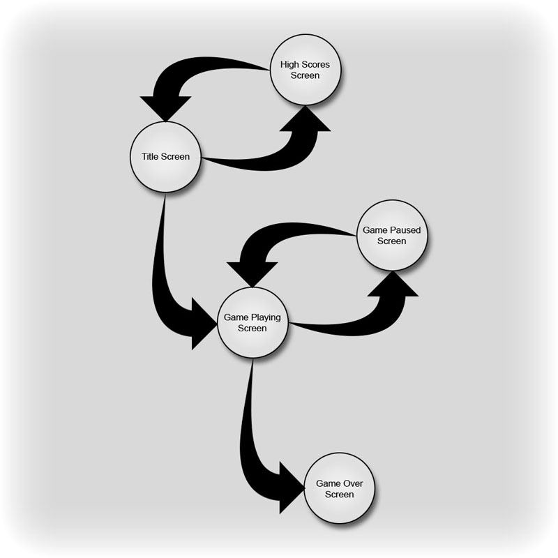
그림 11.1 - 탁구 게임 (예)에 대한 상태 머신도. 도표를 보면(자), 엔의 에리어는 상태로, 화살표는 상태간의 천이를 나타냅니다. 상기의 예에서는, Title Screen(타이틀 화면)로부터 Game Playing Screen(게임 실행 화면)에 하나의 천이가 있습니다만, Game Playing Screen(게임 실행 화면)로부터 Title Screen(타이틀 화면)에는 화살표로 나타나는 천이는 없기 때문에, 한방향만의 움직임이 됩니다. 위의 예에서는, 게임내에서의 다른 상태를 나타내기 위해서(때문에) 상태를 사용했습니다만, 플레이어나 AI 의 대전 상대 상태를 설명하기 위해서도 상태를 사용할 수 있습니다. AI 의 적이 이용 가능한 상태의 몇개의 예는 이하의 것입니다:
- Searching(색적)
- Attacking(공격)
- Fleeing(도주)
11. 2 UNREAL ENGINE 3 내 상태
다른 많은 프로그램 언어와 달리, UnrealScript 는, 클래스의 내부에서 상태를 정의하는 방법을 편입으로 제공합니다. 이것에 의해, 개개의 클래스에 대해서 복수의 동작 모드를 효과적으로 또 간단하게 작성할 수가 있습니다. 상태는, Function 키워드대신에 State 키워드를 사용할 뿐(만큼)의, 함수와 매우 자주(잘) 닮은 방식으로 선언됩니다. 최초로 State 키워드가 사용되어 계속되어 상태의 이름이 계속됩니다. 그리고, 새로운 상태에 속하는 코드를 격납하는 중이나 고화 사용됩니다. 상태가 어떻게 될까를 봅시다 :
state() GamePlaying
{
function UpdatePaddle()
{
// 패들을 움직이기 위한 유저의 입력을 조작.
}
}
state() GamePaused
{
function UpdatePaddle()
{
// 여기는 무동작일 것.
}
}
샘플의 코드중에서, 2 개 상태를 정의했던 : GamePlaying 및 GamePaused 입니다. 그러한 상태 중(안)에서, UpdatePaddle 라고 하는 같은 이름의 2 개의 함수를 볼 수 있습니다. 통상은, 동일한 이름으로 동일한 인수 리스트의 2 개의 함수의 존재는 용서되지 않습니다. 그러나, 이것이, UnrealScript 내 상태 프로그래밍의 장점입니다.
함수가, 상태 블록내에 UnrealScript 로 정의되었을 때는, Unreal 엔진은, 현재의 오브젝트 상태를 판단해, 그 상태에 대한 코드만을 실행합니다. 이것은, 실제의 함수 자신으로 상태를 조작할 필요가 없기 때문에, 조금 편해질 가능성이 있습니다. 예를 들어, UnrealScript 의 편입 상태 기구의 이용을 바라지 않으면, 이하와 같은 일을 실시하지 않으면 되지 않을 것입니다 :
function UpdatePaddle()
{
if (GameState == GamePlaying)
{
// 게임 실행 코드의 조작.
}
else if (GameState == GamePaused)
{
// 게임 포즈 코드의 조작.
}
}
여기에서는, 그만큼 나쁘지는 안보일지도 모릅니다만, 물론 상세한 실장 코드는 완전히 제공하고 있지않고, 이 예에서는, 단지 2 개 상태를 사용하고 있을 뿐입니다. 5 개 상태에 될 수가 있어 그 각각 꽤 세련된 상세 실장 코드가 필요하다면 상상해 주세요. 잘 해도, 상기와 같은 방법으로 상태를 조작하면(자), 매우 혼란할 가능성이 있는 것은 꽤 명백합니다.
AUTO 키워드
자동 상태는, 오브젝트의 초기 상태가 되는 상태입니다. 하나 더의 생각으로서는, 이 상태는 오브젝트가 자동적으로 개시될 때 상태입니다. 엔진은, 자동적으로 월드내의 모든 Actors 의 SetInitialState() 이벤트를 호출합니다. 이 이벤트는, 자동 상태로서 선언되고 싶은 차이 상태에도 Actor 상태를 설정하기 위한 기능을 가지고 있습니다. 상태가 자동인 것을 나타내기 위해서(때문에), 이하와 같이, 상태 선언전에 auto 키워드를 두어 주세요 :
auto state MyState
{
// 상태 코드는 여기에 기술합니다.
}
IGNORES 키워드
어느 상태내에서는 상태 함수의 몇인지를 무시하고 싶어지는 일이 있습니다. 예를 들어, 먼지가 도주중의 경우는, 타겟을 탐색하는 코드는 전혀 조작하고 싶지 않을지도 모릅니다. 함수를 오버라이드(override) 해, 함수의 본체를 비울 수도 있습니다만, 진절머리 나는 작업입니다. 다행히, UnrealScript 에서는, 이 문제에 대한 간단한 해결책을 제공하고 있는 : ignores 키워드입니다. ignores 키워드에, 칸마로 나눌 수 있었던 무시하고 싶은 함수의 리스트를 연결한 ignores 문을 사용하는 것만으로, 먼지는 현재 상태내에서, 이러한 함수의 실행을 실시하지 않는 것을 고할 수가 있습니다. 이 경우의 예는, 이하와 같이 됩니다.
state Fleeing
{
ignores SearchForTarget, SomeOtherFunction;
}
SUPER & GLOBAL 키워드
지금까지 몇번이나, 친클래스 또는 계층 구조를 오른 어딘가 특정의 클래스내의 오버라이드(override) 된 함수의 버젼을 호출하기 (위해)때문에, Super 키워드의 이용 방법을 보거나 실제로 사용하거나 해 왔습니다. 이 키워드는, 상태의 내부에서도, 함수중에서 사용될 때와 완전히 똑같이 동작합니다. 이 키워드를 지정하면(자), 친클래스 또는 계층 구조를 오른 임의의 클래스내의 같은 상태내에 포함된 함수의 버젼을 실행합니다. 만약, 친클래스의 그 상태에, 대상의 함수의 버젼이 없으면, 친클래스내의 함수의 global 버젼이 대신에 실행됩니다. 그 상태 또는, 친클래스내에서 글로벌하게 함수의 버젼이 존재하지 않으면, 스크립트의 컴파일시에 에러 보고되는 것은 분명하겠지요. Global 키워드는 똑같이 동작합니다만, 그 버젼은, 불려 간 임의 상태내에 없기 때문에, 상태내에서 오버라이드(override) 된 함수의 버젼을 허가할 뿐입니다. 바꾸어 말하면, 클래스에 속하는 함수의 버젼은, 함수의 오버라이드(override)를 실시하는 상태내로부터도 호출하는 것이 가능합니다. 이것으로, 상태로 정의된 함수내에 코드를 포함하지 말고, 일반적인 함수내에서의 코드의 이용을 아직도 가고 있어도, 클래스내에서 정의할 수 있는 함수의 일반적인 버젼이나 클래스에 속하는 상태내에서 재정의 가능한 함수에, 보다 고유의 버젼이 있는 경우, 코드의 재이용 촉진에 매우 편리가 될 가능성이 있습니다. Global 키워드를 사용하고 있는 예를 봅시다 :
class StateClass extends Actor;
event Touch()
{
`log(“Someone is near. ”);
}
state Damaging
{
event Touch()
{
Global.Touch();
`log(“Let＇s damage them! ”);
}
}
state Healing
{
event Touch()
{
Global.Touch();
`log(“Let＇s heal them! ”);
}
}
위의 예에서는, 먼지가 어느 상태에도 없을 때로는, 글로벌 Touch() 이벤트가 불려 가고 “Someone is near. ”의 프레이즈가 로그 파일에 출력됩니다. 그럼, 먼지가 Damaging 상태에 있을 때는, 무엇이 일어날까요 - 이 경우는, 클래스내에서 정의된 Touch() 이벤트를 호출하기 (위해)때문에 Global 키워드를 이용하기 위해(때문에), 프레이즈 “Someone is near. ”(이)가, 똑같이 출력됩니다. 그 다음에, 프레이즈 “Let＇s damage them! ”도 출력됩니다. 똑같이, Healing 상태에 있을 때에는, 프레이즈 “Someone is near. ”(이)가, 글로벌 Touch() 이벤트에 의해 출력되어 그 다음에, 프레이즈 “Let＇s heal them! ”(이)가, 그 상태의 Touch() 이벤트에 의해 출력됩니다.
분명하게, 이 특정의 예에서는, 글로벌 Touch() 이벤트가, 다만 1 행 뿐이므로, 그만큼 절약으로는 되지 않습니다만, 함수의 글로벌 버젼이, 그러한 상태 각각 대해 고유의 코드에 가세해, 1 개(살) 이상 상태내에서 사용되는 많은 코드행을 포함할 때는, Global 키워드의 사용이 매우 편리하게 될 가능성이 있는 증거로는 되겠지요.
주기 : Global 키워드의 이용은, 글로벌 함수가 많은 파생 버젼이 실행되는 결과가 됩니다. 이것은, 만약 함수가 현재의 클래스내에서 오버라이드(override)되어 있지 않은 경우는, 엔진은, 함수가 친클래스의 1 개 중(안)에서 마지막에 정의될 때까지, 계층 구조를 위에 더듬어 가는 것을 의미합니다.
11. 3 - 기본적인 상태 천이
상태를 실제로 이용하기 위해서는, 1 개 상태로부터 다음 상태에 천이, 또는 변경할 방법이 없으면 안됩니다. 어느 경우에는, 같은 상태내에서 1 개의 라벨로부터 다른 라벨에의 천이도 발생합니다. 그러한 기본적인 천이는, 이하의 함수의 1 개로 실행됩니다.GOTOSTATE
GotoState( optional name NewState, optional name Label, optional bool bForceEvents, optional bool bKeepStack )이 함수는, 지금의 오브젝트 상태가 주어진 상태로 바꾸어, 주어진 LabelName 로 코드의 실행을 개시합니다. 만약, LabelName 가 주어지지 않으면, Begin 라벨이 사용됩니다. 이 함수가 오브젝트 상태 코드로부터 불려 갔을 경우, 상태의 변환은 즉시 실행됩니다. 만약, 오브젝트 이외의 함수의 1 개로부터 불려 갔을 경우, 실행을 상태 코드에 잘라 되돌릴 때까지, 변환은 일어나지 않습니다. 이 함수의 호출이, 먼지를, 먼지의 현재 상태 이외가 다른 상태에의 천이를 일으킬 때에, 신규 상태의 BeginState() 이벤트 및 현재 상태의 EndState() 이벤트는 항상 실행됩니다. 이러한 이벤트는, 이하의 State Events 섹션으로 설명됩니다. bForceEvents 파라미터는, 비록 Actor 가 현재 상태와 같은 상태에 천이 할 때에도, BeginState() 및 EndState() 이벤트의 머지않아가 실행되어야할 것인가를 지정합니다. bKeepStack 파라미터는, 현재 상태 스택이 클리어 되거나 플래시 되거나 하는 것을 막아야할 것인가 어떤가를 지정합니다. 상태 스택은 본장의 여기 이후에 자세하게 설명됩니다.
GOTO
Goto(‘LabelName＇)이 함수는, 상태내에서 새로운 라벨에 점프 해, 그 지점으로부터 상태 코드의 실행을 계속하기 위해서 사용됩니다.
Goto()LabelName 파라미터 없음으로 불려 갔을 때는, Goto()는, 상태 코드의 실행을 정지합니다. 상태가 변경되는지, 새로운 라벨이 천이의 대상이 되었을 때에, 코드의 실행이 재개됩니다.
상태 이벤트
상태 이벤트는, 어느 상태로부터 다른 상태에 천이 한다, 또는, 어느 상황하로 같은 상태에 있을 때, 엔진으로부터 자동적으로 실행되는 이벤트 또는 함수입니다.BEGINSTATE
본이벤트는, 함수의 NewState 파라미터가 먼지의 현재 상태 이외 상태인지, 또는, bForceEvents 파라미터가 True 때에, GotoState() 함수내로부터 실행됩니다. 이 이벤트는, 임의 상태 코드가 실행되기 전에, 신규 상태에 천이 했을 때, 즉석에서 실행됩니다.BeginState( Name PreviousStateName )PreviousStateName 파라미터는, 현재의 천이가 일어나기 전, 직전에 먼지 상태의 이름을 보관 유지하고 있습니다. 이것은, 먼지가 어느 상태로부터 천이 해 왔는지를 기본으로 해, 특정의 동작의 실행을 허가합니다.
ENDSTATE
본이벤트는, 함수의 NewState 파라미터가 먼지의 현재 상태 이외 상태인지, 또는, bForceEvents 파라미터가 True 때에, GotoState() 함수내로부터 실행됩니다. 본이벤트는, 새로운 상태에 천이 하기 전에 실행됩니다.EndState( Name NewStateName )NewStateName 파라미터는, 현재의 천이가 일어난 후의 먼지 상태의 이름을 보관 유지하고 있습니다. 이것은, 먼지가 천이 하는 상태에 의존해, 특정의 동작의 실행을 허가합니다.
튜토리얼 11.1 - 상태 방아쇠, 파트 I: 함수의 오버라이드(override)
이 1 련의 튜토리얼에서는, 방아쇠로서 동작하는 매우 간단한 먼지의 작성을 보고 갑니다. 상태의 사용을 통해서, 방아쇠 되었을 때에 먼지의 동작은 변경됩니다. 이 예는, 매우 기본적인 레벨로 상태의 목적 및 사용법의 데모를 실시하는 의도가 있습니다. 초에, 클래스가 선언되어 하나의 상태가 실장됩니다. *1. * ConTEXT 를 오픈해, UnrealScript 하이 라이터를 사용해 신규 파일을 작성해 주세요. *2. * 기저의 Actor 클래스로부터 확장한 신규 클래스명 MU_StateTrigger 를 선언해 주세요. 이 클래스는, 배치 가능하게도 해 주세요, 그래서, UnrealEd 의 맵내에서 배치 가능하게 할 수 있습니다.class MU_StateTrigger extends Actor placeable;*3. * 본클래스는, 아무런 변수 선언을 가지지 않습니다만, 먼지에 메쉬 및 충돌 지오메트리를 주기 위해서(때문에) defaultproperties 블록이 사용됩니다. 이 블록내에는 추가하는 것이 많이 있습니다만, 본서에 이미 게재된 튜토리얼내의 Healer 먼지로부터 차용해 오므로, 그 설명에 많은 시간을 소비하는 것은 하지 않습니다. defaultproperties 블록을 작성해 주세요.
defaultproperties
{
}
많은 경우, defaultproperties 블록은, 먼지의 시각적인 관점에 관한 StaticMeshComponent 서브 오브젝트 및 먼지의 충돌에 관한 CylinderComponent 서브 오브젝트의 생성으로부터 구성됩니다. 이하의 섹션은, Healer.uc 스크립트로부터 카피 & 페이스트 한 것입니다.
Begin Object Class=StaticMeshComponent Name=StaticMeshComponent0
StaticMesh=StaticMesh'LT_Deco.SM.Mesh.S_LT_Deco_SM_PodiumScorpion'
Translation=(X=0. 000000, Y=0. 000000, Z=-40. 000000)
Scale3D=(X=0. 250000, Y=0. 250000, Z=0. 125000)
CollideActors=false
bAllowApproximateOcclusion=True
bForceDirectLightMap=True
bCastDynamicShadow=False
LightingChannels=(Dynamic=False, Static=True)
End Object
Components.Add(StaticMeshComponent0)
Begin Object Class=StaticMeshComponent Name=StaticMeshComponent1
StaticMesh=StaticMesh'LT_Deco.SM.Mesh.S_LT_Walls_SM_FlexRing'
Translation=(X=0. 000000, Y=0. 000000, Z=-40. 000000)
Scale3D=(X=0. 500000, Y=0. 500000, Z=0. 500000)
CollideActors=false
bAllowApproximateOcclusion=True
bForceDirectLightMap=True
bCastDynamicShadow=False
LightingChannels=(Dynamic=False, Static=True)
End Object
Components.Add(StaticMeshComponent1)
Begin Object Class=StaticMeshComponent Name=StaticMeshComponent2
StaticMesh=StaticMesh'LT_Light.SM.Mesh.S_LT_Light_SM_LightCone01'
Translation=(X=0. 000000, Y=0. 000000, Z=-40. 000000)
Scale3D=(X=2. 000000, Y=2. 000000, Z=-1. 000000)
CollideActors=false
bAllowApproximateOcclusion=True
bAcceptsLights=False
CastShadow=False
End Object
Components.Add(StaticMeshComponent2)
Begin Object Class=CylinderComponent NAME=CollisionCylinder
CollideActors=true
CollisionRadius=+0040. 000000
CollisionHeight=+0040. 000000
End Object
CollisionComponent=CollisionCylinder
Components.Add(CollisionCylinder)
bCollideActors=true
bStatic=true
bMovable=False
bEdShouldSnap=True

그림 11.2 - 서브 오브젝트는 상태 방아쇠의 외관을 작성합니다. *4. * Touch() 이벤트는 본클래스내에서 오버라이드(override) 됩니다. 초는, 먼지는 어느 상태도 아니기 때문에, 이 Touch() 이벤트는, 다른 먼지가 이 먼지와 충돌했을 때에는 항상 불려 갑니다. Touch() 이벤트를 선언해 주세요.
event Touch(Actor Other, PrimitiveComponent OtherComp, vector HitLocation, vector HitNormal)
{
}
Gameinfo 클래스의 Broadcast() 함수는, 충돌이 검지되었을 때, 화면에 메세지를 출력하기 위해(때문에), 이 이벤트내에서 사용됩니다.
WorldInfo.Game.Broadcast(self,"This is the StateTigger class. ");더해, 먼지는, 다음의 스텝에서 선언되는 새로운 상태인 Dialog 상태에 보내집니다.
GotoState('Dialog');
*5. * Dialog 상태는, MU_StateTrigger 클래스내에서 선언된 최초 상태입니다.
state Dialog
{
}
*6. * Touch() 이벤트는 Dialog 상태의 본체 중(안)에서 오버라이드(override) 됩니다. 이것에 의해, 먼지가 Dialog 상태내에 있어, 다른 먼지와의 충돌이 검지되었을 때에 Touch() 이벤트의 고유의 버젼의 실행을 실시합니다.
event Touch(Actor Other, PrimitiveComponent OtherComp, vector HitLocation, vector HitNormal)
{
}
이전의 Touch() 이벤트의 선언과 같이, 이 버젼은, 화면에 메세지를 출력하기 위해서 Broadcast() 함수를 사용합니다만, 이번은 메세지가 다를 뿐입니다.
WorldInfo.Game.Broadcast(self,"This is the base dialog state's output");*7. * MU_StateTrigger.uc 라는 이름으로, 스크립트를 MasteringUnrealScript\Classes 디렉토리내에 보존해, 스크립트를 컴파일 해 주세요. 만약, 구문 에러가 있었을 경우는, 수정해 주세요. *8. * UnrealEd 으로 DM-CH_11_Trigger.ut3 맵을 오픈해 주세요. 이것은, 본서에서는 몇번인가 본 적이 있는 간단한 2 방의 맵입니다.

그림 11.3 DM-CH_11_Trigger 맵 *9. * Actor Browser 를 오픈해, MU_StateTrigger 클래스를 선택해 주세요. 뷰포트내에서 오른쪽 클릭해, 새로운 먼지의 인스턴스를 배치하기 위해서 Add MU_StateTrigger Here 를 선택해 주세요.
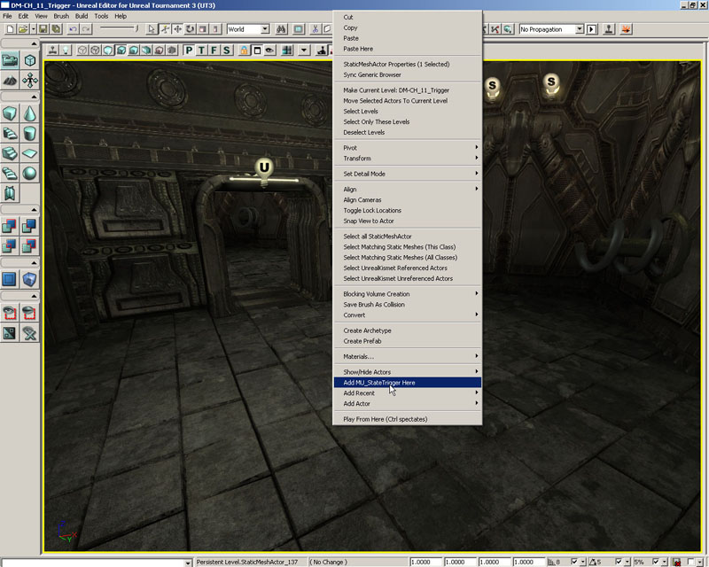
그림 11.4 - MU_StateTrigger 먼지가 맵에 추가됩니다. *10. * 1 개의 방의 마루 위에서 오른쪽 클릭해, 맵을 테스트하기 위해서 Play From Here 를 선택해 주세요. Touch() 이벤트를 초기화하기 위해(때문에), 방아쇠 먼지 위를 달려 나가, 화면상에 표시되는 메세지를 관찰해 주세요. 이것은, 원래의 Touch() 이벤트로부터의 메세지일 것입니다.

그림 11.5 - Touch() 이벤트 메세지의 출력. 여기서, 한번 더 방아쇠 먼지 위를 달려 나가 주세요. 이번은, Dialog 상태의 Touch() 이벤트로부터의 메세지가 대신에 표시될 것입니다.
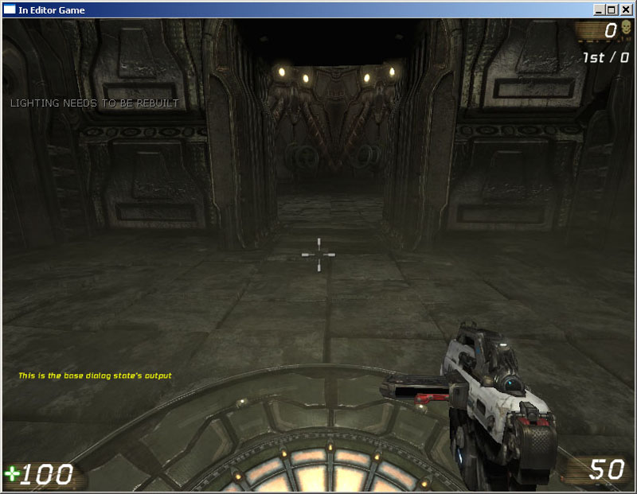
그림 11.6 - 이번은 Dialog 상태의 Touch() 이벤트 메세지가 출력됩니다. 이것은, 먼지가, 지금 Dialog 상태이기 때문으로, 이 버젼의 Touch() 이벤트가, 클래스내의 존재하는 다른 어느 버젼에 대해서도 우선 실행됩니다. *11. * 이후의 튜토리얼로 사용할 수 있도록(듯이), 새로운 이름으로 이 맵을 보존해 주세요. <<<< 튜토리얼의 종료 >>>>
11. 4 - 상태의 계승
계승은, 상태에 대해서 기대하도록(듯이) 동작합니다. 상태를 가지는 클래스로부터 파생했을 때는, 그 클래스내에서, 모든 상태, 상태 함수 및 라벨을 취득하기 때문에, 그것들을 오버라이드(override) 하는 일도, base class의 실장을 보관 유지할 수도 있습니다. 예를 봅시다 :
class Fish extends Actor;
state Eating
{
function Swim()
{
Log(“Swimming in place while I eat. ”);
}
Begin:
Log(“Just a fish in my Eating state. ”;
}
class Shark extends Fish;
state Eating
{
function Swim()
{
Log(“Swimming fast to catch up with my food. ”);
}
}
class Dolphin extends Fish;
state Eating
{
Begin:
Log(“Just a dolphin in my Eating state. ”);
}
위의 예에서는, Fish(물고기), Shark(상어) 및 Dolphin(있을까)의 클래스를 정의하고 있습니다. Shark 및 Dolphin 는, Fish 클래스로부터 파생해, 기저의 실장으로부터 다른 부분을 각각 오버라이드(override) 하는 ; Shark 클래스는, Eat 함수를 오버라이드(override) 해, Dolphin 클래스는, Begin 라벨을 오버라이드(override) 합니다.
상태의 확장
상속 클래스내에서, 상태를 오버라이드(override) 하고 있지 않으면, 현재의 클래스 상태를 확장하는 일도 가능합니다. 일련 상태로, 모두 공통의 기능을 가질 때에는, 매우 편리하게 될지도 모릅니다. 예를 들면, 먼지가 이동중에 동작하는 공통 상태 코드를 가진다고 해도, 먼지가 걷고 있을 때인가 먼지가 달리고 있을 때 게 응한 특정의 기능을 갖고 싶어질지도 모릅니다. 예를 봅시다 :
state Moving
{
// 모든 이동의 타입에 공통된 코드.
}
state Running extends Moving
{
// Running 고유의 코드.
}
state Walking extends Moving
{
// Walking 고유의 코드.
}
튜토리얼 11.2 - 상태 방아쇠, 파트 II: 상태의 계승
이 튜토리얼은, Dialog 상태에의 BeginState() 및 EndState() 이벤트의 추가를 봄과 동시에 어떻게 상태 계승이 동작하는지를 나타내기 위해서(때문에) 기저의 Dialog 상태를 확장한 Greeting 상태의 생성을 보고 갑니다. *1. * ConTEXT 및 MU_StateTrigger.uc 스크립트를 오픈해 주세요. *2. * Dialog 상태의 본체안의 Touch() 이벤트의 뒤로, PreviousStateName 라는 이름의 1 개의 Name 파라미터와 함께 BeginState() 이벤트를 선언해 주세요.
event BeginState(Name PreviousStateName)
{
}
*3. * BeginState() 이벤트의 내부에서, 화면에 메세지를 표시하기 위해서, 재차 Broadcast() 함수를 사용해 주세요. 이 메세지는, 먼지가 현재 상태가 되기 직전 상태를 표시합니다.
WorldInfo.Game.Broadcast(self,"Exiting the"@PreviousStateName@"State");*4. * 다음에, Name 파라미터 NextStateName 와 함께 EndState() 이벤트를 선언해 주세요.
event EndState(Name NextStateName)
{
}
*5. * 이 이벤트 중(안)에서, Broadcast() 함수에의 동일한 호출을 합니다.
WorldInfo.Game.Broadcast(self,"Entering the"@NextStateName@"State");*6. * Dialog 상태하에, Greeting 라는 이름의 새로운 상태를 선언해, Dialog 상태로부터 이 새로운 상태를 확장해 주세요.
state Greeting extends Dialog
{
}
이 상태는, 그 본체에는 아무런 함수나 이벤트를 선언하고 있지 않습니다만, 이미 Dialog 상태내에서 선언한 것과 같은 Touch(), BeginState() 및 EndState() 이벤트를 가지고 있습니다.
*7. * Touch() 이벤트는, 먼지가 이 상태내에 있는 동안에 충돌이 검지되었을 때, 화면에 완전하게 신규의 메세지를 출력하기 위해(때문에), Greeting 상태내에서 오버라이드(override) 됩니다.
event Touch(Actor Other, PrimitiveComponent OtherComp, vector HitLocation, vector HitNormal)
{
WorldInfo.Game.Broadcast(self,"Hello and welcome to the states example");
}
*8. * Dialog 상태의 Touch() 이벤트에 돌아와, 이벤트가 실행되었을 때에 Greeting 상태에 먼지를 두기 위해서(때문에) GotoState() 함수에의 호출을 추가합니다.
GotoState('Greeting');
*9. * 스크립트를 보존해, 스크립트를 컴파일 해, 에러가 발견되면(자) 수정해 주세요.
*10. * UnrealEd 및 이전의 튜토리얼로 작성한 MU_StateTrigger 먼지를 포함한 맵을 오픈해 주세요.
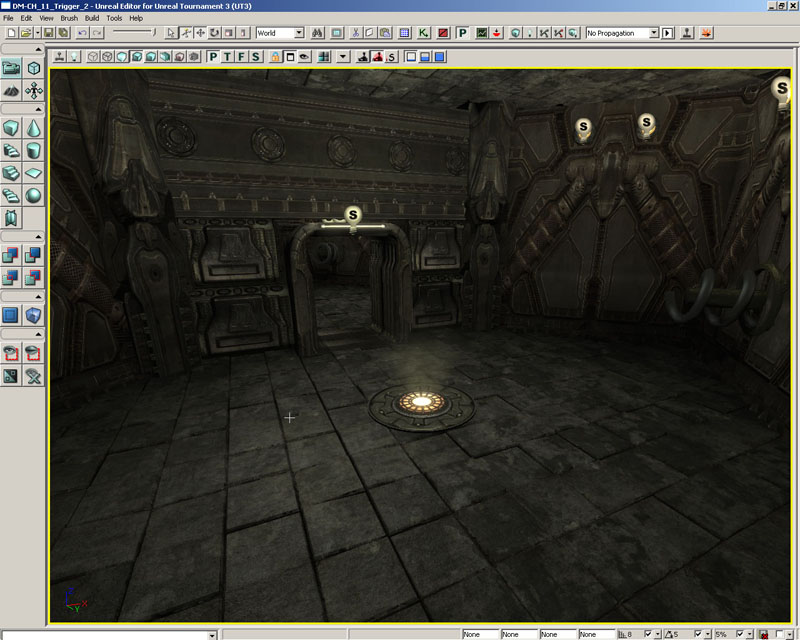
그림 11.7 - MU_StateTrigger 먼지를 포함한 맵. *11. * 맵을 테스트하기 위해서, 1 개의 방의 마루 위에서 오른쪽 클릭해, Play From Here 를 선택합니다. 클래스의 메인의 Touch 이벤트의 원래의 메세지를 보기 위해서(때문에) 방아쇠 먼지상을 달려 나가 주세요. 주기 : 초기의 먼지는 어느 상태에도 없기 때문에, BeginState() 이벤트의 PreviousStateName 파라미터에 의해 참조되는 상태명은 None 입니다.

그림 11.8 - 여기에서는, 2 개로 나누어진 메세지가 표시됩니다. *12. * Dialog 상태의 Touch() 이벤트를 실행해, 화면상에 새로운 메세지를 표시하기 위해서, 한번 더 방아쇠 먼지 위를 달려 나가 주세요. Dialog 상태의 EndState() 이벤트와 같게 Greeting 상태의 BeginState() 이벤트로부터의 메세지에도 주의해야 합니다.
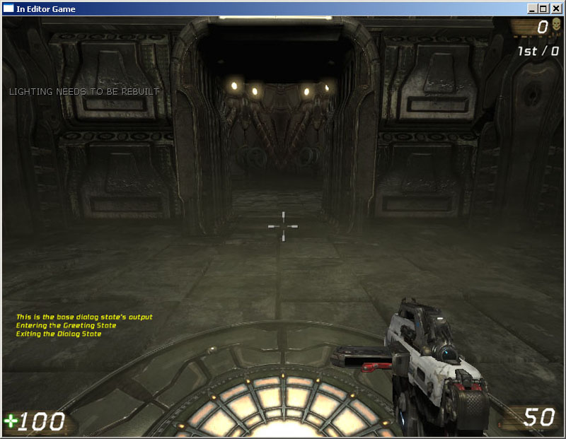
그림 11.9 - 3 개(살)의 모든 메세지가 이번은 표시되고 있습니다. *13. * 마지막으로, 한번 더 방아쇠 먼지 위를 달려 나가 주세요. 여기에서는, Greeting 상태의 Touch() 이벤트로부터의 메세지가 화면상에 표시될 것입니다.
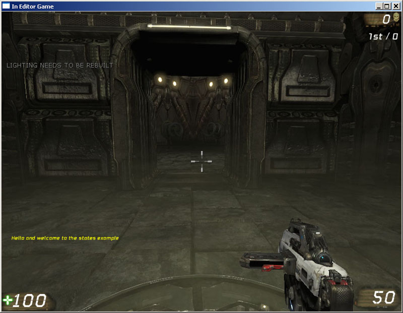
그림 11.10 - Greeting 상태의 Touch() 이벤트 메세지가 표시됩니다. <<<< 튜토리얼의 종료 >>>>
튜토리얼 11.3 - 상태 방아쇠, 파트 III: 자동 상태
상태의 선언시에 Auto 키워드를 사용하면(자), 성냥이 시작되었을 때에 먼지의 초기 상태를 그 상태로 합니다. 이 튜토리얼에서는, Dialog 상태는 MU_StateTrigger 의 디폴트 상태로서 설정됩니다. 또, 상태 계승의 개념을 보다 이해하기 위해서 더욱 2 개 상태가, 추가됩니다. *1. * ConTEXT 및 MU_StateTrigger.uc 스크립트를 오픈해 주세요. *2. * 게임의 개시시에, 먼지를 강제적으로 이 상태로 하기 위해서(때문에) Dialog 상태의 선언에 Auto 키워드를 추가해 주세요.
auto state Dialog
{
…
// 간략화하기 위해서 코드를 삭제했다
…
}
*3. * 이번은, Greeting 로부터 확장한 Inquisitor 라는 이름의 새로운 상태를 선언해 주세요.
state Inquisitor extends Greeting
{
}
*4. * 다음에, 선언한지 얼마 안된 Inquisitor 상태로부터 확장한 Goodbye 라는 이름 마시자 1 개(살)의 새로운 상태를 선언해 주세요.
state GoodBye extends Inquisitor
{
}
*5. * 여기서, Inquisitor 상태에 먼지를 두기 위해서(때문에) Greeting 상태의 Touch() 이벤트내의 GotoState() 함수에의 호출을 추가해 주세요.
GotoState('Inquisitor');
*6. * Greeting 상태로부터 Touch() 이벤트를 카피해, 이하에 나타내도록(듯이) Broadcast() 함수내의 메세지와 GotoState() 함수내 상태명을 변경해, Inquisitor 상태안에 붙여 주세요.
event Touch(Actor Other, PrimitiveComponent OtherComp, vector HitLocation, vector HitNormal)
{
WorldInfo.Game.Broadcast(self,"Are you learning a great deal about UnrealScript? ");
GotoState('Goodbye');
}
*7. * (와)과 같이 Touch() 이벤트를 Goodbye 상태에 붙여, 이 상태의 함수의 버젼용으로 메세지 및 상태명을 이하와 같이 변경해 주세요.
event Touch(Actor Other, PrimitiveComponent OtherComp, vector HitLocation, vector HitNormal)
{
WorldInfo.Game.Broadcast(self,"Thanks and have a nice day! ");
GotoState('Greeting');
}
*8. * 스크립트를 보존해, 스크립트를 컴파일 해 주세요. 어떠한 에러가 보고되면(자) 수정해 주세요.
*9. * UnrealEd 및 직전의 튜토리얼로 사용한 MU_StateTrigger 먼지를 포함한 맵을 오픈해 주세요. 1 개의 방의 마루에서 오른쪽 클릭해, 맵을 테스트하기 위해서 Play From Here 를 선택해 주세요.

그림 11.11 - Play From Here 기능을 이용해 맵을 테스트해 주세요. *10. * 방아쇠 먼지 위를 달려 나가 주세요. 메세지가 출력될 것입니다만, 이번은, 상태의 선언시에 Auto 키워드를 사용하고 있어, 먼지는, 디폴트로 Dialog 상태가 되기 (위해)때문에, 클래스의 메인의 Touch() 이벤트대신에 Dialog 상태의 Touch() 이벤트로부터의 메세지가 될 것입니다. 물론, BeginState() 및 EndState() 메세지도 Greeting 상태 및 Dialog 상태에 응해 표시됩니다.

그림 11.12 - Dialog 상태의 Touch() 이벤트 메세지가 최초로 표시됩니다. *11. * 나머지의 메세지를 보기 위해서(때문에) 방아쇠 위를 달려 나가는 것을 계속해 주세요. 먼지는, Greeting, Inquisitor 및 Goodbye 상태의 사이로, 각각의 상태의 메세지를 표시하면서, 연속적으로 루프 할 것입니다. <<<< 튜토리얼의 종료 >>>>
11. 5 - 상태 코드
상태는, 기본적으로 2 개의 부분으로부터 성립되고 있습니다 : 함수와 상태 코드입니다. 상태 코드는, 어떤 종류의 천이, 통상은 1 개 상태로부터 다른 상태에의 천이, 를 실시했을 때에 얻을 수 있는 코드입니다만, 경우에 따라서는, 같은 상태내에서도 얻을 수 있습니다. 이 코드는, 임의의 함수내에 있는 것은 아니고, 단지 상태 그 자체안에 있어, 어떤 종류의 라벨에 잇고 있습니다.라벨
라벨은, 대응하는 코드의 실행 개시점 상태 코드내의 특정의 위치를 지정하기 위해서 사용됩니다. 라벨은 임의의 유효한 이름을 가질 수가 있습니다. 라벨은, 오로지 캐릭터 라인으로 구성되는, 임의의 유효한 이름을 가질 수가 있습니다만, 상태 코드를 사용할 때는, "Begin" 라벨이라고 하는 1 개의 라벨은 특별합니다. 이 특정의 라벨은, 상태 코드의 실행의 개시에 사용되는 기정 라벨입니다. 이하의 예를 봐 주세요.
auto state MyState
{
function MyFunc()
{
// 무엇인가를 실행 ...
}
Begin:
Log(“MyState＇s Begin label is being executed. ”);
Sleep(5.0);
goto(‘MyLabel＇);
MyLabel:
Log(“MyState＇s MyLabel label is being executed. ”);
Sleep(5.0);
goto(‘Begin＇);
}
LATENT(잠재) 함수
위의 예에서는, 오브젝트가 MyState 에 들어갔다고 동시에, 메세지를 로그 출력해, 5 초간 sleeve 해, MyLabel 라벨에 가, 메세지를 로그 출력해, 5 초간 sleeve 하고 나서 처리를 한번 더 개시하는 Begin 라벨내의 코드의 실행을 개시합니다. 이것은, 오브젝트가 MyState 상태에 있는 동안, 계속됩니다. 상태가 sleeve 하고 있는 동안, 무엇이 일어나고 있는 것일까라고 의심스럽다고 생각할지도 모릅니다. 이것은 좋은 질문입니다. 왜냐하면, 통상은 실행중의 코드는, 블로킹 하고 있기 (위해)때문에, 다른 임의의 코드가 실행 가능하게 되기 전까지, 그 실행을 모두 완료해야 하기 때문입니다. 그런데, UnrealScript 에는, 잠재 함수로 불리는 특별한 함수가 있습니다. 단적으로 말하면, 이러한 함수는 다른 코드 (즉, 다른 상태의 코드 및 게임의 나머지의 부분)의 실행을 허가합니다만, 현재의 실행 패스의 다음의 코드의 실행을 멈춥니다. 잠재 함수의 작업을 실시할 때, 기억해 둘 필요가 있는 것은, 정말로 그저 불과 뿐입니다 : *1. * 함수는, 어느 시간량이 경과하면(자) 리턴 하기 때문에, 상태 코드의 실행은 계속됩니다 *2. * 잠재 함수는, 상태 코드 중(안)에서 마셔 사용할 수가 있습니다 *3. * 함수의 본체내로부터 잠재 함수의 호출은 할 수 없습니다ACTOR LATENT(먼지) 잠재 함수
Actor 클래스는, Actor 클래스로부터 확장한 임의의 클래스 상태 코드내에서 사용 가능한 2 개(살)의 매우 일반적인 잠재 함수를 가지고 있습니다Sleep
이 함수는 지정된 양의 시간, 상태 코드의 실행을 정지하는 것입니다. 지정한 시간이 경과하면(자), 상태 코드는, Sleep() 함수 호출의 직후부터 직접 실행을 재개합니다.Sleep( float Seconds )Seconds 는, 상태 코드가 정지해야 할 초수입니다.
FinishAnim
이 함수는, 함수에게 건네진 AnimNodeSequence 의 현재의 애니메이션이 종료할 때까지, 상태 코드의 실행을 정지합니다.FinishAnim( AnimNodeSequence SeqNode )SeqNode 파라미터는, 애니메이션을 재생하고 있는 먼지와 관계하는 AnimuTree 내의 애니메이션 노드입니다.
CONTROLLER LATENT(콘트롤러 잠재) 함수
Controller 클래스는, 주로 패스 검색 및 네비게이션에 관한 몇개의 잠재 함수를 가집니다.MoveTo
본함수는, Controller 에 의해 제어되고 있는 Pawn 를 월드내의 특정의 장소에 이동시킵니다.MoveTo(vector NewDestination, optional Actor ViewFocus, optional bool bShouldWalk = (Pawn ! = None) - Pawn.bIsWalking : false)NewDestination 는, Pawn 가 이동해야 할 월드내의 위치입니다. ViewFocus 는, Pawn 가 대면해야 할 Actor 입니다. 그 회전은, Pawn 가 항상 ViewFocus와 마주보고 있는 것을 확실히 하기 위해서, 갱신됩니다. bShouldWalk 파라미터는, 새로운 위치로 향해 Pawn 가 걸을까 달리는지를 지정합니다.
MoveToward
이 함수는, 위치대신에 특정의 Actor 로 향해 이동하기 위해(때문에), Controller 에 의해 Pawn 가 제어되는 이외는 MoveTo 함수와 닮아 있습니다.MoveToward(Actor NewTarget, optional Actor ViewFocus, optional float DestinationOffset, optional bool bUseStrafing, optional bool bShouldWalk = (Pawn ! = None) - Pawn.bIsWalking : false)NewTarget 는 Pawn 가 이동의 대상으로 해야 할 Actor 입니다. ViewFocus 는 Pawn 가 대면해야 할 Actor 입니다. 그 회전은 Pawn 가 항상 ViewFocus와 마주보고 있는 것을 확실히 하기 위해서, 갱신됩니다. DestinationOffset 는, NewTarget 의 위치에 대한 상대 오프셋(offset)를 허가해, Pawn 를 정확한 위치는 아니지만 NewTarget 의 근처에 이동시킵니다. bUseStrafing 파라미터는, Pawn 가 새로운 목적지로 이동하는 동안에 기관총 소사 할 수 있도록(듯이) 하는지를 지정합니다. bShouldWalk 파라미터는, 새로운 위치로 향해 Pawn 가 걸을까 달리는지를 지정합니다.
FinishRotation
이 함수는, Controller 에 의해 제어된 Pawn 의 회전이 Pawn 의 DesiredRotation 프롭퍼티로 지정된 회전과 일치할 때까지, 상태 코드의 실행을 정지합니다.FinishRotation()
WaitForLanding
이 함수는, PHYS_Falling 물리 타입때에 Controller 에 의해 제어된 Pawn 가 착륙할 때까지 상태 코드의 실행을 정지합니다.WaitForLanding(optional float waitDuration)waitDuration 파라미터는, Pawn 가 착륙할 때까지 대기하는 최대의 초수입니다. 이 시간이 경과하기까지 Pawn 가 착륙하지 않았던 경우는, LongFall () 이벤트가 실행됩니다.
UTBOT 잠재 함수
UTBot 클래스는, 신규의 AI 동작의 작성에 편리한 2 개의 잠재 함수를 가지고 있습니다.WaitToSeeEnemy
이 함수는, 제어중의 Pawn 로부터 적이 보이는 설정때만, Pawn 가, 적을 직접 볼 때까지, 상태 코드의 실행을 정지합니다.WaitToSeeEnemy()
LatentWhatToDoNext
이 함수는, AI 엔티티의 의사결정 기능을 포함한 WhatToDoNext() 함수를 호출하기 위해서(때문에) 사용됩니다. 잠재 버젼을 사용하면(자), 적절한 시간이 경과했을 때, 예를 들어 다음의 틱시, 에 호출을 합니다. 이것에 의해, 일어날 가능성이 있는 경합 조건의 발생을 막아, AI 엔티티의 동작 실행의 시간을 줍니다.LatentWhatToDoNext()
11. 6 - 상태 스택 동작
1 개 상태로부터, 이제(벌써) 1 개 상태에 천이 하기 위해서 GotoState 함수를 사용 가능한 (일)것은, 이미 설명해 왔습니다. 이것이 발생했을 때에는, 상태는 변경되어, 이전 상태에 돌아오기 위한 길은 않고, 많은 경우에는, 그것이 바람직하는 동작입니다. 예를 들어, EngagingEnemy(적과의 교전)로부터 RunningLikeACoward(겁장이와 같이 달린다) 상태로 바뀌었을 때는, 이전 상태에 돌아오고 싶다고는 생각하지 않을 것입니다. 현재 상태를 멈추는 것을 바라지 말고, 다른 상태에 가, 그리고 돌아온 있고 경우에는, PushState 및 PopState 함수가 있습니다.PUSHSTATE & POPSTATE
PushState 함수는, GotoState 함수로 거의 같습니다. 호출할 때 천이 하고 싶은 상태와 옵션으로 실행을 개시하고 싶은 라벨을 건네줍니다. 본함수는, 다른 상태를 푸쉬 해 스택의 선두에 새로운 상태를 두므로, 이러한 이름이 되고 있습니다. PopState 함수는, 파라미터가 없고, 이전 실행하고 있던 상태에 되돌립니다. 간단한 예를 봅시다 :
state Looking
{
function Look()
{
PushState(‘Peeking＇);
// 무엇인가 다른 흥미로운 일을 실행 ...
}
Begin:
PushState(‘Peeking＇, ‘Begin＇);
// 좀 더 다른 흥미로운 일을 실행 ...
}
state Peeking
{
Begin:
Log(“Nothing to see here. ”);
PopState();
}
PushState 를 사용할 때에, 조심하지 않으면 안 되는, 몇개의 흥미로운 실장에 관한 상세 사항이 있습니다 :
- 상태 코드내로부터 PushState 가 불려 갔을 때는, 그 호출은, 잠재 함수로서 취급됩니다. 그 때문에, 위의 예에서는, Begin 라벨내에서 PushState 가 불려 갔을 때는, 그 호출의 뒤의 코드는, 상태가 팝 백해 올 때까지 실행되지 않습니다.
- 함수내로부터 PushState 가 불려 갔을 때는, 그 호출은, 잠재 함수로서 취급되지 않습니다. 그 때문에, 위의 예에서는, Look 함수로부터 PushState 가 불려 갔을 때에, PushState 는, 상태 코드내로부터 마셔 잠재 함수로서 취급되므로, 그 호출해 이후의 코드는 즉석에서 실행되겠지요.
- 같은 상태를 스택상에 몇번도 푸쉬 할 수 없습니다 ; 이 처리는 실패합니다.
상태 스택 동작 이벤트
이러한 이벤트는, 이전 설명한 BeginState() 및 EndState() 이벤트를 닮아 있습니다만, 상태간의 천이를 실시하기 위해서(때문에), PushState() 및 PopState()를 사용했을 때는, 그러한 이벤트의 기능을 옮겨놓습니다. 이러한 이벤트는, BeginState() 및 EndState() 이벤트와 달리, 파라미터를 가지지 않습니다.PUSHEDSTATE
본이벤트는, PushState() 함수를 이용해 신규 상태에 천이 했을 때, 푸쉬 한 상태내에서 즉시 실행됩니다.POPPEDSTATE
본이벤트는, PopState() 함수를 이용해 이전 상태에 천이를 되돌렸을 때에, 팝 한 상태내에서 즉시 실행됩니다.PAUSEDSTATE
이 이벤트는, PushState() 함수를 이용해, 새로운 상태에 천이 했을 때에 포즈 된 상태내에서 실행됩니다.CONTINUEDSTATE
이 이벤트는, PopState() 함수를 이용해, 이전 상태에 천이가 돌아왔을 때에, 계속된 상태내에서 실행됩니다.11. 7 - 상태에 관련한 함수
이미 본장으로 자세하게 말한 함수에 가세해, 그 외에, 상태에 관련한 약간의 함수가 있어, 상태를 이용해 신규의 먼지를 생성할 때에는 매우 편리합니다.ISINSTATE
이 함수는, 먼지의 현재 액티브한 상태인가, 또는, 주어진 상태가 스택상에 있을까를, 판별하기 위해서 사용할 수 있습니다.IsInState( name TestState, optional bool bTestStateStack )TestState 는, 확인하고 싶은 상태의 이름입니다. 먼지가 현재 이 상태이면, 함수는 True 치를 리턴 합니다. bTestStateStack 파라미터는, 상태 스택내에서 주어진 상태를 체크할지 어떨지를 지정합니다. 만약 True 이며, 스택내에 상태가 놓여져 있으면, 함수는 True 치를 리턴 합니다. 예를 듭니다 :
state Looking
{
// 어떠한 유용한 코드 ...
}
state Staring extends Looking
{
// 어떠한 유용한 코드 ...
}
function StartLooking()
{
if (! IsInState(‘Looking＇))
{
PushState(‘Looking＇);
}
}
IsInState() 함수는 TestState 로부터 확장된 임의에 상태에 대해서 True 를 리턴 하므로, 먼지가, Looking 상태 또는 Staring 상태의 언젠가이면, 예의 안의 IsInState() 함수 콜은 True 를 리턴 하겠지요. 이 기능은 스택내에 있는 계승된 상태에 대해서는 동작하지 않습니다.
스택을 참조하는 메소드를 사용한 동일한 예입니다 :
state Looking
{
// 어떠한 유용한 코드 ...
}
state Staring extends Looking
{
// 어떠한 유용한 코드 ...
}
function StartLooking()
{
if (! IsInState(‘Looking＇, True))
{
PushState(‘Looking＇);
}
}
이 예에서는, IsInState() 함수는, Looking 상태 자신이, 상태 스택내에 출현했을 때에게만 True 를 리턴 합니다. 만약, Staring 상태만이 나타났을 경우는, False 치가 리턴 됩니다.
GETSTATENAME
이 함수는, 먼지의 현재 액티브한 상태의 명칭을 리턴 합니다. 이 함수에는 파라미터는 없습니다. 이 함수는, IsInState 와 같은 상황으로 자주 사용됩니다만, 이 함수에서는, 계승된 상태는, 전혀 동작하지 않습니다. 먼지가 현재 있는 실제 상태의 이름만이 리턴 됩니다. 예를 듭니다 :
state Looking
{
// 어떠한 유용한 코드 ...
}
state Staring extends Looking
{
// 어떠한 유용한 코드 ...
}
function StartLooking()
{
if (GetStateName() == ‘Looking＇)
{
PushState(‘Staring);
}
}
PushState() 함수 호출은, 먼지가 Looking 상태에 있을 때에만 실행됩니다.
ISCHILDSTATE
이 함수는, 1 개 상태가 다른 상태로부터 확장되었는지 어떠했는지를 판별하기 위해서 사용됩니다. 만약, 그렇다면, True 를, 그렇지 않으면 False 를 리턴 합니다.IsChildState(Name TestState, Name TestParentState)TestState 는, 확인하는 아이 상태의 이름입니다. TestParentState 는, 그에 대한 확인하는 부모 상태의 이름입니다.
DUMPSTATESTACK
본함수는, 디버그 용도로, 현재 상태 스택을 로그에 출력합니다. 상태 및 상태 스택 동작을 빈번하게 사용하는 신규의 클래스를 생성할 때에는, 바람직하지 않은 또는 바라지 않는 동작이 일으켜질 가능성은 매우 높아집니다. 이 함수는, 이러한 문제나 버그를 간단하게 정리합니다.튜토리얼 11.4 - 상태 방아쇠, 파트 IV: 상태 스택 동작
PushState() 및 PopState() 함수를 사용해, 상태를 스택 하는 기능은, Unreal Engine 3 및 UT3 에서는, 신규 기능입니다. 이 튜토리얼에서는, 상태 방아쇠 먼지는, 이 메소드와 GotoState() 함수 호출의 차이를 나타내, Greeting 및 Inquisitor 상태간을 안내하기 위해서, 그러한 함수를 사용합니다 *1. * ConTEXT 및 M_StateTrigger.uc 스크립트를 오픈해 주세요. *2. * Greeting 상태로, GotoState() 함수 소환을 comment out 해, 똑같이 Inquisitor 상태를 건네주는 PushState() 함수 소환과 옮겨놓아 주세요.
//GotoState('Inquisitor');
PushState('Inquisitor');
*3. * 그리고, Inquisitor 상태 중(안)에서 GotoState() 함수 소환을 comment out 해, 단순한 PopState() 함수 소환과 옮겨놓아 주세요.
//GotoState(‘Goodbye＇); PopState();*4. * 스크립트를 보존해, 스크립트를 컴파일 해 주세요. 에러가 있으면 수정해 주세요. *5. * UnrealEd 및, 이전의 튜토리얼로 사용한 MU_StateTrigger 먼지를 포함한 맵을 오픈해 주세요.
*a. * 맵을 테스트하기 위해서, 방의 1 개의 마루 위에서 오른쪽 클릭해, Play From Here 를 선택해 주세요.
*b. * Dialog 상태의 메세지를 표시하기 위해서 방아쇠 먼지 위를 달려 나가, 먼지를 Greeting 상태에 보내 주세요.

그림 11.13 - Dialog 상태의 Touch() 및 EndState() 이벤트 메세지 및 Greeting 상태의 BeginState() 이벤트 메세지가 표시됩니다.
*c. * 돌아와 먼지 위를 달려 나가 Touch() 이벤트로부터의 메세지만이 표시되는 것에 주의해 주세요. Inquisitor 및 Greeting 상태에 대응한 BeginState() 및 EndState() 이벤트는, 무시됩니다. GotoState() 함수만이, 이러한 이벤트를 실행시킵니다.

그림 11.14 - Greeting 상태의 Touch() 이벤트로부터의 메세지만이 표시됩니다.
*d. * Inquisitor 상태의 Touch() 이벤트 메세지가 표시하기 위해서, 재차, 먼지 위를 달려 나가 주세요.

그림 11.15 - 여기서, Inquisitor 상태로부터의 Touch() 이벤트 메세지가 표시된다.
*e. * 마지막으로, 먼지 위를 한번 더 달려 나가 주세요. Inquisitor 상태의 Touch() 이벤트내의 PopState() 함수 소환이, 먼지를, 한번 더 그리팅 메세지를 표시시키는 Greeting 상태에 두는 것에 주의해 주세요.

그림 11.16 - Greeting 상태로부터의 메세지가 한번 더 표시됩니다. *6. * 클래스가 스택 동작을 이용하고 있기 (위해)때문에, 분명하게 BeginState() 및 EndState() 이벤트는 동작하지 않습니다. 이전과 같은 방식으로, 어느 상태가, 푸쉬 되었는지 팝 되었는지를 지정하는 이벤트를 얻기 위해서(때문에), 상태 스택 동작이 교체에 사용됩니다. Dialog 상태의 PushedState() 이벤트를 선언하는 것으로부터 시작해 주세요.
event PushedState()
{
}
본함수내에서는, BeginState() 이벤트내에서 메세지를 출력하기 위해서 사용된 코드행과 같은 것을 배치해 주세요, 다만, PreviousStateParameter 의 교체에 상태의 적절한 이름을 취득하기 위해(때문에) GetStateName() 함수를 사용해 주세요. 또, "Exiting" 도 "Pushing" 라고 읽어 바꾸어 주세요.
WorldInfo.Game.Broadcast(self,"Pushing the"@GetStateName()@"State");모든 이벤트 선언을 3 회 카피 및 붙이고 해, 새로운 선언의 이름을 PoppedState, PausedState 및 ContinuedState 로 변경해 주세요. 그리고, "Pushing" 라고 하는 단어가, 각각, "Popping","Pausing" 및 "Continuing" 가 되도록(듯이) 변경해 주세요.
event PoppedState()
{
WorldInfo.Game.Broadcast(self,"Popping the"@GetStateName()@"State");
}
event PausedState()
{
WorldInfo.Game.Broadcast(self,"Pausing the"@GetStateName()@"State");
}
event ContinuedState()
{
WorldInfo.Game.Broadcast(self,"Continuing the"@GetStateName()@"State");
}
*7. * 스크립트를 보존해, 재차 스크립트를 컴파일 해, 에러가 검출되면(자) 수정해 주세요.
*8. * UnrealEd 및 이전에 상태 방아쇠 먼지를 포함해 보존한 맵을 오픈해 주세요.
*a. * 방의 1 개의 마루 위에서 오른쪽 클릭해, 지도를 테스트하기 위해서 Play From Here 를 선택해 주세요.
*b. * Dialog 상태의 메세지를 표시해, 먼지를 Greeting 상태에 보내기 위해서(때문에), 방아쇠 먼지상을 달려 나가 주세요.

그림 11.17 - Dialog 상태의 Touch() 및 EndState() 이벤트 메세지 및 Greeting 상태의 BeginState() 이벤트 메세지가 표시됩니다.
*c. * 먼지상으로 돌아가 달려 나가, 이번은, PushState() 함수를 사용하기 위해(때문에), PausedState() 및 PushedState() 이벤트로부터의 메세지 표시에 주의해 주세요.
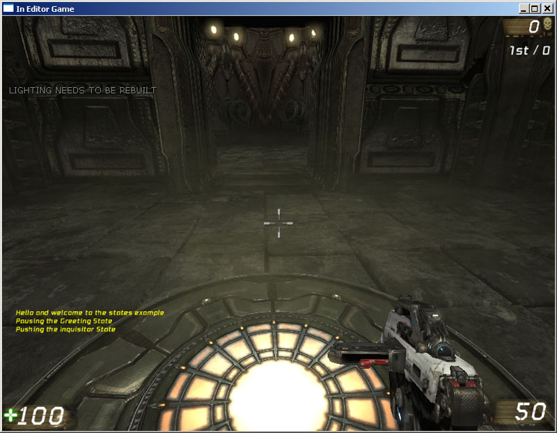
그림 11.18 - Touch() 메세지에 가세해, PausedState() 및 PushedState() 메세지가 표시됩니다.
*d. * Inquisitor 상태를 팝 하기 위해서, 재차 먼지상을 달려 나가 주세요. PopState() 함수 소환에 의해, 여기에서는, PoppedState() 및 ContinuedState() 이벤트가 표시되어야 합니다.
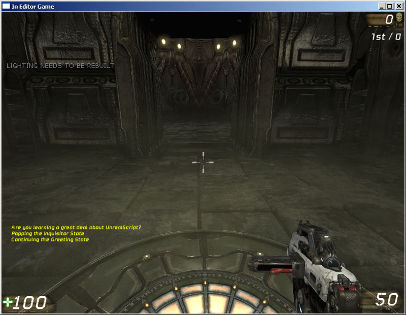
그림 11.19 - PoppedState() 및 ContinuedState() 메세지는, Touch() 메세지와 함께 표시됩니다. 이 짧은 일련의 튜토리얼에서는, 단지, 어떠한 상태가 있어, 어떻게 동작할까의 기본적인 이해를, 상태간의 천이의 여러가지 방법을 포함해, 제공하려고 했습니다. 향후의 튜토리얼에서는, 게임에서 사용되는 흥미로운 새로운 아이템을 작성하기 위해서, UT3 내에서, 어떻게 상태가 사용될까를 보다 좋게 체감 할 수 있는, 비교적 복잡한 예로, 상태는 사용됩니다. <<<< 튜토리얼의 종료 >>>>
튜토리얼 11.5 - 포대, 파트 I: MU_AUTOTURRET 클래스 및 구조체 선언
상태의 이용에 대한 기본 사항은 끝냈으므로, 여기서, 임의의 시인 가능한 적을 자동 인식하는 새롭게 배치 가능한 감시 포대의 작성에 착수합시다. 이 클래스는, 먼지의 시각적 국면을 제공해, 그 환경내의 요소에 근거해 동작을 바꾸기 위해서(때문에) 상태를 사용하는 Pawn 클래스의 확장입니다. 포대 상태에 착수하기 전에, 실행해야할 것인가든지의 초기 셋업이 있기 때문에, 최초로 끝내 버립시다. *1. * ConTEXT 를 오픈해, UnrealScript 하이 라이터를 사용하는 신규 파일을 작성해 주세요. *2. * 초에, MU_AutoTurret 로 불리는 신규 폰크라스를 선언해, 기저의 Pawn 클래스로부터 확장해 주세요. 또, UnrealEd 안의 Properties 윈도우로 표시되지 않게, AI, Camera, Debug, Pawn 및 Physics 카테고리를 숨겨, 클래스를 배치 가능하게 해 주세요.class MU_AutoTurret extends Pawn HideCategories(AI, Camera, Debug, Pawn, Physics) placeable;*3. * 본클래스는, 변수의 선언으로 옮기기 전에 정의할 필요가 있는 구조체를 몇개인가 사용합니다. 우선, Pitch, Yaw 및 Roll 의 각각의 축의 주위에서의 최소 및 최대의 회전을 나타내는 2 개의 Rotators 로 구성되는 새로운 RotationRange 구조체가 작성됩니다. 또, 회전의 개개의 축으로 대해 한계를 적용할지 어떨지를 지정하는 3 개의 Bool 변수가 선언됩니다.
//Min 및 Max Rotators Struct - 포대의 회전을 제한한다
struct RotationRange
{
var() Rotator RotLimitMin;
var() Rotator RotLimitMax;
var() Bool bLimitPitch;
var() Bool bLimitYaw;
var() Bool bLimitRoll;
structdefaultproperties
{
RotLimitMin=(Pitch=-65536, Yaw=-65536, Roll=-65536)
RotLimitMax=(Pitch=65536, Yaw=65536, Roll=65536)
}
};
주기 : 개개의 Rotator 에 대한 디폴트치가, structdefaultproperties 블록을 사용해 정의되었습니다.

그림 11.20 - 우측에서는, 회전은 제한되고 있지 않습니다, 좌측에서는 제한되고 있습니다. *4. * 몇개의 SoundCues 에의 참조를 포함한 TurretSoundGroup 라는 이름의 구조체가 이하와 같이 정의되고 있습니다. 이러한 SoundCue 참조는, 특정의 환경하에서 연주되는 사운드를 결정하기 위해서(때문에) 사용됩니다.
// 포대의 동작에 관한 사운드
struct TurretSoundGroup
{
var() SoundCue FireSound;
var() SoundCue DamageSound;
var() SoundCue SpinUpSound;
var() SoundCue WakeSound;
var() SoundCue SleepSound;
var() SoundCue DeathSound;
};
*5. * 포대에서는, 포구의 섬광, 데미지 효과 및 파괴 효과와 같은 특수 효과가 몇개인가 필요합니다만, 그러한 효과에 대해서 사용하는 ParticleSystem 에의 참조가 필요합니다. TurretEmitterGroup 라는 이름의 구조체에서는, 이러한 참조를 보관 유지합니다. 본구조 체내에는, 포구의 섬광의 효과의 표시 시간량을 결정하는 Float , 파티클의 spawn(스폰) 레이트의 제어를 허가하는 파괴 효과의 파티 오는 시스템내의 파라미터의 Name 및, 포대의 파괴 후도 데미지 효과를 계속하는지를 지정하기 위한 Bool 등, 그 밖에도 몇개의 프롭퍼티가 존재하고 있습니다.
// 포대에 대한 PSystems
struct TurretEmitterGroup
{
var() ParticleSystem DamageEmitter;
var() ParticleSystem MuzzleFlashEmitter;
var() ParticleSystem DestroyEmitter;
var() Float MuzzleFlashDuration;
var() Name DamageEmitterParamName;
var() Bool bStopDamageEmitterOnDeath;
structdefaultproperties
{
MuzzleFlashDuration=0. 33
}
};
MuzzleFlashDuration 프롭퍼티에 대해서, 0.33 을 디폴트치로 설정해 있는 것에 유의해 주세요. 많은 경우, 이 값은, 포구의 섬광의 적절한 초기치가 될 것입니다.
*6. * TurretBoneGroup 라는 이름 마시자 1 개의 구조체는, 3 개의 소켓명 및 골격 콘트롤러의 이름에의 참조를 제공하고 있습니다. 소켓명은, 임의의 파티클 효과에 대해서 locator, 및 포대가 발사한 발사물의 spawning(스포닝)로서 사용되는 소켓을 참조하고 있습니다. 포대의 회전을 제어하기 위해(때문에), 포대에 할당할 수 있었던 AnimTree 내의 SkelControlSingleBone 를 조작하기 위해서 골격 콘트롤러의 이름이 사용됩니다.
//Bone, Socket, Controller 의 이름
struct TurretBoneGroup
{
var() Name DestroySocket;
var() Name DamageSocket;
var() Name FireSocket;
var() Name PivotControllerName;
};
*7. * TurretRotationGroup 라는 이름의 마지막 구조체는, 아이돌, 경계 또는 파괴시에 포대가 취해야 할 포즈를 지정하는 3 개의 Rotators 를 포함합니다. 포대의 회전은, 상황에 따라, 현재의 방향으로부터, 이것들 3 개의 회전의 1 개에 보간 됩니다. 본구조체는, 포대가 파괴되었을 때에 미리 정의된 포즈, 또는 랜덤에 계산된 포즈의 머지않아를 사용하는지를 지정하는 Bool 치도 포함합니다.
// 포대의 포즈를 정의하는 Rotator
struct TurretRotationGroup
{
var() Rotator IdleRotation;
var() Rotator AlertRotation;
var() Rotator DeathRotation;
var() Bool bRandomDeath;
};
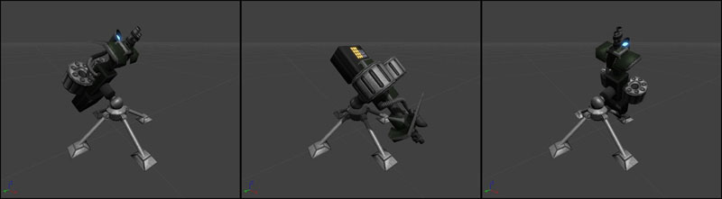
그림 11.21 - 포대의 메쉬에 대한 포즈를 작성하기 위해서 사용되는 Rotations . *8. * 스크립트를, MasteringUnrealScript/Classes 디렉토리에, 클래스명으로 합치하도록(듯이) MU_AutoTurret.uc 라는 이름으로 보존해 주세요. <<<< 튜토리얼의 종료 >>>>
튜토리얼 11.6 - 포대, 파트 II: 클래스 변수 선언
MU_AutoTurret 클래스에서 필요한 구조체를 선언했으므로, 클래스 변수의 선언을 할 수 있게 되었습니다. 이러한 변수는, 2 개의 그룹으로 나누어져 있습니다. 최초의 그룹은, 클래스내의 코드에 의해서만 사용되어 UnrealEd 내의 디자이너로부터는 이용할 수 없는 변수로부터 완성됩니다. 2 번째의 그룹은, UnrealEd 중(안)에서 포대만 내기 및 동작을 커스터마이즈 하기 위해서 디자이너를 사용할 수 있는 프롭퍼티가 됩니다. 이 튜토리얼에서는, 편집할 수 없는 변수인, 제 1 의 그룹의 선언을 설명하고 있습니다. *1. * ConTEXT 및 MU_AutoTurret.uc 스크립트를 오픈해 주세요. *2. * 포대는, 추적해 발포하기 위해서, 무엇을 사격할까를 알 필요가 있습니다. 이 타겟은, 포대의 타겟으로서 2 개의 다른 참조를 가지는 Pawn 입니다. 1 개째의 참조는, 마지막 틱의 사이에 포대가 추적하고 있던 현재의 타겟이 되어, 이제(벌써) 1 개(살)은, 현재의 틱의 사이에 포대가 추적해야 할 신규 타겟에의 참조입니다. 이 2 개의 참조는, 틱 마다의 타겟 변경을 나타내는 것을 가능하게 하기 위해서, 필요합니다.var Pawn EnemyTarget; // 현재의 틱으로 포대가 타겟으로 해야 할 새로운 적 var Pawn LastEnemyTarget; // 직전의 틱으로 포대가 타겟으로 하고 있던 적*3. * 포대는, 플레이어가 움직인 것을 알기 위해서(때문에), 포대로부터 타겟에의 방향도 계속 추적하지 않으면 안됩니다. 타겟으로 붙어서는, 현재의 틱의 사이의 방향 벡터와 같게 직전의 틱의 방향 벡터를 보관 유지하기 위해(때문에), 2 개의 참조가 보관 유지되고 있습니다.
var Vector EnemyDir; // 현재의 틱의 포대의 기초부로부터 적의 위치에의 벡터 var Vector LastEnemyDir; // 직전의 틱의 포대의 기초부로부터 적의 위치에의 벡터
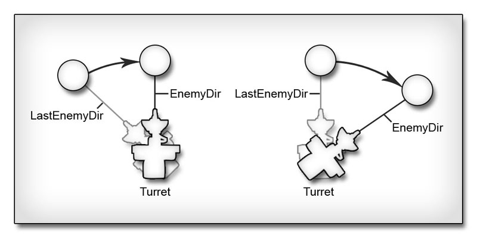
그림 11.22 - 타겟이 움직이는 것에 따라, EnemyDir 및 LastEnemyDir 는 갱신됩니다. *4. * 타겟의 방향을 향하도록(듯이) 현재의 방향으로부터 포대의 회전을 보간 하기 위해서, 몇개의 정보가 필요합니다. 그것들은, 이하에 드는 것입니다.
- 포대의 피보또 뼈의 개시 회전
- 포대의 피보또 뼈의 요구 회전
- 회전을 실행하기 위해서 필요한 전시간 ( 후에 선언될 예정의 회전율에 근거한다)
- 보간이 시작되고 나서의 경과시간량
- 보간의 알파치 (0.0 에서 1.0)
var float TotalInterpTime; // 회전을 보간하기 위한 합계 시간 var Float ElapsedTime; // 현재의 보간으로 소비된 시간 var Float RotationAlpha; // 신규의 회전에 보간 할 때의 현재의 알파 var Rotator StartRotation; // 보간을 위해서(때문에) 개시하는 회전 var Rotator TargetRotation; // 보간을 위해서(때문에) 요구하는 회전*5. * 포대로부터 발사된 발사물을, 올바른 위치 및 방향으로 spawn(스폰) 하기 위해서, 포대의 포신의 첨단의 위치의 소켓의 월드 스페이스에 있어서의 위치 및 회전을 보관 유지하는 2 개의 변수가 사용됩니다.
var Vector FireLocation; // 발사점의 소켓의 월드내의 위치 var Rotator FireRotation; // 발사점의 소켓의 월드내의 회전

그림 11.23 - FireLocation 및 FireRotation 의 예 *6. * 포대의 회전은 피보또 뼈를 기본으로 하고 있습니다만, 이 뼈의 회전을 직접 제어하지 않습니다. 그 대신에, SkelControlSingleBone 는, 포대에 할당할 수 있었던 AnimTree 내의 피보또 뼈에 링크되어 골격 콘트롤러는, 포대의 회전을 제어하기 위해서 조작됩니다. 물론, 이것은, 골격 콘트롤러에의 참조가 필요한 것을 의미합니다.
var SkelControlSingleBone PivotController; // AnimTree 내의 skelcontrol*7. * 2 개의 Bool 변수는, 포대의 현재의 스테이터스를 보관 유지합니다. 1 개째는, bCanFire 라는 이름으로, 포대가 타겟으로 대해 발사물을 발사 가능한 상태에 있을지 어떨지를 결정합니다. 이제(벌써) 1 개(살)은, bDestroyed 라는 이름으로, 포대가 파괴되어, 이미 적에게 조준을 맞출 수 없는지 어떤지를 결정합니다.
var Bool bCanFire; // 포대는, 발사 상태에 있을까 ? var Bool bDestroyed; // 포대는, 파괴되고 있을까 ?*8. * 다음의 튜토리얼로 보도록(듯이), 포대의 라이프치는, UnrealEd 내에서 디자이너에 의해 설정 가능합니다. 다른 변수에, 포대를 가질 수 있는 최대의 라이프치를 참조하기 위해서, 프롭퍼티의 초기치를 보관 유지하고 있습니다.
var Int MaxTurretHealth; // 본포대에 대한 최대 라이프치*9. * FullRevTime 라는 이름의 float 변수는, 다음의 튜토리얼로 설명되는 프롭퍼티에 의해 지정된 최소 회전율 MinTurretRotRate 로 포대가 전회전했을 때에 필요로 하는 초수를 보관 유지합니다.
var Float FullRevTime; // 최소 회전율로 전회전하기 위한 초수*10. * GElapsedTime 라는 이름의 Float 변수는, 클래스 글로벌 Tick() 함수로 실행된 마지막 적의 위치의 갱신으로부터 경과한 시간량을 보관 유지하고 있습니다. 어두의 G 는, 단지, 임의 상태의 Tick() 함수는 아니고, 글로벌 Tick() 함수가 사용되는 것을 나타냅니다.
var Float GElapsedTime; // 마지막 그로바르틱으로부터의 경과시간*11. * OrigMinRotRate 라는 이름의 Int 변수는, 이후의 튜토리얼로 선언되는 1 개의 편집 가능한 변수 MinTurretRotRate 의 성냥이 시작되었을 때의 초기치에 대한 참조를 보관 유지합니다.
var Int OrigMinRotRate; // MinTurretRotRate 의 개시시의 값*12. * 이 그룹의 마지막 몇개의 변수는, 데미지, 포구의 섬광 및 파괴 효과를 표시하는 ParticleSystemComponents 에의 참조입니다.
var ParticleSystemComponent DamageEffect; // 데미지 효과를 위한 PSys 컴퍼넌트 var ParticleSystemComponent MuzzleFlashEffect; // 포구의 섬광을 위한 PSys 컴퍼넌트 var ParticleSystemComponent DestroyEffect; // 파괴 효과를 위한 PSys 컴퍼넌트
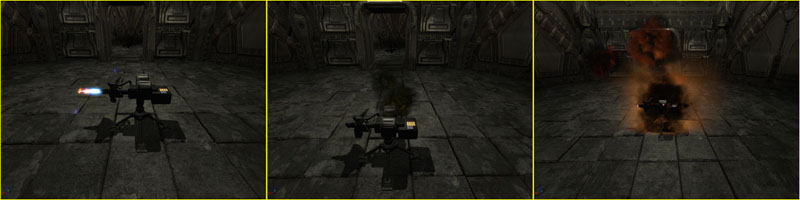
그림 11.24 - 포구의 섬광, 데미지 및 파괴의 효과의 예. *13. * 작업 결과를 보존하기 위해서 스크립트를 보존해 주세요. <<<< 튜토리얼의 종료 >>>>
튜토리얼 11.7 - 포대, 파트 III: 편집 가능한 변수 선언
변수의 2 번째의 그룹은, Unreal Editor 의 내부에서 디자이너에 의해 설정 가능한 프롭퍼티로부터 완성되는 MU_AutoTurret 클래스에 속하고 있습니다. 이 섹션은, 이전에 선언된 구조체를 사용하기 위한 변수를 포함하고 있어, 전혀 코드를 변경할 필요 없고, 포대의 외관이나 동작의 커스터마이즈를 디자이너에 허가해, 포대 클래스를 유연하게 하는 것이 가능합니다. 본튜토리얼로 선언된 모든 변수는, 편집 가능으로서 선언되어 Turret 카테고리중에 배치됩니다. *1. * ConTEXT 및 MU_AutoTurret.uc 스크립트를 오픈해 주세요. *2. * 포대가, 표시 컴퍼넌트로서 골격 메쉬를 이용한다고 하는 결과에 이끌지도 모르는 직전의 튜토리얼내의 소켓 및 골격 콘트롤러에 대한 참조에 기분귀댁도 알려지지 않습니다. Pawn 는 이미 SkeletalMeshComponent 참조를 가지고 있습니다만, turret 클래스는, Turret 카테고리내에서 표시되는 자기 자신의 것을 선언하고 있습니다. 표시의 용도에서의 SkeletalMeshComponent 에 가세해, DynamicLightEnvironmentComponent 는, 메쉬를 좀 더 효과적으로 라이팅 하기 위해서 사용됩니다. 2 번째의 골격 메쉬는, 포대가 파괴되었을 때에 디폴트의 메쉬내에서 교체를 할 수 있도록(듯이)도 지정됩니다.var(Turret) SkeletalMeshComponent TurretMesh; // 포대에 대한 SkelMeshComp var(Turret) DynamicLightEnvironmentComponent LightEnvironment; // 효과적인 라이팅 용도 var(Turret) SkeletalMesh DestroyedMesh; // 파괴된 SkelMesh*3. * 이전 정의된 TurretBoneGroup 구조체의 1 개의 인스턴스는, 포대의 회전을 제어해 효과를 부가하기 위해서 필요한 소켓 및 골격 콘트롤러의 이름을 제공하기 위해서 필요합니다.
var(Turret) TurretBoneGroup TurretBones; // Socket, Controller 의 이름*4. * 포대에 대해서 포즈를 설정하기 위해서 TurretRotationGroup 구조체의 인스턴스에 가세해, RotationRange 의 인스턴스가, 각각의 축의 주위의 회전에 제한을 설정하기 위해서 사용되도록(듯이), 2 개의 Int 변수가, 포대를 실행할 수 있는 최소 및 최대 회전율을 설정하기 위해서 필요합니다.
var(Turret) TurretRotationGroup TurretRotations; // 포대의 포즈를 정의하는 회전 var(Turret) RotationRange RotLimit; // 포대에 대한 회전 제한 var(Turret) Int MinTurretRotRate; //Min Rotation 의 속도 Rot/Second var(Turret) Int MaxTurretRotRate; //Max Rotation 의 속도 Rot/Second*5. * 포대는, 발사물을 발사합니다만, 발사하는 발사물의 클래스를 아는 것이 필요합니다. 또, 발사물을 발사하는 속도는, 매초의 일제 사격 수라고 해 지정됩니다. 실제의 포대의 것보다 리얼한 표현을 주기 위해서(때문에), 포대의 조준에 얼마인가의 바리에이션이 도입되고 있습니다.
var(Turret) class<Projectile> ProjClass; // 포대가 발사하는 발사물의 형태 var(Turret) Int RoundsPerSec; // 초 마다의 일제 사격의 수 var(Turret) Int AimRotError; // 포대의 조준부의 잘못의 최대 단위
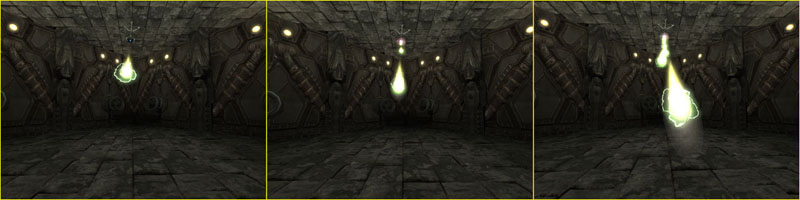
그림 11.25 - RoundsPerSecond 치가 다른 같은 포대. *6. * TurretEmitterGroup 구조체의 인스턴스는, 데미지, 파괴 및 포구의 섬광의 효과에 대해서 사용하는 파티클 시스템에의 참조를 제공합니다.
var(Turret) TurretEmitterGroup TurretEmitters; // 포대에 의해 사용되는 PSystems*7. * 포대에 대한 사운드는, TurretSoundGroup 구조체의 인스턴스내에서 참조됩니다.
var(Turret) TurretSoundGroup TurretSounds; // 포대의 동작으로 사용되는 사운드*8. * Pawns 가 Health 프롭퍼티를 가지는데 대해, 포대는, Turret 그룹내에 포함되는 모든 프롭퍼티를 보관 유지하기 위해서 자기 자신의 TurretHealth 프롭퍼티를 사용합니다.
var(Turret) Int TurretHealth; // 포대의 라이프치의 초기치*9. * 작업 결과를 잃지 않게 스크립트를 보존해 주세요. <<<< 튜토리얼의 종료 >>>>
튜토리얼 11.8 - 포대, 파트 IV: 디폴트 프롭퍼티
MU_AutoTurret 클래스의 설정의 마지막 부분에서는, 포대에 의해 이용되는 컴퍼넌트에 대해서, 서브 오브젝트를 생성할 필요가 있습니다. 디폴트 프롭퍼티 블록내에서도, 구조체 인스턴스의 프롭퍼티 및 이전의 튜토리얼로 선언한 다른 개개의 수많은 프롭퍼티의 디폴트치를 설정하지 않으면 안됩니다. *1. * ConTEXT 및 MU_AutoTurret.uc 스크립트를 오픈해 주세요. *2. * defaultproperties 블록을 작성해 주세요
defaultproperties
{
}
*3. * DynamicLightEnvironmentComponent 는, 설정할 필요가 있는 프롭퍼티가 없기 때문에, 꽤 간단하게 작성됩니다. 모든 디폴트치를 만족합니다. 그것은, LightEnvironment 변수에 대입되어, Components 배열에 추가됩니다.
Begin Object Class=DynamicLightEnvironmentComponent Name=MyLightEnvironment End Object LightEnvironment=MyLightEnvironment Components.Add(MyLightEnvironment)*4. * SkeletalMeshComponent 는, 생성되어 Components 배열에 추가되어 Pawn 클래스로부터 계승된 Mesh 변수와 같이, 이 클래스의 TurretMesh 변수에 대입될 필요가 있습니다. 더해, 컴퍼넌트의 SkeletalMesh, AnimTreeTemplate, PhysicsAsset 및 LightEnvironment 프롭퍼티가 설정됩니다.
Begin Object class=SkeletalMeshComponent name=SkelMeshComp0 SkeletalMesh=SkeletalMesh'TurretContent.TurretMesh' AnimTreeTemplate=AnimTree'TurretContent.TurretAnimTree' PhysicsAsset=PhysicsAsset'TurretContent.TurretMesh_Physics' LightEnvironment=MyLightEnvironment End Object Components.Add(SkelMeshComp0) TurretMesh=SkelMeshComp0 Mesh=SkelMeshComp0SkeletalMesh, AnimTreeTemplate 및 PhysicsAsset 에 대입된 어셋은, TurretContent 패키지내에 있어, 본장에 대한 파일은, DVD 에 의해 제공되고 있습니다. 이것들은 단순한 디폴트치이므로, 포대를 커스터마이즈 하기 위한(해), Unreal Editor 의 내부에서 포대 먼지를 배치할 때에 자기 자신의 어셋으로 옮겨놓을 수가 있습니다.

그림 11.26 - TurretContent 패키지로부터의 TurretMesh 골격 메쉬. *5. * MuzzleFlashEffect, DestroyEffect 및 DamageEffect 에 대한 ParticleSystemComponent 서브 오브젝트는, 모두 매우 잘 비슷해, 모든 것을 동시에 실행할 수가 있습니다. DamageEffect 의 컴퍼넌트에 있어서의 다만 하나의 예외는, SecondsBeforeInactive 프롭퍼티는, 언제라도 ParticleSystem 가 플레이를 속행하고 있는 것을 확실히 하기 위해서, 다른 2 개의 컴퍼넌트와 같은 1.0 이라고 하는 값은 아니고, 10000.0 이라고 할까 되어 비싼 값으로 설정된다고 하는 점입니다.
Begin Object Class=ParticleSystemComponent Name=ParticleSystemComponent0 SecondsBeforeInactive=1 End Object MuzzleFlashEffect=ParticleSystemComponent0 Components.Add(ParticleSystemComponent0) Begin Object Class=ParticleSystemComponent Name=ParticleSystemComponent1 SecondsBeforeInactive=1 End Object DestroyedEffect=ParticleSystemComponent1 Components.Add(ParticleSystemComponent1) Begin Object Class=ParticleSystemComponent Name=ParticleSystemComponent2 SecondsBeforeInactive=10000. 0 End Object DamageEffect=ParticleSystemComponent2 Components.Add(ParticleSystemComponent2)*6. * TurretBones 구조 체내에 놓여진 프롭퍼티의 값은, 디폴트의 SkeletalMesh 및 AnimTree 를 기본으로 해 설정됩니다. 이것들은, 다른 메쉬 또는 AnimTree 를 사용하고 있을 때에, 에디터내에서 오버라이드(override)가 가능합니다.
TurretBones={(
DestroySocket=DamageLocation,
DamageSocket=DamageLocation,
FireSocket=FireLocation,
PivotControllerName=PivotController
)}
*7. * 또, TurretSounds 구조체에 대해, UT3 어셋으로부터의 디폴트 사운드가 구조 체내의 개개의 프롭퍼티에 대입됩니다.
TurretSounds={(
FireSound=SoundCue'A_Weapon_Link.Cue.A_Weapon_Link_FireCue',
DamageSound=SoundCue'A_Weapon_Stinger.Weapons.A_Weapon_Stinger_FireImpactCue',
SpinUpSound=SoundCue'A_Vehicle_Turret.Cue.AxonTurret_PowerUpCue',
WakeSound=SoundCue'A_Vehicle_Turret.Cue.A_Turret_TrackStart01Cue',
SleepSound=SoundCue'A_Vehicle_Turret.Cue.A_Turret_TrackStop01Cue',
DeathSound=SoundCue'A_Vehicle_Turret.Cue.AxonTurret_PowerDownCue'
)}
*8. * 데미지 이미터내의 spawn(스폰) 레이트를 제어하는 파라미터의 이름을 붙인 1 개의 커스텀 및 2 개의 소지의 ParticleSystem 는, TurretEmitter 구조체의 프롭퍼티에 대입됩니다.
TurretEmitters={(
DamageEmitter=ParticleSystem'TurretContent.P_TurretDamage',
MuzzleFlashEmitter=ParticleSystem'WP_Stinger.Particles.P_Stinger_3P_MF_Alt_Fire',
DestroyEmitter=ParticleSystem'FX_VehicleExplosions.Effects.P_FX_VehicleDeathExplosion',
DamageEmitterParamName=DamageParticles
)}

그림 11.27 - 데미지, 포구의 섬광 및 파괴 효과의 파티클 시스템. *9. * TurretRotations 구조체안에 포함되는 개개의 회전에는, 디폴트 메쉬의 포즈를 행하기 위한 디폴트치를 설정할 수 있습니다.
TurretRotations={(
IdleRotation=(Pitch=-8192, Yaw=0, Roll=0),
AlertRotation=(Pitch=0, Yaw=0, Roll=0),
DeathRotation=(Pitch=8192, Yaw=4551, Roll=10922)
)}
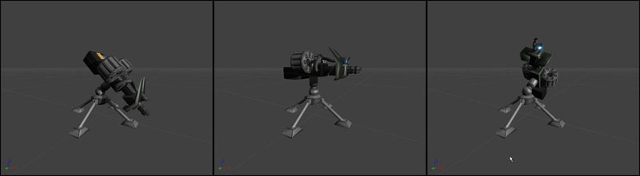
그림 11.28 - TurretMesh assuming the Idle, Alert 및 Death 포즈를 가정한 TurretMesh . *10. * 마지막으로, 회전율, 발포율, 라이프, 발사물 클래스, 조준 에러와 같은, 많은 다른 프롭퍼티 모두에게 디폴트치를 줍니다. 더욱, 똑같이 1 개의 계승된 프롭퍼티 bEdShouldSnap 를 설정합니다. UnrealEd 의 내부에서 그 인스턴스를 배치할 때에 포대를 구라두에 스냅 하기 위해서, 본변수에는, True 치가 설정됩니다.
TurretRotRate=128000 TurretHealth=500 AimRotError=128 ProjClass=class'UTGame.UTProj_LinkPowerPlasma' RoundsPerSec=3 bEdShouldSnap=true*11. * 작업 결과를 잃지 않기 위해(때문에) 스크립트를 보존해 주세요. <<<< 튜토리얼의 종료 >>>>
튜토리얼 11.9 - 포대, 파트 V: POSTBEGINPLAY() 이벤트
MU_AutoTurret 클래스로 돌아가면(자), PostBeginPlay() 이벤트는 오버라이드(override) 되어 콘트롤러를 생성해, 포대를 초기화하기 위해서 사용됩니다. *1. * ConTEXT 및 MU_AutoTurret.uc 스크립트를 오픈해 주세요. *2. * 포대 클래스에서 오버라이드(override) 가능한 것 같게, PostBeginPlay() 이벤트를 선언해 주세요.
event PostBeginPlay()
{
}
*3. * 친클래스내에 존재하는 어떠한 기본적인 초기화의 실행을 확실히 실시하기 위해서(때문에) AIController 클래스의 PostBeginPlay()를 호출해 주세요.
Super.PostBeginPlay();*4. * MaxTurretHealth 프롭퍼티는, TurretHealth 프롭퍼티의 최초의 값으로 설정됩니다. 이것은, 언제라도 포대에 데미지를 주는 퍼센트를 결정하기 위해서(때문에) 잠시 후에 이용됩니다. 또, OrigMinRotRate 의 값은 MinTurretRotRate 의 값으로 초기화되어 FullRevTime 는, 회전 유니트가 1 회 완전 회전하는 값을 MinTurretRotRate 로 제산해 계산됩니다.
MaxTurretHealth = TurretHealth; OrigMinRotRate = MinTurretRotRate; FullRevTime = 65536.0 / Float(MinTurretRotRate);*5. * PivotController 변수를 초기화하기 위해서, SkeletalMeshComponent 에 대입하는 AnimTree 내에 배치된, SkelControlSingleBone 골격 콘트롤러에의 참조를 찾아낼 필요가 있습니다. TurretBones.PivotControllerName 의 값을, 컴퍼넌트의 FindSkelControl() 함수에 건네주어, SkelControlSingleBone 에 대해서 결과를 캐스트 하는 것으로, 이것을 실현시킵니다.
PivotController=SkelControlSingleBone(Mesh.FindSkelControl(TurretBones.PivotControllerName));주기 : 이 클래스내에서 TurretMesh 변수를 선언하고 있습니다만, 코드에서는, SkeletalMeshComponent 를 참조하기 위해서 Mesh 변수를 사용하고 있습니다. 만약, 디폴트 프롭퍼티로, 이러한 변수의 양쪽 모두가 SkeletalMeshComponent 에 대입되고 있던 것을 생각이 미치면, 어느쪽이나 같은 컴퍼넌트를 참조하게 됩니다. Mesh 변수가 이 코드로 사용되고 있는 것은, 문자수가 적게 입력시의 수고가 적기 때문입니다. *6. * 다음에, SkeletalMeshComponent 의 GetSocketWorldLocationAndRotation() 함수에, TurretBones.FireSocket 와 함께, FireLocation 및 FireRotation 변수를 건네주어, 이러한 변수를 초기화합니다.
Mesh.GetSocketWorldLocationAndRotation(TurretBones.FireSocket, FireLocation, FireRotation);이 함수의 2 번째 및 3 번째의 파라미터는, 아시는 바대로, 함수가, 인도해진 이러한 변수의 값을 설정하는 것을 나타내는 Out 지정자를 사용해 선언되고 있습니다. *7. * TurretEmitters 구조 체내에서 지정된 ParticleSystems 는, 데미지, 파괴, 포구의 섬광의 효과에 대해, 3 개의 ParticleSystemComponents 에 대한 템플릿으로서 대입됩니다.
DamageEffect.SetTemplate(TurretEmitters.DamageEmitter); MuzzleFlashEffect.SetTemplate(TurretEmitters.MuzzleFlashEmitter); DestroyEffect.SetTemplate(TurretEmitters.DestroyEmitter);*8. * 3 개의 ParticleSystemComponents 는, SkeletalMeshComponent 의 AttachComponentToSocket() 함수를 사용해 SkeletalMeshComponent 의 적절한 소켓에 아탓치 됩니다.
Mesh.AttachComponentToSocket(DamageEffect, TurretBones.DamageSocket); Mesh.AttachComponentToSocket(MuzzleFlashEffect, TurretBones.FireSocket); Mesh.AttachComponentToSocket(DestroyEffect, TurretBones.DestroySocket);
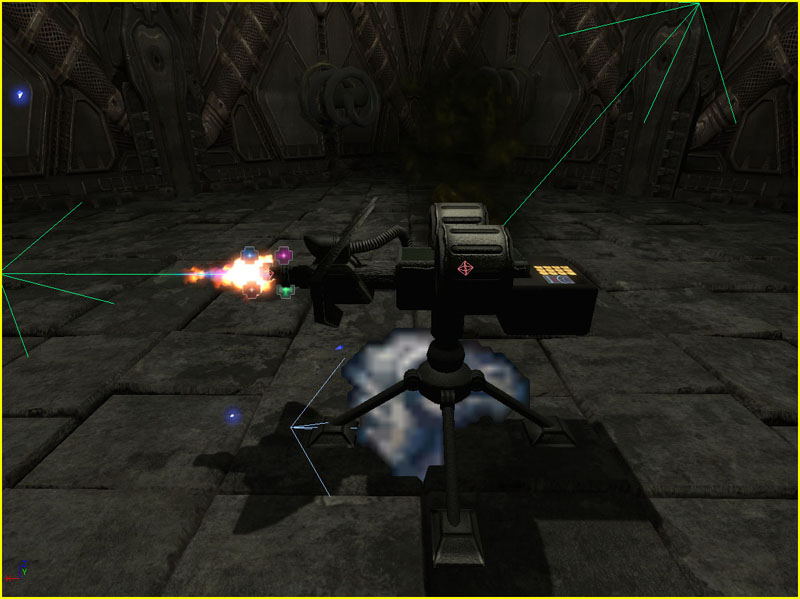
그림 11.29 - 골격 메쉬내의 소켓의 위치에 아탓치 된 파티클 시스템. *9. * 마지막으로, 포대의 Physics 를, PHYS_None 로 설정합니다. 그 때문에, 포대에 대해서, 물리는 적용되지 않습니다.
SetPhysics(PHYS_None);*10. * 작업 결과를 잃지 않게, 스크립트를 보존해 주세요. <<<< 튜토리얼의 종료 >>>>
튜토리얼 11.10 - 포대, 파트 VI: ROTATION 함수
Idle, Alert 및 Death 의 회전으로 설정되는 포즈를 취하기 위해서(때문에), 포대 스크립트의 각처에서, 포대는 주어진 회전량에 회전 가능한 필요가 있습니다. 이 회전의 모습을 매끄럽고 리얼하게 하기 위해서, 스납핑 효과를 일으키는 직접적인 회전의 설정을 실시하는 대신에 보간이 사용됩니다. 이 프로세스에는 2 개의 함수가 포함됩니다. 1 개의 함수는, 모든 필요한 프롭퍼티를 설정해, 루프를 행하기 위한 타이머를 설정합니다. 이제(벌써) 1 개의 함수는, 보간 된 회전을 계산해, 골격 콘트롤러를 맞추어 조정합니다. *1. * ConTEXT 및 MU_AutoTurret.uc 스크립트를 오픈해 주세요. *2. * 추가되는 최초의 함수는, DoRotation() 라고 명명되어 NewRotation 라고 명명된 1 개의 Rotator 파라미터를 가집니다.
function DoRotation(Rotator NewRotation, Float InterpTime)
{
}
*3. * 2 개째의 함수는, RotateTimer() 라고 명명된 타이머 함수로, 파라미터는 없습니다.
function RotateTimer()
{
}
*4. * 최초로 DoRotation() 함수가 포대 클래스의 StartRotation, TargetRotation 및 RotationAlpha 프롭퍼티를 초기화합니다.
StartRotation = PivotController.BoneRotation; TargetRotation = NewRotation; RotationAlpha = 0.0; TotalInterpTime = InterpTime;기분 다음 같게, StartRotation 는, AnimTree 내의 골격 콘트롤러의 BoneRotation 프롭퍼티에 의해 지정된 포대의 현재의 회전으로 설정됩니다. TargetRotation 는, 함수에게 건네지는 NewRotation 로 설정됩니다. 그리고, RotationAlpha 는, 새로운 보간을 개시하기 위해서 0.0 에 리셋트 되어, TotalInterpTime 는, 함수내에게 건네지는 경과시간으로 설정됩니다. *5. * 수치가 초기화되면(자), 0.033 초 마다, 즉 1초에 30 회 RotateTimer() 함수를 호출하기 (위해)때문에, 루프 처리의 타이머가 설정됩니다.
SetTimer(0.033, true, 'RotateTimer');*6. * RotateTimer() 함수의 내부에서는, RotationAlpha 가, 타이머의 변화율과 동일한 값, 즉 0.033 마다 늘려집니다.
RotationAlpha += 0.033;*7. * RotationAlpha 가 TotalInterpTime 이하의 경우는, 보간이 계산되어 BoneRotation 프롭퍼티에는, 새로운 회전이 설정됩니다.
if(RotationAlpha <= TotalInterpTime) PivotController.BoneRotation = RLerp(StartRotation, TargetRotation, RotationAlpha, true);함수에게 건네진 개시시의 회전, 종료시의 회전 및 현재의 알파치에 근거해, Object 클래스내에서 정의된 RLerp() 함수는, 보간 계산을 실시합니다. Bool 형의 마지막 파라미터는, 개시시의 회전으로부터 종료시의 회전을 보간 하기 위해서 최단 거리를 이용할지 어떨지를 지정합니다.
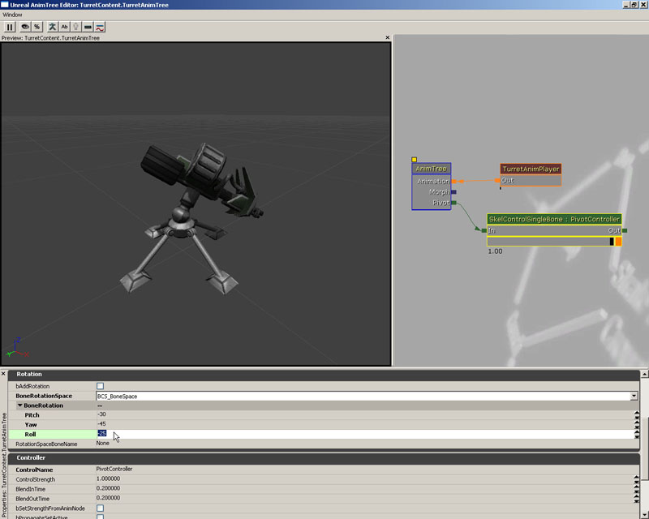
그림 11.30 - 포대를 돌리는 골격 콘트롤러의 BoneRotation 의 갱신. *8. * 그 이외, 즉, RotationAlpha 치가 1.0 보다 큰 경우는, 보간의 종료를 나타내, 타이머는 클리어 됩니다.
else
ClearTimer('RotateTimer');
*9. * 작업 결과를 잃지 않게, 스크립트를 보존해 주세요.
<<<< 튜토리얼의 종료 >>>>
튜토리얼 11.11 - 포대, 파트 VII: 상태 선언
포대 클래스는, 포대를 실행할 수 있는 4 개(살)이 다른 동작을 정의하는 4 개 상태로부터 완성됩니다. 이 시점에서는, 상태는 골격 상태, 또는, 플레이스홀더-로서 선언되어 단지 어떤 것이 있을지를 알 수 있을 뿐입니다. 이러한 상태의 본체는 향후의 튜토리얼로 기술됩니다. *1. * ConTEXT 및 MU_AutoTurret.uc 스크립트를 오픈해 주세요. *2. * 선언된 최초 상태는 Idle 상태입니다. 이것은, 포대의 디폴트 초기 상태입니다. 이 기능은, 완전히 읽어 글자대로입니다 : 이것은, 포대를 아이돌 또는 스탠바이로 해, 적절한 동작을 취하기 (위해)때문에, 포대를 강제적으로 다른 어떠한 상태로 하는, 외부로부터의 어떠한 이벤트를 기다립니다.
auto state Idle
{
}
게임 개시시에, 강제적으로 포대를 이 상태로 하기 위해서(때문에), 상태의 선언중에 Auto 지정자를 사용하고 있는 것에 유의해 주세요.
*3. * 포대 클래스내에서 선언되는 다음 상태는, Alert 상태입니다. 이 상태에서는, 표적으로서 공격하기 위해(때문에), 포대는, 시인 가능한 적을 활발하게 색적해, 아이돌 상태보다는, 경계 레벨이 오른 것을 나타냅니다.
state Alert
{
}
*4. * 클래스내에서 선언되는 다음 상태는 Defend 상태입니다. 적이 발견되면(자), Defend 상태에 들어갑니다. 이 상태에서는, 적에게로의 조준 맞댐과 발포의 실행을 취급합니다.
state Defend
{
}
*5. * 포대 클래스에서 선언된 마지막 상태는, Dead 상태입니다. 이것은, 라이프가 0 에 이른 후에게만이 되는 포대에 대해서도 마지막 상태입니다. 이 상태는, 모든 파괴 효과를 취급해, 적에 대한 색적, 조준 또는 발포와 같은 다른 모든 기능을 정지합니다.
state Dead
{
}
*6. * 작업 결과를 잃지 않게, 스크립트를 보존해 주세요.
<<<< 튜토리얼의 종료 >>>>
튜토리얼 11.12 - 포대, 파트 VIII: GLOBAL TAKEDAMAGE() 함수
여기서 작성한 포대는, 게임내의 플레이어로부터 데미지를 받아 더욱은, 파괴될 필요가 있습니다. 이 데미지를 받는 기능을 조작하기 위해서, 친클래스로부터 계승된 TakeDamage() 함수는 오버라이드(override) 됩니다. 이 튜토리얼은, 이 TakeDamage() 함수의 설정을 설명합니다. *1. * ConTEXT 및 MU_AutoTurret.uc 스크립트를 오픈해 주세요. *2. * TakeDamage() 이벤트는, 포대 클래스내에서, 그 데미지 효과와 사운드의 재생을 조작하는 것과 동시에, 계승된 Health 변수의 부분에 TurretHealth 변수를 사용하기 위해서, 계승되고 오버라이드(override) 됩니다. 오버라이드(override)를 허가하기 위해(때문에), 이 이벤트를 선언해 주세요.
event TakeDamage(int Damage,
Controller InstigatedBy,
vector HitLocation,
vector Momentum,
class<DamageType> DamageType,
optional TraceHitInfo HitInfo,
optional Actor DamageCauser )
{
}
*3. * 초에, TurretHealth 프롭퍼티는, Damage 파라미터로서 건네받는 값을 감산하는 것으로써 조정됩니다.
TurretHealth -= Damage;*4. * 다음에, DamageEmitter 가 존재할지 어떨지를 결정하기 위한 확인이 실행되고 나서, ParticleSystemComponent 의 SetFloatParam() 함수를 사용해, DamageEffect 의 spawn(스폰) 율의 파라미터의 값에 대응한 값을 설정합니다.
if(TurretEmitters.DamageEmitter ! = None)
{
DamageEffect.SetFloatParameter(TurretEmitters.DamageEmitterParamName, FClamp(1-Float(TurretHealth) /Float(MaxTurretHealth)), 0.0, 1.0));
}
상술의 코드의 대부분은, 꽤 자명하다는 두입니다. 파라미터의 이름은, 최초의 파라미터로서 SetFloatParameter() 함수에 건네받아 2 번째의 파라미터로서 건네받는 파라미터에 값이 대입됩니다. 파티클 시스템내의 파라미터는, 포대에게 줄 수 있었던 데미지의 상대량을 나타내는 0.0 에서 1.0 의 사이의 값을 전망하고 있습니다. 이 값은, 매초 spawn(스폰)하기 위한 파티클의 양을 결정하는 새로운 범위에 맵 됩니다.
FClamp(1-Float(TurretHealth) /Float(MaxTurretHealth)), 0.0, 1.0)이 값은, 포대의 나머지 라이프의 퍼센트를 얻기 위해, 현재의 라이프치를 초기 최대 라이프치로 제산해 계산됩니다. 결과는, 역의 퍼센트, 즉 데미지율을 얻기 위해서(때문에) 1.0 으로부터 감산됩니다. 이 값은, 척도를 자주(잘) 하기 위해서 0.0 및 1.0 의 사이에 클램프 됩니다.

그림 11.31 - 포대가 데미지를 받는 것에 따라, 데미지 이미터는 많은 파티클을 spawns(스폰) 합니다. *5. * 포대가 데미지를 받았을 때에 재생되어야 할 임의의 사운드는, 데미지 효과가 조정된 후에 PlaySound() 함수를 사용해 재생됩니다.
if(TurretSounds.DamageSound ! = None) PlaySound(TurretSounds.DamageSound);*6. * 방어 기구로서 발포 대상으로 포대에 데미지를 주는 임의의 Pawn 는, 포대의 적으로서 조준의 대상으로 합니다. InstigatedBy 파라미터는 콘트롤러로, 그 Pawn 가 만약 있으면, 포대의 새로운 EnemyTarget 가 됩니다.
if(InstigatedBy.Pawn ! = None) EnemyTarget = InstigatedBy.Pawn;

그림 11.32 - 포대에 데미지를 주는 Pawn 는, 신규의 EnemyTarget 가 됩니다. *7. * 마지막으로, 라이프가 없어져 버렸을 경우는, 포대는 Dead 상태가 됩니다.
if(TurretHealth <= 0)
{
GotoState('Dead');
}
*8. * 작업 결과를 잃지 않게, 스크립트를 보존해 주세요. 이 함수에 대해서는, 후의 튜토리얼내에서 간단하게 되돌아 봅니다.
튜토리얼 11.13 - 포대, 파트 IX: GLOBAL TICK() 함수
포대 클래스의 글로벌 Tick() 함수는, 조준을 맞추어 공격하기 위해서, 포대에 대한 시인 가능한 적의 색적에 책임을 가집니다. 이 함수는, 임의 상태의 외부에 존재해, 포대가 Alert 또는 Defend 상태에 있을 때에 이용됩니다. *1. * ConTEXT 및 MU_AutoTurret.uc 스크립트를 오픈해 주세요. *2. * 전장에서 선언된 상태에 이어, 그러한 상태의 본체 중(안)에서 없는 것을 확인해, Tick() 함수를 선언해 주세요.
function Tick(Float Delta)
{
}
*3. * Tick() 함수의 주된 책임은, 포대의 현재의 표적으로 가장 접근하고 있는 플레이어를 찾아내, 포대에 대한 새로운 적을 선택하는 것입니다. 이것은, 포대가 조준 붙이고 하고 있을 방향 및 문제가 되어 있는 플레이어의 방향의 닷적의 계산을 행해, 각각 그 후의 플레이어의 결과와 비교하는 것이 필요합니다. 2 개의 로컬 Float 변수가, 현재의 닷적 및 현재의 가장 근접한 닷적을 격납하기 위해서 사용됩니다.
local Float currDot; local Float thisDot;iterator(이테레이타)는 비교 대상의 모든 플레이어의 루프 처리를 실시하기 위해서(때문에) 사용됩니다. 이테레이타내의 개개의 플레이어에 대한 참조를 보관 유지하기 위해서 UTPawn 로컬 변수가 필요합니다.
local UTPawn P;마지막으로, 새로운 적이 발견되었는지 어떠했는지를 지정해, 어느 상태에 포대를 두는지를 선택하기 위한 코드를 이용 가능하게 해, 타겟으로서 설정하기 위해서, 로컬 Bool 변수가 이용됩니다.
local Bool bHasTarget;각각의 닷적계산의 결과는, -1 이라고 1 의 사이의 값이 됩니다. -1 (은)는, 포대가 노리고 있을 방향으로 완전히 반대측의 방향을 나타내, 1 은, 포대의 조준이 직접 행해지고 있는 것을 나타냅니다. currDot 는, -1. 01 의 값에 초기화되기 때문에, 임의의 플레이어에 대한 닷적의 결과는, 초기치보다는 비싼 값이 될 것입니다.
currDot = -1. 01;*4. * If/Else-문장은, 0.5 초 마다 1 번만, 포대가 파괴되어 있지 않을 때인 만큼, 조준 맞댐을 실시하게 하기 위해서(때문에) 사용됩니다.
if(GElapsedTime > 0.5 && ! bDestroyed)
{
}
else
{
}
If 블록 중(안)에서는, GElapsedTime 및 bHasTarget 의 값은 리셋트 됩니다.
GElapsedTime = 0.0; bHasTarget = false;Else 블록 중(안)에서는, GElapsedTime 의 값은, 마지막 Tick() 함수 콜로부터 경과한 시간이 늘려집니다.
GElapsedTime += Delta;If/Else-문장은 이하와 같이 됩니다 :
if(GElapsedTime > 0.5 && ! bDestroyed)
{
GElapsedTime = 0.0;
bHasTarget = false;
}
else
{
GElapsedTime += Delta;
}
*5. * If 블록에 돌아와, AllPawns 이테레이타 함수는, 현재의 비교내에서 모든 UTPawns 를 루프 하기 위해서 사용됩니다.
foreach WorldInfo.AllPawns(class'UTGame.UTPawn', P)
{
}
*6. * 이테레이타내의 If-문장의 조건으로서 모든 Actors 에 이용 가능한 FastTrace() 함수를 사용해, 포대가 현재의 폰에 대해서 조준선을 가질지 어떨지를 결정하기 위해서(때문에) 간단한 트레이스를 실행합니다. 이 함수는, 개시 위치로부터 마지막 위치에 트레이스 했을 때에, 워르드지오메트리궕 없었던 경우는 True 를 리턴 합니다.
if(FastTrace(P.Location, FireLocation))
{
}

그림 11.33 - 표시된 Pawns 만이 FastTrace() 체크를 패스합니다. *7. * 트레이스가 성공했을 경우, 포대가 조준 한 방향의 사이의 닷적 및 포대의 발화점으로부터 현재의 폰에의 거리가 계산됩니다.
thisDot = Normal(Vector(PivotController.BoneRotation)) Dot Normal(((P.Location - FireLocation) << Rotation));
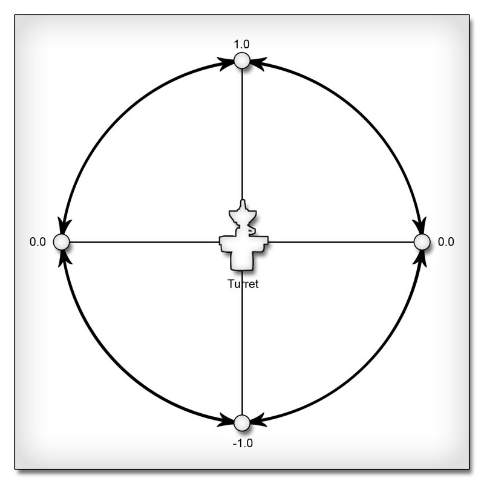
그림 11.34 - 닷적은, 포대가 예측되는 타겟과의 정 대 상황을 나타내는 양을 계산합니다. *8. * pawn 가 활동 가능, 즉 Health 치가 0 이상이라고 가정하면(자), 계산한지 얼마 안된 닷적은, currDot 치 이상이 되어, 현재의 폰은 포대의 EnemyTarget 로서 설정되어 currDot 는 이 닷적으로 설정되어 적어도 1 개의 타겟이 자리매김해진 것으로서 bHasTarget 는, True 로 설정됩니다.
if(P.Health > 0 && thisDot >= currDot)
{
EnemyTarget = P;
currDot = thisDot;
bHasTarget = true;
}
*9. * 이테레이타의 다음에, 포대는, 조준부 루틴의 결과를 기본으로 한 적절한 상태로 향해집니다. 만약, 표적이 발견되어, 포대가 현재 Defend 상태가 아닌 경우는, Defend 상태가 됩니다. 그렇지 않고, 만약, 표적이 발견되지 않고 , 포대가 현재 Defend 상태인 경우는, 대신에 Alert 상태에 보내집니다. 그 외 모든 조건은, 이미 포대가 적절한 상태에 있다고 하여, 무시됩니다.
if(bHasTarget && ! IsInState('Defend'))
{
GotoState('Defend');
}
else if(! bHasTarget && IsInState('Defend'))
{
GotoState('Alert');
}
*10. * 작업 결과를 잃지 않게, 스크립트를 보존해 주세요. 최종적인 Tick() 함수는 이하와 같이 될 것입니다 :
function Tick(Float Delta)
{
local Float currDot;
local Float thisDot;
local UTPawn P;
local Bool bHasTarget;
currDot = -1. 01;
if(GElapsedTime > 0.5 && ! bDestroyed)
{
GElapsedTime = 0.0;
bHasTarget = false;
foreach WorldInfo.AllPawns(class'UTGame.UTPawn', P)
{
if(FastTrace(P.Location, FireLocation))
{
thisDot = Normal(Vector(PivotController.BoneRotation)) Dot
Normal(((P.Location - FireLocation) << Rotation));
if(P.Health > 0 && thisDot >= currDot)
{
EnemyTarget = P;
currDot = thisDot;
bHasTarget = true;
}
}
}
if(bHasTarget && ! IsInState('Defend'))
{
GotoState('Defend');
}
else if(! bHasTarget && IsInState('Defend'))
{
GotoState('Alert');
}
}
else
{
GElapsedTime += Delta;
}
}
<<<< 튜토리얼의 종료 >>>>
튜토리얼 11.14 - 포대, 파트 X: IDLE 상태의 본체
이전의 튜토리얼로 말한 것처럼, Idle 상태는 포대에 대한 디폴트 상태입니다. 실제로 고려하는 것은, 포대를 휴지 위치까지 회전해, 주변 시야의 이동중의 적의 위치를 결정해, 데미지를 받을 가능성이 있으면, 포대를 Alert 상태로 하는 것입니다. *1. * ConTEXT 및 MU_AutoTurret.uc 스크립트를 오픈해 주세요. *2. * Idle 상태에서는, TakeDamage() 이벤트가 오버라이드(override) 됩니다만, 글로벌 버젼의 기능은 모두 포함한 것으로 하도록(듯이) 희망합니다. 기본적으로, 포대가 Idle 상태에 있을 때에만 적용되는 소량의 코드를 기존의 TakeDamage() 이벤트에 추가하고 싶은 것뿐입니다. 분명하게, 이벤트 전체를 상태에 카피해 필요하지만 추가도 할 수 있습니다만, UnrealScript 는, 상태내로부터 함수나 이벤트의 글로벌 버젼을 호출하는 기능을 제공해, 쓸데없게 코드를 복사하지 않게 하고 있습니다. Idle 상태내에서 TakeDamage() 이벤트를 선언해 주세요.
event TakeDamage( int Damage,
Controller InstigatedBy,
vector HitLocation,
vector Momentum,
class<DamageType> DamageType,
optional TraceHitInfo HitInfo,
optional Actor DamageCauser )
{
}
*3. * Global 키워드를 사용해, 모든 파라미터를 그대로 건네주는 것으로, TakeDamage() 이벤트의 글로벌 버젼을 직접 호출합니다.
Global.TakeDamage(Damage, InstigatedBy, HitLocation, Momentum, DamageType, HitInfo, DamageCauser);*4. * 여기서, 현재의 데미지를 적용한 결과, 포대가 파괴되어 있지 않은 한은, 포대를 Alert 상태에 두기 위해서(때문에) If 문을 추가해 주세요. 이 코드가 실제로 실시하는 것은, 적에게 조준을 맞추지 않을 때, 즉, 플레이어가 뒤로부터 소리없이 다가와 공격하거나 했을 경우, 에 총격당하거나 데미지를 받거나 했을 때에, 포대를 Alert 상태에 두는 것으로, 포대는 활동 상태가 되어, 현재의 주변 시야만은 아니고, 활발하게 시인 가능한 적의 색적을 개시합니다.
if(TurretHealth > 0)
{
GotoState('Alert');
}
*5. * Tick() 이벤트도 이와 같이 Idle 상태내에서 오버라이드(override) 됩니다만, 실제는, 거기에 추가하는 대신에 기존의 버젼을 변경하지 않으면 안됩니다. 글로벌 버젼에서는, 모든 표시 가능한 적을 찾는데 대해, Idle 상태의 버젼에서는, 0.0 이상의 닷적을 가지는 것으로서 정의된, 주변 시야내에서 움직이고 있는 적만을 찾습니다. 이것은, 기존의 Tick() 이벤트의 코드에 대한 매우 몇 안 되는 수정이 필요하므로, 글로벌 Tick() 이벤트를 Idle 상태의 본체에 카피해 주세요.
function Tick(Float Delta)
{
local Float currDot, thisDot;
local UTPawn P;
local Bool bHasTarget;
currDot = -1. 01;
if(GElapsedTime > 0.5 && ! bDestroyed)
{
GElapsedTime = 0.0;
bHasTarget = false;
foreach WorldInfo.AllPawns(class'UTGame.UTPawn', P)
{
if(FastTrace(P.Location, FireLocation))
{
thisDot = Normal(Vector(PivotController.BoneRotation)) Dot
Normal(((P.Location - FireLocation) << Rotation));
if(P.Health > 0 && thisDot >= currDot)
{
EnemyTarget = P;
currDot = thisDot;
bHasTarget = true;
}
}
}
if(bHasTarget && ! IsInState('Defend'))
{
GotoState('Defend');
}
else if(! bHasTarget && IsInState('Defend'))
{
GotoState('Alert');
}
}
else
{
GElapsedTime += Delta;
}
}
*6. * 폰의 속도에 매초 16.0 유니트 이상을 필요로 해, 닷적에도 0.0 이상을 필요로 하기 위해서(때문에), 가장 내부의 If-문장의 조건을 수정해 주세요.
if(P.Health > 0 && VSize(P.Velocity) > 16.0 && thisDot >= 0.0 && thisDot >= currDot)
{
EnemyTarget = P;
currDot = thisDot;
bHasTarget = true;
}
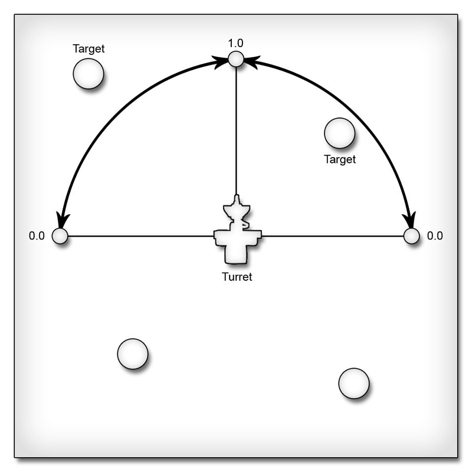
그림 11.35 - 포대의 정면의 Pawns 만이, 표적의 가능성이 있는 것으로 간주해집니다. *7. * Idle 상태내에서 BeginIdling()라는 이름의 신규 함수가 선언되었습니다. 이 함수는, 타이머로서 불려 가지 않으면 안 되기 때문에, 파라미터를 가지지 않습니다. 그 작업은, 아이돌 포즈에의 보간을 개시해, SleepSound SoundCue 를 재생하는 것입니다.
function BeginIdling()
{
}
*8. * 아이돌 포즈에의 보간은, 포대 클래스에 속하는 DoRotation() 함수를 호출해, TurretRotations 구조체의 IdleRotation 프롭퍼티를 건네주는 것으로 실행되어 그 지속 시간은 1.0 초입니다.
DoRotation(TurretRotations.IdleRotation, 1.0);
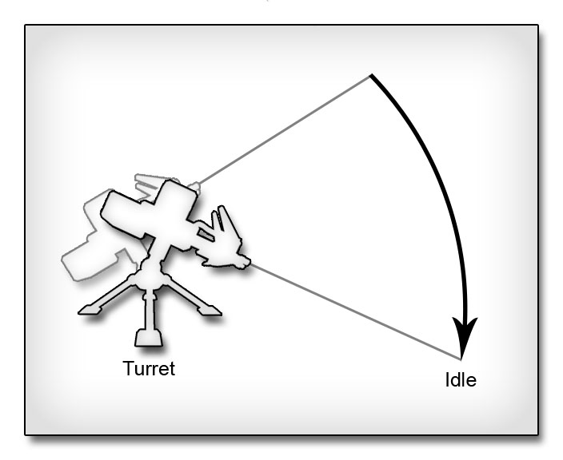
그림 11.36 - 포대는, 회전해 Idle 포지션이 됩니다. *9. * TurretSounds 구조체의 SleepSound 프롭퍼티가 SoundCue 를 참조하고 있는 경우는, PlaySound() 함수를 사용해 재생됩니다.
if(TurretSounds.SleepSound ! = None) PlaySound(TurretSounds.SleepSound);*10. * 벌써 배운 것처럼, BeginState() 이벤트는, 상태가 액티브하게 되었을 때에 실행됩니다. Idle 상태에서는, 필요에 따라서, 이 이벤트는 경계 포즈에의 보간을 개시해, 포대를 아이돌 포즈에 두기 위해서(때문에) BeginIdling() 함수를 호출해, 그것이 지정되었다고 가정해 SleepSound SoundCue 를 재생합니다. BeginState() 이벤트를 그 1 개의 파라미터 PreviousStateName 와 함께 선언해 주세요.
event BeginState(Name PreviousStateName)
{
}
*11. * 시작해에, 만약, 직전 상태가 Alert 상태 이외의 어떤 것인가였다라면, 포대는, idle(아이돌) 포즈에의 보간을 개시하기 전에 alert(경계) 포즈에의 보간을 실시해야 합니다. 이것은, 포대가, 단지 아이돌-경계-발포-경계-아이돌의 같은 연속 동작에 항상 따르는 것이 이치에 필적해 있는 것처럼 보이기 (위해)때문에, 선택된 동작입니다. 이 보간에는 1.0 초 걸리기 때문에, BeginIdling() 함수는 1.0 초의 경과시간을 가지는 루프 없음 타이머로서 불려 갑니다.
if(PreviousStateName ! = 'Alert')
{
DoRotation(TurretRotations.AlertRotation, 1.0);
SetTimer(1.0, false, 'BeginIdling');
}

그림 11.37 - 포대는, 시작해에 Idle 위치로 나아가기 전에 Alert 위치에 회전한다. *12. * 만약, 직전 상태가 다른 임의 상태이면, BeginIdling() 함수는, 즉석에서 불려 갈 뿐입니다.
else BeginIdling();*13. * 작업 결과를 잃지 않게, 스크립트를 보존해 주세요. <<<< 튜토리얼의 종료 >>>>
튜토리얼 11.15 - 포대, 파트 XI: ALERT 상태의 본체 파트 I
Idle 상태를 포대에 대한 DEFCON 5 정도로 한다면, Alert 상태는 DEFCON 3 정도가 됩니다. 포대는, 결코 공격 모드에 들어가고는 있지 않습니다만, 그렇게 될 가능성이 높기 때문에 준비는 되어 있습니다. Alert 상태에서는, 포대는 에리어를 주사 해, 임의의 시인 가능한 적을 활발하게 색적하는 : 동작중인가 아닌가를 불문하고, 그처럼 됩니다. 이 튜토리얼에서는, Tick() 및 IdleTimer() 함수가 설정됩니다. *1. * ConTEXT 및 MU_AutoTurret.uc 스크립트를 오픈해 주세요. *2. * Alert 상태중의 Tick() 함수는, 포대 클래스의 글로벌 Tick() 함수에 작은 코드를 추가하기 위해서 오버라이드(override) 됩니다. 이 짧은 코드는, 그 회전을 아니메이트 하는 것으로 포대에 에리어의 스캔을 실시하게 합니다. Alert 상태내에서 Tick() 함수를 선언해 주세요.
function Tick(Float Delta)
{
}
*3. * 이 Tick() 함수내에서는, 로컬 Rotator 가 필요하게 됩니다. 이 회전은, 포대가 에리어를 스캔 하는 것을 아니메이트 하기 위해서, 포대의 현재의 매틱의 회전에 가산되는 회전량입니다.
local Rotator AnimRot;*4. * 이 함수내의 다른 임의의 코드를 실행하기 전에, Tick() 함수의 글로벌 버젼이 불려 갑니다.
Global.Tick(Delta);*5. * AnimRot 의 Yaw 프롭퍼티는, MinTurretRotRate 를 마지막 틱으로부터 경과한 시간, 또는 Delta 와 적산해 계산됩니다. 그리고, 이 Rotator 가, PivotController 의 BoneRotation 프롭퍼티로서 지정되는 포대의 회전에 가산됩니다.
AnimRot.Yaw = MinTurretRotRate * Delta; PivotController.BoneRotation += AnimRot;

그림 11.38 - 피보또의 Yaw 축의 주위의 회전에 의해 포대는 에리어를 스캔 한다. *6. * Tick() 함수의 마지막 부분은, RotLimit 구조체에 따라 임의의 회전의 제한에 대해서 책임을 가집니다. 만약, blimitYaw 프롭퍼티가 True 이며, 현재의 회전이 RotLimitMin 및 RotLimitMax 로 설정한 한계를 넘었을 경우는, 포대의 회전의 방향을 반전하기 위해(때문에), MinTurretRotrate 의 값에 -1 를 겁니다.
if(RotLimit.bLimitYaw)
{
if( PivotController.BoneRotation.Yaw >= RotLimit.RotLimitMax.Yaw ||
PivotController.BoneRotation.Yaw <= RotLimit.RotLimitMin.Yaw )
{
MinTurretRotRate *= -1;
}
}
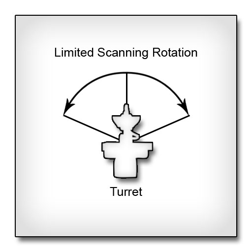
그림 11.39 - 스캔의 회전에 제한을 걸칠 수 있었기 때문에, 방향이 반대로 변경됩니다. *7. * IdleTimer() 함수는, 간단한 타이머 함수이며, 파라미터 없음으로 선언되었습니다.
function IdleTimer()
{
}
*8. * 이 함수의 유일한 목적은, 포대가 파괴되어 있지 않은 경우에, 포대를 Idle 상태에 되돌리는 것입니다.
if(! bDestroyed)
{
GotoState('Idle');
}
*9. * 작업 결과를 잃지 않게, 스크립트를 보존해 주세요.
<<<< 튜토리얼의 종료 >>>>
튜토리얼 11.16 - 포대, 파트 XII: ALERT 상태의 본체 파트 II
Alert 상태의 설명의 계속으로, BeginState() 이벤트는, Alert 용으로 포대의 초기화를 취급합니다. PreviousStateName 파라미터를 이용해 직전 상태에 근거한 개별의 동작을 실행하는 기능을 제공하고 있습니다만, Alert 상태의 초기화에서는, 같이 포대가 어느 상태로부터 옮기고 있는지는 고려하지 않습니다. 이 함수는, 포대를 에리어의 스캔을 개시하기 위해(때문에), 적절한 포즈에 두어, 완전한 스위프를 실행하기 위해서 필요한 시간량을 계산 함과 동시에, 스위프를 실행하기 위해서 어느 방향으로 포대가 회전을 개시해야할 것인가를 결정합니다. *1. * ConTEXT 및 MU_AutoTurret.uc 스크립트를 오픈해 주세요. *2. * Alert 상태에 대해서 BeginState() 이벤트를 선언해 주세요.
event BeginState(Name PreviousStateName)
{
}
*3. * 본이벤트에는, 2 개의 로컬 변수가 필요합니다. 처음은 스위프를 개시해야 할 초기 회전을 보관 유지하는 Rotator 입니다. 이 회전은, 포대의 현재의 Yaw 치로 옮겨놓을 수 있었던 Yaw 치를 가지는 TurretRotations 구조체의 AlertRotation 프롭퍼티로 지정된 회전입니다. 이제(벌써) 1 개의 로컬 변수는, 연속하는 포대의 에리어의 스위프의 합계 시간량을 나타내는 Float 치입니다.
local Rotator AlertRot; local Float RevTime;*4. * AlertRot 회전에는, 최초로 AlertRotation 의 값이 대입됩니다. 그리고, 그 Yaw 치는, 이 시점까지 실행되었을지도 모르는 몇번인가의 완전 회전을 제거해, 0 에서 65536 의 범위에 정규화된 포대의 현재의 Yaw 치에 의해 옮겨놓을 수 있습니다.
AlertRot = TurretRotations.AlertRotation; AlertRot.Yaw = PivotController.BoneRotation.Yaw % 65536;*5. * 포대의 Yaw 회전이 제한되고 있는지 어떤지에 의존해, 이 시점에서 2 개의 방법 가운데 어느 쪽인지가 선택됩니다. RotLimit 구조체의 bLimitYaw 로부터 판단해, Yaw 가 제한되고 있었을 경우는 에리어의 스위프를 실행하는 합계 시간을 계산할 때에 그 제한을 고려하지 않으면 안됩니다. 이 스위프는, 현재의 yaw 로부터 멀어진 한계점까지 가, 그 후 근접하는 한계점으로 돌아가, 그리고 AlertRotation 로 지정된 Yaw 에의 빵의 실행으로부터 완성됩니다. 우선, If-문장의 설정을 실시해 주세요.
if(RotLimit.bLimitYaw)
{
}
else
{
}
*6. * If 블록의 내부에서는, Yaw 회전의 한계점의 중간점과 현재의 Yaw 치를 비교해 어느 쪽의 한계점이 먼가를 알기 위해서(때문에), 이제(벌써) 1 개의 If-문장의 체크를 실시하고 있습니다.
if(AlertRot.Yaw > Float(RotLimit.RotLimitMax.Yaw + RotLimit.RotLimitMin.Yaw) / 2.0)
{
}
else
{
}
지정된 포대의 현재의 회전으로 완전한 스위프를 실행하기 위해서 걸리는 시간은, 가장 먼 한계점과 현재의 회전의 차이를 취해, 그 값을 포대의 당초의 최소 회전율로 제산하는 것으로 계산됩니다. 또, 최소한계점으로부터 최대한계점까지의 완전 스위프를 한 번 실시하기 위해서(때문에) 필요로 하는 시간은, 같은 방법으로 계산되어, 전회의 계산치에 가산됩니다. 마지막으로, 가장 먼 한계점으로부터 AlertRotation 까지 빵하기 위한 시간이, 지금까지의 결과에 가산됩니다. 이 값은, 개개의 If/Else 블록중의 RevTime 변수에 대입됩니다. 계산을 실시할 때의 유일한 차이는, 한계점이 보존되어 감산 오퍼랜드의 차례가 보존되고 있는 것입니다.
if(AlertRot.Yaw > Float(RotLimit.RotLimitMax.Yaw + RotLimit.RotLimitMin.Yaw) / 2.0)
{
RevTime = (Float(AlertRot.Yaw - RotLimit.RotLimitMin.Yaw) / Float(OrigMinRotRate)) +
(Float(RotLimit.RotLimitMax.Yaw - RotLimit.RotLimitMin.Yaw) / Float(OrigMinRotRate)) +
(Float(RotLimit.RotLimitMax.Yaw - TurretRotations.AlertRotation.Yaw) / Float(OrigMinRotRate));
}
else
{
RevTime = (Float(RotLimit.RotLimitMax.Yaw - AlertRot.Yaw) / Float(OrigMinRotRate)) +
(Float(RotLimit.RotLimitMax.Yaw - RotLimit.RotLimitMin.Yaw) / Float(OrigMinRotRate)) +
(Float(TurretRotations.AlertRotation.Yaw - RotLimit.RotLimitMin.Yaw) / Float(OrigMinRotRate));
}
MinTurretRotRate 는, 개시시에 포대가 회전해야 하는 방향에 의해, OrrigTurretRotRate 또는 OrigTurretRotRate 를 -1 로 곱해, 설정됩니다.
if(AlertRot.Yaw > Float(RotLimit.RotLimitMax.Yaw + RotLimit.RotLimitMin.Yaw) / 2.0)
{
RevTime = (Float(AlertRot.Yaw - RotLimit.RotLimitMin.Yaw) / Float(OrigMinRotRate)) +
(Float(RotLimit.RotLimitMax.Yaw - RotLimit.RotLimitMin.Yaw) / Float(OrigMinRotRate)) +
(Float(RotLimit.RotLimitMax.Yaw - TurretRotations.AlertRotation.Yaw) / Float(OrigMinRotRate));
MinTurretRotRate = -1 * OrigMinRotRate;
}
else
{
RevTime = (Float(RotLimit.RotLimitMax.Yaw - AlertRot.Yaw) / Float(OrigMinRotRate)) +
(Float(RotLimit.RotLimitMax.Yaw - RotLimit.RotLimitMin.Yaw) / Float(OrigMinRotRate)) +
(Float(TurretRotations.AlertRotation.Yaw - RotLimit.RotLimitMin.Yaw) / Float(OrigMinRotRate));
MinTurretRotRate = OrigMinRotRate;
}

그림 11.40 - Yaw로 제한을 받은 포대의 스캔 동작의 하나의 가능성. *7. * BeginAlert() 함수내의 주요한 Else 블록은, 한계의 부담이 없기 때문에, 좀 더 직접적입니다. 이 경우는, 포대는, 현재의 회전으로부터 AlertRotation 에 돌아오도록(듯이) 긴 거리를 회전합니다. 최초로, RevTime 는, FullRevTime 치에 초기화됩니다.
RevTime = FullRevTime;다음에, 어느 방향으로 포대를 회전하면(자) 좋은가를 결정하기 위해서(때문에), 현재의 회전이 AlertRotation 라고 비교됩니다. 반회전분이 AlertRotation 의 Yaw 프롭퍼티에 가산됩니다. 현재의 회전을 그 값과 비교 확인하는 것으로, 포대는 2 개의 반구의 어느 쪽을 향할까를 좁힐 수가 있습니다.
if(AlertRot.Yaw > (TurretRotations.AlertRotation.Yaw + 32768))
{
}
else
{
}
완전 회전 시간부터, 제거되는 시간량은, 현재의 회전과 AlterRotation 또는 AlertRotation 로부터의 완전한 일회전의 사이의 차분을 취하는 것에 의해 계산됩니다. 이 값은, OrigTurretRotRate 에 의해 제산됩니다. 이러한 계산 중(안)에서는, 현재의 회전을 기본으로, 없앨 필요가 있는 완전한 회전의 일부분을 찾아내는 것 같은 계산을 실시해 부의 값의 계산 결과가 되는 것 같은 명령을 받아 감산이 실시되어야 합니다.
if(AlertRot.Yaw > (TurretRotations.AlertRotation.Yaw + 32768))
{
RevTime += Float(AlertRot.Yaw - (TurretRotations.AlertRotation.Yaw + 65536)) /
Float(OrigMinRotRate);
}
else
{
RevTime += Float(TurretRotations.AlertRotation.Yaw - AlertRot.Yaw) /
Float(OrigMinRotRate);
}
MinTurretRotRate 의 값은, 전회의 스텝과 같게 설정됩니다.
if(AlertRot.Yaw > (TurretRotations.AlertRotation.Yaw + 32768))
{
RevTime += Float(AlertRot.Yaw - (TurretRotations.AlertRotation.Yaw + 65536)) /
Float(OrigMinRotRate);
MinTurretRotRate = -1 * OrigMinRotRate;
}
else
{
RevTime += Float(TurretRotations.AlertRotation.Yaw - AlertRot.Yaw) /
Float(OrigMinRotRate);
MinTurretRotRate = OrigMinRotRate;
}

그림 11.41 - 한계를 마련하지 않는 포대의 스캔 동작의 1 예. *8. * 이러한 4 개의 루틴의 1 개에 의해 RevTime 및 MinTurretRotrate 가 설정된 후에, IdleTimer() 함수를 실행하기 위해서, 타이머가 모든 If-문장의 외측으로 설정됩니다. 타이머의 지속 시간은, AlertRot 포즈에의 초기 회전을 실시하기 위해서(때문에) RevTime + 1.0 초가 됩니다.
SetTimer(RevTime + 1.0, false, 'Idletimer');*9. * 타이머가 설정되면(자), DoRotation() 함수를 사용해, AlertRot 에 대한 보간이 개시됩니다.
DoRotation(AlertRot, 1.0);*10. * 마지막으로, 지정되고 있으면, WakeSound SoundCue 가 재생됩니다.
if(TurretSounds.WakeSound ! = None) PlaySound(TurretSounds.WakeSound);*11. * 작업 결과를 잃지 않게, 스크립트를 보존해 주세요. <<<< 튜토리얼의 종료 >>>>
튜토리얼 11.17 - 포대, 파트 XIII: DEFEND 상태의 본체 파트 I
포대의 발포 기능은 2 개의 함수에 의해 조작됩니다. 최초의 함수는, TimedFire()라는 이름으로, 발사물을 spawns(스폰) 해, 포구의 섬광을 액티브하게 해, 발포음을 재생합니다. 2 개째의 함수는, StopMuzzleFlash()로, 그 이름으로부터 상상할 수 있도록(듯이) 포구의 섬광을 액티브하지 않게 할 뿐입니다. 이 튜토리얼에서는, 이것들 2 개의 함수의 작성에 대해 설명합니다. *1. * ConTEXT 및 MU_AutoTurret.uc 스크립트를 오픈해 주세요. *2. * StopMuzzeFlash() 함수는, 매우 간단하므로, 그리고 시작합시다. Defend 상태의 본체중에, 파라미터 없음으로, 이 함수를 선언해 주세요.
function StopMuzzleFlash()
{
}
*3. * 포구의 섬광의 파티클 시스템은, ParticleSystemComponent 의 DeactivateSystem()를 호출하는 것으로, 정지합니다. StopMuzzleFlash() 함수의 완전한 내용은 이하와 같습니다.
MuzzleFlashEffect.DeactivateSystem();*4. * TimedFire() 함수는, 포대가 Defend 상태를 개시했을 때에 루프 설정되어 포대가 Defend 상태를 빠졌을 때에 클리어 되는 타이머 함수입니다. 이 함수를, 여기서 선언해 주세요.
function TimedFire()
{
}
*5. * 로컬의 Projectile 변수는, spawned(스폰 된) 발사물을 참조하기 위해서 필요합니다.
local Projectile Proj;*6. * FireRotation 변수로부터 얻을 수 있던 회전을 사용하는 FireLocation 를 ProjClass 변수내에서 지정된 클래스를 사용해, 발사물이 spawned(스폰) 되어 Proj 로컬 변수에 대입됩니다.
Proj = Spawn(ProjClass, self, , FireLocation, FireRotation, , True);*7. * spawn(스폰)가 성공해, 발사물을 아직 삭제하려고 하지 않은 경우는, 발사물이 이동해야 할 방향을 건네주어, 발사물의 Init() 함수가 불려 갑니다. 이 함수는, 함수에게 건네질 방향 Vector 를 캐스트 하는 것으로 발사물의 회전을 설정해, 그 Velocity 를 적절히 초기화합니다.
if( Proj ! = None && ! Proj.bDeleteMe )
{
Proj.Init(Vector(FireRotation));
}
주기 : 이 코드는, 기존의 UT3 무기 클래스의 하나로부터 직접 차용했습니다. 신규의 코드를 기술할 때에 모델로서 동일한 기존 클래스를 사용하는 것은, 언제라도 좋은 아이디어입니다.

그림 11.42 - 발사물은 spawned(스폰 되고) 포대가 목적을 정한 방향의 속도로 초기화됩니다. *8. * 다음에, 포구의 섬광이 액티브하게 되어, 포구의 섬광의 방사가 지정되었다고 간주, 포구의 섬광을 종료할 때까지의 타이머가 개시됩니다.
if(TurretEmitters.MuzzleFlashEmitter ! = None)
{
MuzzleFlashEffect.ActivateSystem();
SetTimer(TurretEmitters.MuzzleFlashDuration, false, 'StopMuzzleFlash');
}
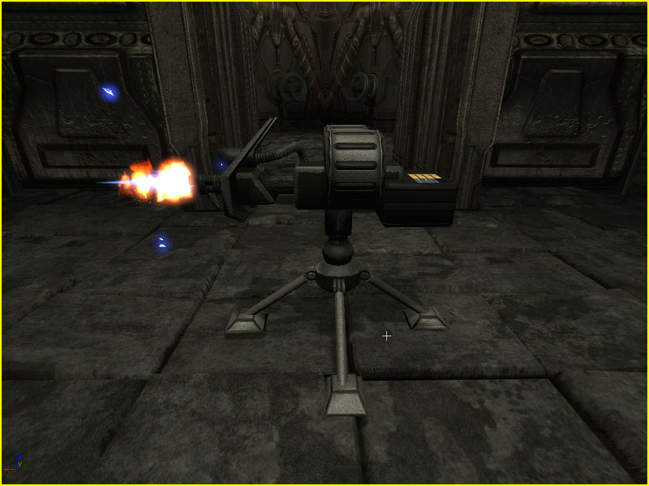
그림 11.43 - 액티브하게 되었을 때에는, 포구의 섬광의 효과가 시인 가능하게 됩니다. *9. * 마지막으로, 디자이너에 의해 지정되었을 경우는, 발포음이 재생됩니다.
if(TurretSounds.FireSound ! = None) PlaySound(TurretSounds.FireSound);*10. * BeginFire() 함수는, TimedFire() 함수에 대해서 루프를 실시하는 타이머를 설정하는 것으로 발포 프로세스를 개시하는 타이머 함수이며, bCanFire 변수를 타글 하는 것으로 타겟팅의 프로세스를 가능하게 합니다. 이 함수를 선언해 주세요.
function BeginFire()
{
}
*11. * RoundsPerSec 의 값이 0 보다 크면, TimedFire() 함수는 RoundsPerSec 프롭퍼티의 역수로서 계산된 비율로 실행하도록(듯이) 설정되어 루프 설정됩니다. 또, bCanFire 프롭퍼티는 True 로 설정됩니다.
if(RoundsPerSec > 0)
{
SetTimer(1.0/RoundsPerSec, true, 'TimedFire');
bCanFire = true;
}
*12. * 작업 결과를 잃지 않게, 스크립트를 보존해 주세요.
<<<< 튜토리얼의 종료 >>>>
튜토리얼 11.18 - 포대, 파트 XIV: DEFEND 상태의 본체 파트 II
Defend 상태의 계속입니다만, BeginState() 및 EndState() 이벤트가, Defend 상태를 초기화해, 종료하기 위해서 선언됩니다. *1. * ConTEXT 및 MU_AutoTurret.uc 스크립트를 오픈해 주세요. *2. * PreviousStateName 파라미터와 함께 BeginState() 이벤트를 선언해 주세요.
event BeginState(Name PreviousStateName)
{
}
*3. * 포대가 Alert 상태로부터 Defend 상태에 되는 경우는, 무심코 포대가 Idle 상태에 놓여지는 것을 막기 위해서(때문에) IdleTimer 가 동작중이면, 클리어 하지 않으면 안됩니다.
if(PreviousStateName == 'Alert')
{
if(IsTimerActive('IdleTimer'))
ClearTimer('IdleTimer');
}
*4. * bCanFire 프롭퍼티는, 바라지 않는 조준 동작을 피하기 (위해)때문에, 항상 False 에 초기설정 됩니다.
bCanFire = false;*5. * BeginState() 이벤트에 대해도, FireLocation 및 FireRotation 의 프롭퍼티는, SkeletalMeshComponent 의 GetSocketWorldLocationAndRotation() 함수를 호출해, 그것들 2 개의 변수를 건네주는 것으로, 현재의 포구의 첨단에 위치하는 소켓의 위치 및 회전에 의해 초기화됩니다.
Mesh.GetSocketWorldLocationAndRotation(TurretBones.FireSocket, FireLocation, FireRotation);*6. * 다음에, 포대는, DoRotation() 함수를 사용해 현재의 적과 정면으로 맞서기 위한 보간을 실시합니다.
DoRotation(Rotator((EnemyTarget.Location - FireLocation) << Rotation), 1.0);이하의 계산은, 포대의 첨단으로부터 적까지의 벡터를 요구해 월드 공간으로 변환합니다. 그 때문에, 결과의 Vector 는, 포대가 적을 노리기 위해서(때문에) 필요한 회전을 얻기 위해서(때문에) Rotator 에 캐스트 됩니다.
Rotator((EnemyTarget.Location - FireLocation) << Rotation)
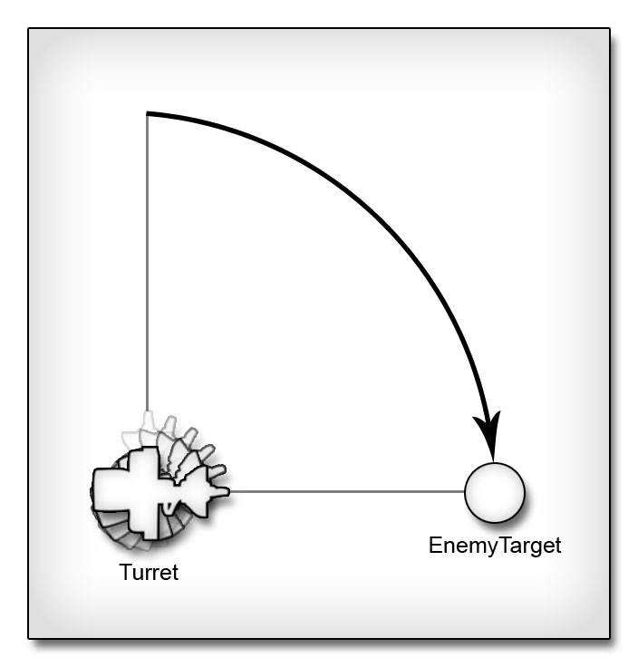
그림 11.44 - 포대는, EnemyTarget 와 직면하기 위해서 회전합니다. *7. * 디자이너에 의해 지정되고 있다면, SpinUpSound 가 재생됩니다
if(TurretSounds.SpinUpSound ! = None) PlaySound(TurretSounds.SpinUpSound);*8. * BeginState() 이벤트의 마지막 스텝에서는, 1.0 초 경과후에 BeginFire() 함수를 실행하기 위해서 타이머를 개시합니다. 이것에 의해 포대가 어떠한 포격의 조준을 개시하기 전에 회전의 보간을 완료시킵니다.
SetTimer(1.0, false, 'BeginFire');*9. * EndState() 이벤트는, 1 개의 Name 파라미터만을 갖는다고 하는 점으로써 BeginState() 이벤트의 선언과 자주(잘) 닮았습니다.
event EndState(Name NewStateName)
{
}
*10. * Defend 상태의 이 이벤트의 유일한 목적은, 포대의 발포를 정지하기 위해서, TimedFire() 타이머를 클리어 하는 것입니다.
ClearTimer('TimedFire');
*11. * 작업 결과를 잃지 않게, 스크립트를 보존해 주세요.
<<<< 튜토리얼의 종료 >>>>
튜토리얼 11.19 - 포대, 파트 XV: DEFEND 상태의 본체 파트 III
Defend 상태의 마지막 부분은, 상태의 Tick() 함수내에 포함되는 조준부의 코드입니다. *1. * ConTEXT 및 MU_AutoTurret.uc 스크립트를 오픈해 주세요. *2. * Defend 상태내의 Tick() 함수를 선언해 주세요.
function Tick(Float Delta)
{
}
*3. * Tick() 함수의 이 버젼에서는, 로컬의 Int 와 함께 조준부의 계산을 실행하기 위해서 2 개의 로컬 Rotator 가 필요합니다.
local Rotator InterpRot; local Rotator DiffRot; local Int MaxDiffRot;*4. * 어떠한 신규 코드를 추가하기 전에, 함수가 오버라이드(override) 된다고 해도, 표적을 포착하는 코드는 여전히 실행되므로, Tick() 함수의 글로벌 실장은 불려 갈 필요가 있습니다.
Global.Tick(Delta);*5. * Tick() 함수내의 조준부의 코드는, 포대가 발포가 허가된 때인 만큼 실행됩니다.
if(bCanFire)
{
}
*6. * If-문장의 내부에서는, 포대로부터 적까지의 방향 Vector 가 계산됩니다. 이것은, 적의 움직임을 추적하기 위해서 매틱 계산됩니다.
EnemyDir = EnemyTarget.Location - Location;
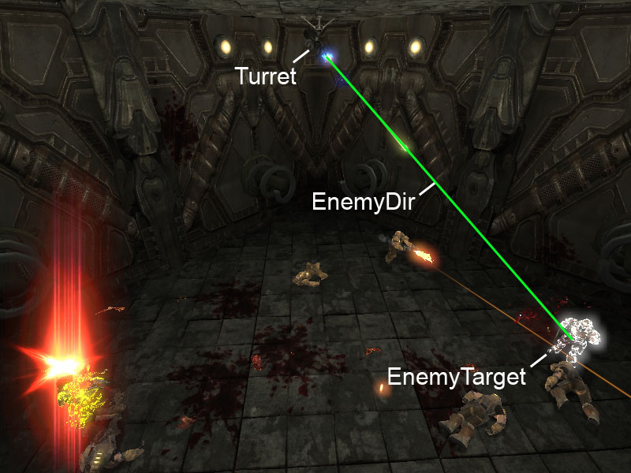
그림 11.45 - EnemyDir 는, 포대로부터 EnemyTarget 에의 방향입니다. *7. * 다음에, 이하의 조건의 어느 쪽인가에 합치했을 때에, 모든 조준부의 변수는 초기화 또는 리셋트 됩니다.
- 새로운 적의 포착

그림 11.46 - 포대는 새로운 EnemyTarget 를 가집니다.
- 현재의 적이 이동

그림 11.47 - 포대의 EnemyTarget 는 이동중입니다.
- 현재의 조준부의 보간이 완료

그림 11.48 - 포대는, 고정한 EnemyTarget 에 정면으로 맞서기 위해서(때문에) 회전했습니다.
if( EnemyTarget ! = LastEnemyTarget ||
EnemyDir ! = LastEnemyDir ||
ElapsedTime >= TotalInterpTime )
{
}
*a. * 초에, LastEnemyTarget 및 LastEnemyDir 변수는, 현재의 값으로 갱신됩니다.
*8. * 아주 없으면, 현재의 보간의 경과시간이 늘려집니다.
LastEnemyDir = EnemyDir; LastEnemyTarget = EnemyTarget;*b. * 다음에, 보간을 위한 개시 및 종료 회전치가 초기화됩니다.
StartRotation = PivotController.BoneRotation; TargetRotation = Rotator((EnemyTarget.Location - FireLocation) << Rotation);*c. * 그리고, 개시 및 종료 회전동안의 차분을 취하는 것으로 DiffRot 가 계산됩니다. 그 다음에, MaxDiffRot 가 결과의 DiffRot 의 Pitch, Yaw 또는 Roll 의 최대의 요소를 검색해 계산됩니다. 1 개의 식에서 이 계산을 실행하기 위해서 2 개의 Max() 함수의 소환이 상자에 되고 있습니다.
DiffRot = TargetRotation - StartRotation; MaxDiffRot = Max(Max(DiffRot.Pitch, DiffRot.Yaw), DiffRot.Roll);*d. * 희망하는 회전에의 보간에 필요한 합계 시간은, MaxDiffRot 를 MaxTurretRotRate 로 제산해 그 결과의 절대치를 취하는 것으로 계산됩니다.
TotalInterpTime = Abs(Float(MaxDiffRot) / Float(MaxTurretRotRate));*e. * 마지막으로, ElapsedTime 는, 마지막 틱으로부터의 경과시간과 같게 설정합니다.
ElapsedTime = Delta;결과의 If 블록은 이하와 같습니다:
if( EnemyTarget ! = LastEnemyTarget ||
ElapsedTime >= TotalInterpTime ||
EnemyDir ! = LastEnemyDir )
{
LastEnemyDir = EnemyDir;
LastEnemyTarget = EnemyTarget;
StartRotation = PivotController.BoneRotation;
TargetRotation = Rotator((EnemyTarget.Location - FireLocation) << Rotation);
DiffRot = TargetRotation - StartRotation;
MaxDiffRot = Max(Max(DiffRot.Pitch, DiffRot.Yaw), DiffRot.Roll);
TotalInterpTime = Abs(Float(MaxDiffRot) / Float(MaxTurretRotRate));
ElapsedTime = Delta;
}
else
{
ElapsedTime += Delta;
}
*9. * 보간에 필요한 모든 변수를 설정할 수 있으면, 보간에 대한 현재의 알파치가 계산되어 보간이 실행되어, 결과는 InterpRot 의 로컬 Rotator 에 대입됩니다.
RotationAlpha = FClamp(ElapsedTime / TotalInterpTime, 0.0, 1.0); InterpRot = RLerp(StartRotation, TargetRotation, RotationAlpha, true);

그림 11.49 - 포대는, 틱 마다 최종적인 희망하는 회전으로 향하는 경로안의 일부의 회전을 실시하고 있습니다. *10. * 결과의 회전은, 디자이너에 의해 실장될 가능성이 있는, 임의의 회전 제한에 의해 제한을 받습니다.
if(RotLimit.bLimitPitch)
InterpRot.Pitch = Clamp(InterpRot.Pitch,
RotLimit.RotLimitMin.Pitch,
RotLimit.RotLimitMax.Pitch );
if(RotLimit.bLimitYaw)
InterpRot.Yaw = Clamp( InterpRot.Yaw,
RotLimit.RotLimitMin.Yaw,
RotLimit.RotLimitMax.Yaw );
if(RotLimit.bLimitRoll)
InterpRot.Roll = Clamp( InterpRot.Roll,
RotLimit.RotLimitMin.Roll,
RotLimit.RotLimitMax.Roll );
*11. * 마지막에 보간 된 회전은, 포대를 갱신하기 위해서 PivotController 의 BoneRotation 에 대입됩니다.
PivotController.BoneRotation = InterpRot;*12. * 발포시의 위치 및 회전의 변수는, 포대의 새로울 방향으로 갱신됩니다.
Mesh.GetSocketWorldLocationAndRotation(TurretBones.FireSocket, FireLocation, FireRotation);*13. * 마지막으로, 새로운 발포시의 회전은, 랜덤인 조준 에러로 조정됩니다.
FireRotation.Pitch += Rand(AimRotError * 2) - AimRotError; FireRotation.Yaw += Rand(AimRotError * 2) - AimRotError; FireRotation.Roll += Rand(AimRotError * 2) - AimRotError;0 으로부터 AimRotError 의 2 배의 값의 사이의 랜덤인 정수를 계산합니다. 결과의 값은, ? AimRotError 및 AimRotError 의 사이의 랜덤인 값을 효율적으로 생성하도록(듯이) AimRotError 로 보정됩니다. 이 랜덤인 값은, FireRotation 의 개개의 컴퍼넌트에 가산됩니다.

그림 11.50 - 이러한 발사물의 궤도의 변화는 랜덤에 보정된 포대의 조준에 의존합니다. *14. * 작업 결과를 잃지 않기 위해(때문에) 스크립트를 보존해 주세요. <<<< 튜토리얼의 종료 >>>>
튜토리얼 11.20 - 포대, 파트 XVI: DEAD 상태의 본체
포대 클래스에 속하는 마지막 상태는 Dead 상태입니다. 이 상태에는, 표적의 포착이나 데미지를 주는 기능의 실행을 실시하지 않는 것을 확실히 함과 동시에 모든 파괴 효과를 실행할 책임이 있습니다. *1. * ConTEXT 및 MU_AutoTurret.uc 스크립트를 오픈해 주세요. *2. * Tick() 및 TakeDamage() 함수는, 이 상태에서는 무시되기 때문에, 이미 실행되지 않습니다.ignores Tick, TakeDamage;*3. * PlayDeath() 함수는 파괴 효과의 재생을 조작하는 타이머 함수입니다.
function PlayDeath()
{
}
*4. * PlayDeath() 함수에서는, 디자이너에 의해 설정되어 있으면, 파괴 파티클 효과가 재생됩니다.
if(TurretEmitters.DestroyEmitter ! = None) DestroyEffect.ActivateSystem();

그림 11.51 - 디폴트 파괴 효과가 액티브하게 됩니다. *5. * 전투 불능 상태가 될 때의 사운드가 존재하고 있으면, 곧바로 재생됩니다.
if(TurretSounds.DeathSound ! = None) PlaySound(TurretSounds.DeathSound);*6. * DestroyedMesh 가, 디자이너에 의해 선택되고 있었을 경우는, 포대의 새로운 골격 메쉬로서 설정됩니다.
if(DestroyedMesh ! = None) Mesh.SetSkeletalMesh(DestroyedMesh);*7. * 마지막으로, bStopDamageEmmiterOnDeath 가 설정되어 있으면, 데미지 파티클 효과는, 액티브해 없어집니다.
if(TurretEmitters.bStopDamageEmitterOnDeath) DamageEffect.DeactivateSystem();*8. * bRandomDeath 변수가, True 로 설정되어 있는 이벤트중에서는, 어떠한 회전의 한계를 고려해면서, 포대는 랜덤 회전을 작성해, 회전을 보간 하지 않으면 안됩니다. DoRandomDeath() 함수는 이 기능을 취급합니다.
function DoRandomDeath()
{
}
*9. * DeathRot 라는 이름의 로컬 Rotator 는, 랜덤인 회전을 보관 유지하기 위해서 사용됩니다.
local Rotator DeathRot;*10. * RotRand() 함수는 랜덤인 회전을 계산하기 위해서 사용됩니다. Roll 컴퍼넌트를 포함하기 위해서(때문에), 함수에는 True 치가 건네받습니다. 계산 결과의 회전은, DeathRot 변수에 대입됩니다.
DeathRot = RotRand(true);*11. * 그리고, 새로운 회전의 컴퍼넌트는, 임의의 설정 끝난 회전 한계에 따라 클램프 됩니다.
if(RotLimit.bLimitPitch)
DeathRot.Pitch = Clamp( DeathRot.Pitch,
RotLimit.RotLimitMin.Pitch,
RotLimit.RotLimitMax.Pitch );
if(RotLimit.bLimitYaw)
DeathRot.Yaw = Clamp( DeathRot.Yaw,
RotLimit.RotLimitMin.Yaw,
RotLimit.RotLimitMax.Yaw );
if(RotLimit.bLimitRoll)
DeathRot.Roll = Clamp( DeathRot.Roll,
RotLimit.RotLimitMin.Roll,
RotLimit.RotLimitMax.Roll );
*12. * 마지막에 새로운 회전에 포대를 보간 하기 위해서 제한된 DeathRot 를 건네주어 DoRotation() 함수가 불려 갑니다.
DoRotation(DeathRot, 1.0);

그림 11.52 - 포대에서는, 랜덤 회전을 가정합니다. *13. * BeginState() 이벤트는, 이전의 2 개의 함수를 기동하기 위해서, Dead 상태로 사용됩니다.
event BeginState(Name PreviousStateName)
{
}
*14. * 제 1 에, bDestroyed 변수는, 파괴된 포대를 식별하기 위해서 설정됩니다.
bDestroyed = true;*15. * 란담데스 회전이 사용되지 않는다면, TurretRotations 구조 체내에서 지정된 DeathRotation 를 건네주어 DoRotation() 함수가 불려 갑니다.
if(! TurretRotations.bRandomDeath) DoRotation(TurretRotations.DeathRotation, 1.0);아주 없으면, DoRandomDeath() 함수가 불려 간다.
else DoRandomDeath();
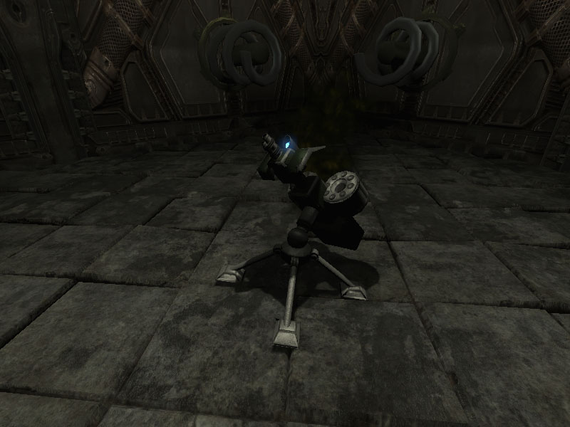
그림 11.53 - 포대는, DeathRotation 에 회전합니다. *16. * 그리고, 새로운 회전의 완료까지의 보간의 다음에 PlayDeath() 함수를 실행하기 위해서 타이머를 설정합니다.
SetTimer(1.0, false, 'PlayDeath');*17. * 작업 결과를 잃지 않게 스크립트를 보존해 주세요. <<<< 튜토리얼의 종료 >>>>
튜토리얼 11.21 포대, 파트 PART XVII - 컴파일 및 테스트
포대에 관한 모든 코드를 준비할 수 있으면(자), UnrealEd 중(안)에서 스크립트의 컴파일 및 테스트를 실행할 수 있습니다. *1. * DVD 로 본장을 위해서(때문에) 제공된 파일과 함께 TurretContent.upk 의 파일을 Unpublished\CookedPC 디렉토리에 카피해 주세요. *2. * 스크립트를 컴파일 해, 문법 에러가 있으면(자) 수정해 주세요. *3. * 본장의 파일과 함께 제공된 UnrealEd 및 DM-CH_11_Turret.ut3 맵을 오픈해 주세요. 본맵은, 본서를 통해 넓게 사용된 테스트 맵의 수정판이므로, 아주 친숙하게 보일지도 모릅니다.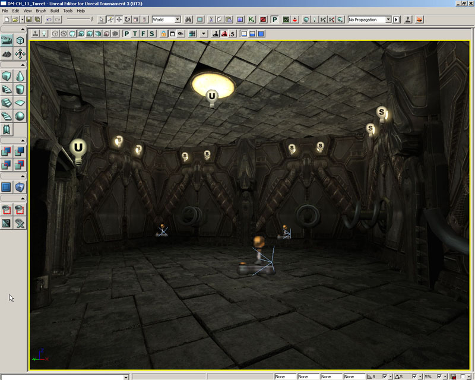
그림 11.54 - DM-CH_11_Turret 맵. *4. * Generic Browser(범용 브라우저)를 오픈해, Actor Classes 탭으로 이동해 주세요. Pawn 섹션을 확장해, 리스트로부터 MU_AutoTurret 를 선택해 주세요.

그림 11.55 - Actor Browser 내의 MU_AutoTurret 클래스. *5. * 투시도내에서 오른쪽 클릭해, Add MU_AutoTurret Here 를 선택해 주세요. 포대 먼지는 맵내에 나타나야 합니다. X-축의 주위에서 180 번, 또는, Properties Window 내의 Movement->Rotation->Roll 프롭퍼티를 조정해, 포대를 회전해, 포대를 상하 역으로 해 주세요. 방의 안쪽의 근처에 3 PlayerStarts 로, 방의 천정에 배치해 주세요.
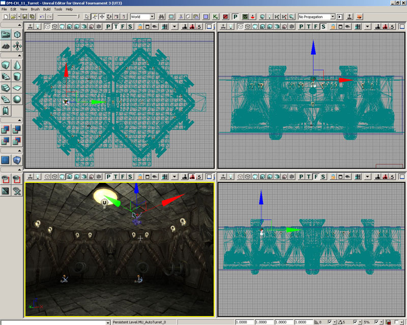
그림 11.56 - 포대 먼지는 맵내에 배치됩니다. *6. * 포대 먼지를 선택해, Properties Window 를 오픈하기 위해서 F4 를 눌러 주세요. 편집 가능한 프롭퍼티를 표시하기 위해서 Turret 카테고리를 확장해 주세요. 어떠한 조정이 희망이면 자유롭게 가 좋습니다만, 초기 테스트 실행 프로세스에서는 디폴트 처리는 정상적으로 동작해야 합니다. *7. * 툴바상의 Rebuild All 버튼을 눌러 맵을 리비르드 해 주세요. 그리고, 인접하는 빈방내에서 오른쪽 클릭해, Play From Here 를 선택해 주세요. *8. * Tab 를 눌러 콘솔을 오픈해, 맵중을 비행해 포대로부터의 데미지를 받는 것을 피하기 위해서(때문에) 'ghost'라고 입력해 주세요. 포대가 있는 방으로 이동해 주세요. 포대는 조준을 맞추어 발포를 개시할 것입니다.

그림 11.57 - 포대는 플레이어에게 발포하고 있습니다. *9. * 동작중의 포대를 좀 더 자주(잘) 보기 위해서(때문에), 콘솔을 재차 오픈해, 맵에 3 개의 보트를 추가하기 위해서‘addbots 3＇이라고 입력해 주세요. 포대는, 새로운 보트에 조준을 맞추어, 발포를 개시할 것입니다. 포대에 새로운 적을 선택시키기 위해서(때문에), 자기 자신은 방을 나오고, 또 돌아오지 않으면 안 될지도 모릅니다.
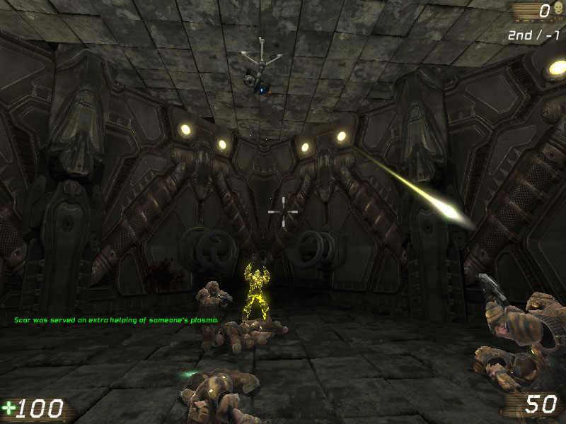
그림 11.58 - 보트는 포대에 의해 포격 되고 있습니다. *10. * Esc 키를 눌러 맵을 종료해 주세요. RotLimit 회전과 같은, 프롭퍼티로 계속 놀아 의도했던 대로 모두가 동작하는 것을 확인하기 위해서 맵의 테스트를 계속해 주세요. *11. * 설정을 보존하고 싶은 경우는, 새로운 이름으로 맵을 보존해 주세요. 포대의 튜토리얼의 코스를 통해서, 다른 환경에서 다른 동작을 먼지에 시키기 (위해)때문에, 어떻게 상태를 사용할 수 있을까의 예를 봐 왔습니다. 동시에, AnimTree 안의 골격 콘트롤러를 사용해 뼈를 조작하는 방법을 나타내는 것에 의해, 완전히 새로운 무기를 작성하는 기본적인 기능이 실장되었습니다. <<<< 튜토리얼의 종료 >>>>
튜토리얼 11.22 - UTBOT_PELLET 클래스의 설정
전장에 대해 UTPelletGame 게임 타입을 구축했을 때에, 새로운 게임 타입을 사용하는 커스텀 보트의 작성에 임할 예정인 것은 언급했습니다. 이 튜토리얼에서는, UTBot_Pellet 클래스를 선언하는 것으로 이러한 커스텀 보트의 설정의 처리를 개시합니다. *1. * ConTEXT 를 오픈해, UnrealScript 하이 라이터를 사용해 신규 파일을 작성해 주세요. *2. * UTBot 클래스로부터 확장한 UTBot_Pellet 클래스를 선언해 주세요. 이 클래스에 의해, 빌드원의 확고한 기능상의 기반이 제공됩니다.class UTBot_Pellet extends UTBot;*3. * 이 새로운 클래스에는, 신규 기능을 실장하기 위해서 약간의 클래스 변수가 필요합니다.
var Actor CurrentGoal;이것은, 보트가 이동하면서 향하는 최종적인 목적지에 대한 참조를 보관 유지합니다만, 보트가 현재 어느 네비게이션 상태에 있을까에 의해, 어느 타입의 pellet 또는 있는 플레이어일 것입니다.
var Bool bResetMove;이 Bool 변수는, 어느 pellet를 향해 현재 안내하고 있는 보트에, 안내하는 새로운 pellet를 선택하게 하기 위해서(때문에) 사용됩니다. 이것은, 보트가 도달하기 전에 다른 플레이어가 pellet를 모았을 때에 사용됩니다.
var Float HPDistanceThreshold;이 수치는, 미리 다른 pellet를 따라 잡기 위해서(때문에) 필요한 HyperPellet 에 얼마나 접근하고 있는지를 지정합니다.
var Float MinAggressiveness; var Float MaxAggressiveness;이것들 2 개의 수치는, 보트의 Aggressiveness 프롭퍼티에 대해서 사용되는 랜덤인 값을 선택하기 위한 범위를 나타냅니다. 이것은, 보트의 동작 정원않고일까 변화를 줍니다. *4. * 디폴트 프롭퍼티 블록으로 이동해, 선언한지 얼마 안된 변수의 몇개인가에, 어느 디폴트치를 설정할 수가 있습니다.
defaultproperties
{
}
defaultproperties 블록을 추가해 주세요.
MinAggressiveness=0. 25 MaxAggressiveness=0. 850.25 에서 0.85 의 수치는, 보트의 Aggressiveness 에 극단적이고 없는 적절한 범위를 줍니다.
HPDistanceThreshold=512이 값은, 보트에 HyperPellet 의 뒤를 직접 쫓게 해, 그것이 보트의 현재의 위치의 512 유니트내에 있으면, 다른 모든 pellet를 무시합니다. *5. * 여기에서는, UTBot 클래스가 조작하는 현재의 방법 대신에 MinAggressiveness 및 MaxAggressiveness 의 범위를 사용하는 Aggressiveness 변수의 설정을 유효하게 하기 위한(해) PostBeginPlay() 함수는 오버라이드(override) 됩니다. PostBeginPlay() 함수를 선언해 주세요.
function PostBeginPlay()
{
}
*6. * 다음에, UTBot 클래스의 PostBeginPlay() 함수는, Super 키워드를 사용해, 다른 처리를 실행하기 전에 불려 갈 필요가 있습니다.
Super.PostBeginPlay();*7. * 그리고, RandRange() 함수를 사용해, MinAggressiveness 및 MaxAggressiveness 변수에 의해 지정된 범위내의 난수치에 Aggressiveness 변수를 설정해 주세요.
Aggressiveness = RandRange(MinAggressiveness, MaxAggressiveness);*8. * UTBot_Pellet.uc 의 이름으로, MasteringUnrealScript/Classes 디렉토리내에 스크립트를 보존해 주세요. <<<< 튜토리얼의 종료 >>>>
튜토리얼 11.23 - PELLETCOLLECTING 상태, 파트 I: FINDNEWGOAL() 함수
보트의 행동은, 보트의 현재 상태에 의해 정해집니다. UTBot_Pellet 클래스에 추가되는 최초 상태는, PelletCollecting 상태입니다. 이 상태는, 보트에 pellet를 탐색하는 패스 네트워크를 지시합니다. PelletCollecting 상태에 있는 보트의 행동은, 기본적으로 이하의 동작에 분할할 수 있습니다. 시작해에 보트는 목적지를 선택합니다. 그리고, 보트는 목적지로 향해 이동합니다. 보트가 목적지에 도착하면(자), 새로운 목적지를 선택해, 처리를 반복합니다. *1. * ConTEXT 및 UTBot_Pellet 스크립트를 오픈해 주세요. *2. * 새로운 PelletCollecting 상태를 선언해 주세요.
auto state PelletCollecting
{
}
개시시에 PelletCollecting 상태를 강제하기 위해서 선언하므로, auto 키워드가 사용되고 있는 것에 유의해 주세요.
*3. * 목적지의 선택은, FindNewGoal()라는 이름의 함수에 의해 조작됩니다. PelletCollecting 상태 블록내에, 이 신규 함수를 선언해 주세요.
function FindNewGoal()
{
}
*4. * 이 함수는, 몇개의 로컬 변수를 사용합니다.
local Pellet CurrPellet;이 변수는, UTPelletGame 클래스의 PelletInfo 에 속하는 Pellets 배열의 반복에 대해, 현재의 pellet에의 참조를 보관 유지합니다.
local Float Distance;이 변수는, 지금까지로, 가장 가까운 pellet에의 거리를 보관 유지합니다.
local Float currDistance;이 변수는, 보트로부터 현재의 pellet에의 거리를 보관 유지합니다.
local Bool bGoalIsHP;Bool 치는, CurrentGoal 가 HyperPellet 를 참조할까 하지 않는가를 지정합니다.
local Bool bCurrIsHP;이 Bool 치는, 반복안의 현재의 pellet가 HyperPellet 일지 어떨지를 지정합니다. *5. * 초에, 보트가 Pawn 를 제어하고 있을까를 조사합니다. 실행은, Pawn 변수가 대입된 참조를 가질 때에만, 실행의 계속이 허가됩니다.
if(Pawn == None) return;*6. * 다음에, 반복 처리의 사이에, 개개의 pellet의 거리를 비교할 때에 사용하는 어느 정도 큰 값을 Distance 의 값으로 설정해, 신규의 CurrentGoal 가 선택되는 것을 확실히 하기 위해서 CurrentGoal 에 대입된 참조가 있으면 삭제합니다.
Distance = 1000000.0; CurrentGoal = None;*7. * 개개의 pellet에 대한 참조를 보관 유지하는 CurrPellet 로컬 변수를 사용하는 UTPelletGame 의 PelletInfo 에 속하는 Pellets 배열에 대해서 반복 처리를 실시하기 (위해)때문에 이테레이타를 설정해 주세요.
foreach UTPelletGame(WorldInfo.Game). PelletInfo.Pellets(CurrPellet)
{
}
*8. * currDistance, bGoalIsHP 및 bCurrIsHP 변수를 초기화해 주세요. currDistance 변수의 값은, VSize() 함수를 사용해 계산된, CurrPellet 로부터 보트의 Pawn 에의 거리가 됩니다. 2 개의 Bool 변수에서는, CurrentGoal 및 CurrPellet 가 각각 HyperPellet 일지 어떨지를 찾아내기 위해서(때문에) IsA() 함수를 사용합니다.
currDistance = VSize(CurrPellet.Location - Pawn.Location);
bGoalIsHP = CurrentGoal.IsA('HyperPellet');
bCurrIsHP = CurrPellet.IsA('HyperPellet');
*9. * 4 개의 분할된 조건으로부터 구성되는 If-문장은, 그 중의 1 개(살)만이 조건에 합치하지 않으면 안됩니다만, 현재의 pellet가 새로운 CurrentGoal 로서 선택되었는지 어떠했는지를 결정합니다.
if( (CurrentGoal ! = none && bGoalIsHP && bCurrIsHP && currDistance < Distance) ||
(CurrentGoal ! = none && ! bGoalIsHP && bCurrIsHP && currDistance < HPDistanceThreshold) ||
(CurrentGoal ! = none && ! bGoalIsHP && currDistance < Distance) ||
(CurrentGoal == none && currDistance < Distance) )
{
}
4 개 상태를, 코드중에 나타나는 차례로 이하에 설명합니다 :
- 골은 존재해, 골 및 현재의 pellet는 양쪽 모두 HyperPellet 이며, 현재의 pellet는 골보다 가까운 시일내에 되어 있습니다.

그림 11.59 - 현재의 pellet가 보다 근처, 현재의 pellet 및 골은 HyperPellet 입니다.
- 골은 존재해, 현재의 pellet는 HyperPellet 입니다만, 골은 그렇지 않고, 현재의 pellet가 HPDistanceThreshold 보다 가까운 시일내에 되어 있습니다.

그림 11.60 - 현재의 pellet는 HyperPellet , 골은 통상의 Pellet 이며, 현재의 pellet는, HPDistanceThreshold 중에 있습니다.
- 골은 설정되어 골은 HyperPellet 는 아니고, 현재의 pellet는 골보다 가까운 시일내에 되어 있습니다.

그림 11.61 - 현재의 pellet가 보다 가까운 시일내에 되어 있어, 현재의 pellet 및 골은 통상의 pellet입니다.
- 골은 설정되지 않고, 현재의 pellet는 Distance 의 값보다 가까운 시일내에 되어 있습니다.

그림 11.62 - 현재는 골이 존재하지 않고, 현재의 pellet는 현재의 거리의 값보다 가까운 시일내에 되어 있습니다. *10. * 전형하는 조건의 어느 쪽인가에 합치하면, 현재의 pellet가, 새로운 CurrentGoal 로서 설정되어 보트로부터 현재의 pellet까지의 거리로 Distance 변수는 갱신됩니다.
CurrentGoal = CurrPellet; Distance = currDistance;*11. * 작업 결과를 잃지 않게 스크립트를 보존해 주세요. <<<< 튜토리얼의 종료 >>>>
튜토리얼 11.24 - PELLETCOLLECTING 상태, 파트 II: HASREACHEDGOAL() 함수
PelletCollecting 상태에 추가되는 2 개째의 함수는, HasReachedGoal() 함수입니다. 이 함수는, 주로 보트의 위치를 확인해, 목적지의 위치를 비교하는 것으로, 보트가 그 최종 목적지에 도달하고 있을지 어떨지를 판단합니다. 만약 그러한 사이의 거리가 보트의 충돌 반경보다 작으면, 보트는 그 목적지에 도달하고 있다고 보여 새로운 목적지의 선택을 할 수 있습니다. *1. * ConTEXT 및 UTBot_Pellet.uc 스크립트를 오픈해 주세요. *2. * PelletCollecting 상태내에 Bool 형을 리턴 하는 HasReachedGoal() 함수를 선언해 주세요.
function Bool HasReachedGoal()
{
}
*3. * 본함수는, True 또는 False 의 어느 쪽인지를 리턴 하는, 일련의 If-문장으로 구성됩니다. 보트가 대입된 Pawn 를 가지는 것을, 확인하기 위해서 최초 상태를 체크합니다. 그렇지 않으면, 이 함수의 실행을 계속할 이유가 없기 때문에, False 를 리턴 합니다.
if(Pawn==none) return false;*4. * 다음에, 다른 If-문장으로, 확실히 CurrentGoal 및 MoveTarget 가 설정되어 있는 것을 체크합니다. MoveTarget 는, 보트가 최종 목적지로 향하고 있을 때의 중간 지점을 나타내는데 대해, CurrentGoal 는, 최종 목적지를 나타냅니다. 이것들이 어느쪽이나 설정되어 있지 않은 경우는, 이 함수는 True 를 리턴 해야 할것을 의미해, 신규에 목적지를 설정할 필요가 있습니다.
if(CurrentGoal == None || MoveTarget == none) return true;*5. * 마지막 If-문장도, 만약 조건이 합치하면(자) True 를 리턴 합니다. 이 문장은, bResetMove 변수를 체크해, 만약 True 라면, 새로운 목적지를 선택하기 위해서 True 를 리턴 합니다. 게다가 보트가 최종 목적지에 도달했는지 어떠했는지의 확인이 실시됩니다.
if( bResetMove || VSize(CurrentGoal.Location-Pawn.Location) < Pawn.CylinderComponent.CollisionRadius ) return true;주기 : 이 문장이 직전의 문장이라고 알 수 있고 있는 이유는, 단지보다 읽기 쉽게 해 두기 (위해)때문에입니다. 모든 조건을 1 개의 If-문장으로 기술하면(자) 어찌할 도리가 없는 것이 될지도 모릅니다. 그것들을 보다 작은 개개의 체크로 나누면(자) 읽기 쉬워집니다만, 모두를 그룹화 하기 위해서 && 연산자를 사용하면(자), 조건의 1 개가 fail 가 되었을 때에 즉시 이 문장 전체가 fail 하기 때문에, 처리 시간이 절약되어, 보다 빠르게 실행할 수 있을지도 모릅니다.
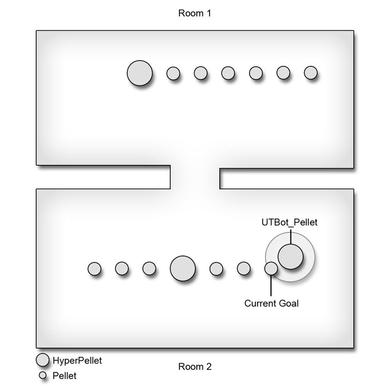
그림 11.63 - 보트는 골에 도달하는 것에 따라, 등록하는 골의 충돌 반경내에 없으면 안됩니다. *6. * 마지막으로, 모든 If-문장의 다음에, 함수는, 다른 모든 상황에 대응하는 것으로서 False 를 리턴 합니다.
return false;*7. * 작업 결과를 잃지 않기 위해(때문에) 스크립트를 보존해 주세요. <<<< 튜토리얼의 종료 >>>>
튜토리얼 11.25 - PELLETCOLLECTING 상태 코드
PelletCollecting 상태의 마지막 부분은 상태 코드 자신입니다. 이 코드는, 함수내에 포함되어 있지 않습니다만, 보트가 PelletCollecting 상태에 있을 때 실행됩니다. 이 코드는, PelletCollecting 상태때에, 보트가 무엇을 실시할까를 실제로 고하는 것입니다. 주기 : 이 튜토리얼 및 이 후의 튜토리얼 상태 코드내에서 사용된 함수의 상당수는, 잠재적인 함수이므로, 상태내로부터 불려 갈 뿐이어, 임의의 함수내로부터 불려 가지 않는 것을 의미합니다. *1. * ConTEXT 및 UTBot_pellet.uc 스크립트를 오픈해 주세요. *2. * 상태 코드는, 상태안의 모든 함수 선언의 뒤로 놓여지고 라벨로부터 개시합니다. 여기에서는, Begin 가 됩니다.Begin:*3. * 상태가 개시했을 때는 언제라도, HasReachedGoal() 함수를 호출하는 것으로, 또, If-문내의 조건으로서 리턴치를 사용해, 보트가 현재의 목적지에 닿았는지 어떠했는지를 판단하기 위해서(때문에) 체크가 실행됩니다. 함수가 True 를 리턴 했을 경우는, 보트에 대한 새로운 목적지를 찾아내기 위해서(때문에) FindNewGoal() 함수가 불려 갑니다.
if(HasReachedGoal())
{
FindNewGoal();
}
*4. * 다음에, 이제(벌써) 1 개의 If-문장으로, 새로운 목적지가 발견되었는지 어떠했는지를 확인합니다.
if(CurrentGoal ! = None)
{
}
*5. * 이 If-문장의 내부에서는, 2 개의 가능성이 있는 동작중 1 개(살)이 실행됩니다. 최초로, 보트는, ActorReachable() 함수를 사용해, 현재의 위치로부터 직접 CurrentGoal 에 도달 가능한가를 확인합니다. 이 함수는, 함수에게 건네진 Actor 가, 이동 경로의 네트워크를 사용해, 중간 지점까지 이동할 필요 없고, 이동할 수 있을까를 결정합니다. 만약 CurrentGoal 가 도달 가능하면, 보트는, MoveToward() 함수를 이용해, 접근하도록(듯이) 지시받습니다.
if(ActorReachable(CurrentGoal))
{
MoveToward(CurrentGoal);
}

그림 11.64 - 보트는 직접 골에 이동합니다. *6. * 만약 CurrentGoal 에 직접 도달할 수 없으면, 보트는, 최종적으로 마지막 목적지에 도달하기 위해서 향해야 할 중간 지점을 찾아내기 위해서(때문에) 경로 네트워크를 사용할 필요가 있습니다. FindPathToward() 함수는, 희망하는 최종 목적지를 건네받아 최종 목적지에의 경로상의 다음의 중간점을 리턴 합니다. 그 다음에, 간접적으로 CurrentGoal 로 향해 이동하기 위해서, 이 중간점이 MoveToward() 함수에게 건네집니다.
else
{
MoveTarget = FindPathToward(CurrentGoal);
MoveToward(MoveTarget, CurrentGoal);
}

그림 11.65 - 보트는, 중간적인 지점으로 향해 이동합니다. *7. * 모든 선행하는 상태 코드의 뒤, 모든 If-문장의 외측에서, LatentWhatToDoNext() 함수가 불려 갑니다. 이 함수는, 보트의 주요한 의사결정을 했더니 ExecuteWhatToDoNext() 함수를 최종적으로 호출합니다. UTBot_pellet 클래스에 추가된 다른 상태와 같게, 이 새로운 PelletCollecting 상태를 보트로 사용하기 위한 코드를 실장하는, 이 후의 튜토리얼로 함수를 오버라이드(override) 합니다.
LatentWhatToDoNext();*8. * 작업 결과를 잃지 않게, 스크립트를 보존해 주세요. <<<< 튜토리얼의 종료 >>>>
튜토리얼 11.26 - PELLETHUNTING 상태, 파트 I: FINDNEWGOAL() 함수
PelletCollecting 상태의 사이는, 보트는, 수집되어 있지 않은 pellet를 찾습니다. 최초로 모든 pellet가 모아지면(자), 보트는, 뒤쫓아 살인 포인트를 빼앗기 (위해)때문에, 현재, 가장 높은 포인트의 플레이어를 찾는 PelletHunting 상태를 사용합니다. 이 상태는, PelletCollecting 상태를 확장하고 있기 (위해)때문에, 그 양쪽 모두안에 포함되는 함수를 오버라이드(override) 합니다. *1. * ConTEXT 및 UTBot_Pellet.uc 스크립트를 오픈해 주세요. *2. * PelletCollecting 상태의 다음에, PelletCollecting 상태로부터 확장된 신규의 PelletHunting 상태를 선언해 주세요.
state PelletHunting extends PelletCollecting
{
}
*3. * FindNewGoal() 함수는, 최초로 PelletCollecting 상태로부터 계승된 버젼을 오버라이드(override) 하고 나서 선언됩니다.
function FindNewGoal()
{
}
*4. * FindNewGoal() 함수의 기본적인 생각은 유지되고 있습니다 ; 보트가 목표로 하는 가장 바람직한 목적지를 지정합니다. 이 인스턴스에서는, 가장 바람직한 목적지는, 보트 자신 이외로, 가장 포인트를 가지고 있는 플레이어입니다. 이 함수는, 그러한 스코아를 비교하면서 레벨내의 모든 콘트롤러에 대해 반복해집니다. 이것에는, 2 개의 로컬 변수가 필요합니다 ; 1 개(살)은, 현재의 콘트롤러를 보관 유지하기 위해(때문에), 이제(벌써) 1 개(살)은, 최고 스코아를 보관 유지하기 (위해)때문에입니다.
local Controller CurrController; local Int CurrScore;*5. * 최초로, 콘트롤러의 Pawn 가 유효한 참조를 가지고 있을지 어떨지가 확인됩니다. 만약 가지고 있지 않으면, 이 함수의 실행을 계속할 필요는 없습니다.
if(Pawn==none) return;*6. * 다음에 CurrentGoal 및 CurrScore 가 초기화됩니다. 모든 다른 플레이어에게 포인트가 없었다고 해도, 목적지가 선택되는 것을 확실히 하기 위해서 CurrScore 변수를 -1 에 세트 함과 동시에, 현재, 먼지에 대한 어떠한 참조를 가지고 있는 CurrentGoal 변수는 삭제됩니다.
CurrScore = -1; CurrentGoal = None;*7. * 여기서, 레벨내의 개개의 콘트롤러로 반복하기 위해서(때문에), AllControllers 이테레이타가 사용됩니다. 기저의 Controller 클래스가 사용되기 (위해)때문에, 플레이어 및 보트의 쌍방이 포함되어 현재의 콘트롤러는 CurrController 로컬 변수에 의해 보관 유지됩니다.
foreach WorldInfo.AllControllers(class'Engine.Controller', CurrController)
{
}
*8. * 현재의 콘트롤러가 문제가 되고 있는 보트는 아닌 것을 확인하기 위해(때문에), 이테레이타의 내부에서, 현재의 콘트롤러는, Self 키워드를 사용해 보트라고 비교됩니다. 또, 현재의 콘트롤러의 스코아는, 콘트롤러의 포인트가 보다 높은지 어떤지를 확인하기 위해서 CurrScore 라고 비교됩니다. 이것들 조건이 양쪽 모두 합치하면(자), 현재의 콘트롤러의 Pawn 는, CurrentGoal 로서 설정되어 그 스코아가 CurrScore 로서 설정됩니다.
if(CurrController ! = self && CurrController.PlayerReplicationInfo.Score > CurrScore)
{
CurrScore = CurrController.PlayerReplicationInfo.Score;
CurrentGoal = CurrController.Pawn;
}
*9. * 작업 결과를 잃지 않게 스크립트를 보존해 주세요.
<<<< 튜토리얼의 종료 >>>>
튜토리얼 11.27 - PELLETHUNTING 상태, 파트 II: HASREACHEDGOAL() 함수
현재, 보트는 플레이어를 추적하고 있기 (위해)때문에, 목적지에의 경로의 정의는 조금씩 변경되고 있습니다. PelletHunting 상태에 대해서는, 보트는 목적지에 도달한다고 보이기 전에, 목적지로부터 특정의 거리안에 존재할 필요가 있을 뿐입니다. 통상, 적에 대해서 직접 가까워지는 것은, 최상의 전략이 아닙니다. 그 때문에, 보트가 허용 된 반경내에 존재한다면, 기존의 전투기노우를 사용해, 플레이어의 추적, 및, 전투의 개시를 지시받습니다. *1. * ConTEXT 및 UTBot_Pellet.uc 스크립트를 오픈해 주세요. *2. * PelletHunting 상태내의 FindNewGoal() 함수의 뒤로, 이 상태와 매우 자주(잘) 비슷한 PelletCollection 상태로부터 HasReachedGoal() 함수를 카피 & 페이스트 해 주세요.
function Bool HasReachedGoal()
{
if(Pawn==none)
return false;
if(CurrentGoal == None || MoveTarget == none)
return true;
if( bResetMove ||
VSize(CurrentGoal.Location-Pawn.Location) < Pawn.CylinderComponent.CollisionRadius )
return true;
return false;
}
*3. * 초의 2 개의 If-문장은 그대로입니다만, 3 개째를 변경하지 않으면 안됩니다. 그것은, CurrentGoal 로부터 보트까지의 거리를 계산해, 보트가 목적지로 나아가지 않으면 안 되는 최소의 거리, 여기에서는 1024 유니트로 나타나는 거리를 설정하기 위해서 결과를 비교하는 If-문장에 의해 옮겨놓을 수 있습니다.
if(VSize(CurrentGoal.Location-Pawn.Location) < 1024)
{
}
*4. * If-문장의 내부에서는, CurrentGoal 는, 이 시점에서 보트의 Enemy 로서 설정됩니다.
Enemy = Pawn(CurrentGoal);Enemy 는, Pawn 가 아니면 안되기 때문에, 여기에서는 캐스트가 필요합니다. PelletHunting 상태에 대해서는, CurrentGoal 가 Pawn 인 것이 보증되고 있으므로, 이와 같이 동작할 뿐입니다.
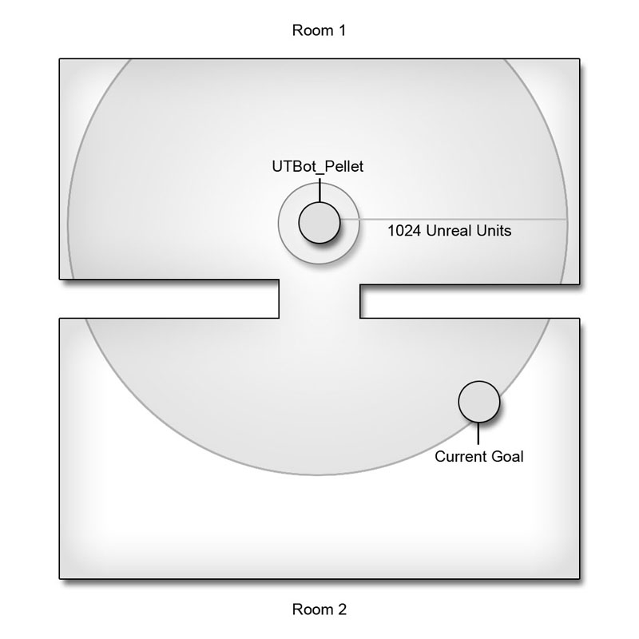
그림 11.66 - 목적지는, 보트의 1024 유니트내에서는, 적이 됩니다. *5. * 다른 If-문장은, 보트의 주변 시야내에서 볼 수가 있도록(듯이) Pawn 가 건네받았을 경우에 True 를 리턴 하는 CanSee() 함수의 리턴치를 사용합니다.
if(CanSee(Pawn(CurrentGoal)))
{
}
*6. * 조건이 합치하면(자), 보트가 Enemy 에 공격 가능한 것을 나타내는 True 치와 RelativeStrength() 함수로부터 리턴 된 Enemy 의 강함을 건네주어 FightEnemy() 함수가 불려 갑니다. 이 함수는, Enemy 와 어떻게 싸울까를 결정하기 위해서(때문에) UTBot 클래스의 기존의 기능을 사용합니다.
FightEnemy(true, RelativeStrength(Enemy));

그림 11.67 - 적에 대해서 조준선을 가질 때, 보트는 공격합니다. *7. * 작업 결과를 잃지 않게, 스크립트를 보존해 주세요. <<<< 튜토리얼의 종료 >>>>
튜토리얼 11.28 - EXECUTEWHATTODONEXT() 및 WANDERORCAMP() 함수를 오버라이드(override) 합니다
UTBot_Pellet 클래스내에 상태가 있습니다만, 현재는, 이러한 2 개 상태의 어느 것에도 보트를 배치하기 위한 기능은 존재하지 않습니다, 그러나 auto 키워드를 사용해 PelletCollecting 상태에 초기 배치됩니다. 단지 상태내에 1 번만 배치하는 것으로, 상태 코드를 1 번 실행해, 보트의 기능을 정지합니다. 상태 코드내의 LatentWhatToDoNext() 함수의 호출은, 적절한 때에 ExecuteWhatToDoNext() 함수를 강제하는 것에 의해, 이 처리에의 책임을 집니다. 함수를 오버라이드(override) 해, 기본적으로, 보트는 pellet를 모으는지, 리더를 추적하는지, 기존의 UTBot 동작을 사용할까의 어느쪽이든을 선택합니다. *1. * ConTEXT 및 UTBot_Pellet.uc 스크립트를 오픈해 주세요. *2. * 임의 상태의 외측에서, ExecuteWhatToDoNext() 이벤트를 선언해 주세요. 이하의 내용을 가질 것입니다 :
protected event ExecuteWhatToDoNext()
{
}
*3. * 이 함수의, 이 클래스의 버젼은, UTBot 동작을 사용하는 대신에, 보트가 pellet를 모을까 리더를 추적할 가능성의 백분율을 계산하기 위해서, 보트에 속하는 몇개의 프롭퍼티의 가중평균을 사용합니다. 이 가중평균은, 4 개의 독립한 부분에서 완성되어 있습니다.
4 * FClamp(Skill/6. 0, 0.0, 1.0)보트의 Skill 는, 정규화되어 또, 0.0 에서 1.0 의 범위에 클램프 되어 4 의 중량감이 주어집니다.
2 * Aggressiveness직전의 Skill 로 중요 된 값이, 2 의 가중으로, 보트의 Aggressiveness 에 가산됩니다.
2 * (1 - ((CombatStyle + 1.0) / 2))쉬프트 되고 0.0 에서 1.0 의 사이에 정규화된 후, 보트의 CombatStyle 의 역비례치에, 2 의 가중이 주어져, 직전의 결과에 가산됩니다.
2 * (1 - Jumpiness)다음에, 보트의 Jumpiness 프롭퍼티의 역비례치가 2 의 가중으로 주어져 직전의 결과에 추가됩니다.
( 4 * FClamp(Skill/6. 0, 0.0, 1.0) + 2 * Aggressiveness + 2 * (1 - ((CombatStyle + 1.0) / 2)) + 2 * (1 - Jumpiness) ) / 10마지막에 모든 계산, 즉, 평균을 산출하기 위한 모든 가중의 합계를 10 으로 제산합니다. 이러한 값은, 단지 시행 착오의 결과이며, 사용된 프롭퍼티는 Skill 이외는, 개인적인 기호입니다. 스킬의 사용에 가장 많은 가중을 걸치고 있는 것은, 전장에서 작성된 게임 타입에 의해, 그 값이 게임의 진행에 따라 난이도를 더하기 위해서(때문에) 직접 수정되기 (위해)때문에입니다. 이 프롭퍼티를 사용해, 똑같이 게임이 진행되는 것에 따라, 보트가, 보다 공격적으로 pellet를 모으거나 리더를 추적하거나 하는 것을 확실히 합니다. *4. * 전스텝으로부터의 가중평균은, If-문장의 조건 중(안)에서, 0.0 에서 1.0 의 범위의 랜덤인 값이라고 비교됩니다. 가중평균이, 랜덤인 값보다 크면, 보트는 UTBot_Pellet 클래스에 추가된 상태의 1 개에 있습니다. 그렇지 않으면, ExecuteWhatToDoNext()의 UTBot 버젼에의 소환이, 표준의 보트의 동작을 이용하기 위해서 행해집니다.
if(RandRange(0.0, 1.0) < ( 4 * FClamp(Skill/6. 0, 0.0, 1.0) +
2 * Aggressiveness +
2 * (1 - ((CombatStyle + 1.0) / 2)) +
2 * (1 - Jumpiness) ) / 10)
{
}
else
Super.ExecuteWhatToDoNext();
*5. * If-문장의 내부에서는, 수집해야 할 pellet가 그 레벨에 남아 있을까를 판단하기 위해서(때문에), 이제(벌써) 1 개의 If-문장이 사용됩니다.
if(UTPelletGame(WorldInfo.Game). PelletInfo.Pellets.Length > 0)
{
}
else
{
}
*6. * 시작해에 If 블록 중(안)에서, 이 경우는, 수집해야 할 pellet가 남아 있을 때로, 보트는 PelletCollecting 상태입니다. 거기에 앞서, 보트가 아직도 PelletCollecting 상태가 아닌 경우, 보트의 CurrentGoal 는 클리어 됩니다. 이것에 의해, 보트는 다른 상태의 레벨을 걸쳐 이동할 수가 있어 현재의 위치로부터 동떨어진 직전의 목적지로 향해 이동하기 시작하므로, 새로운 상태가 입력되었을 때에 적절한 목적지가 선택됩니다.
if(! IsInState('PelletCollecting'))
CurrentGoal = None;
GotoState('PelletCollecting', 'Begin');
IsInState() 함수는, 보트가 현재 PelletCollecting 상태에 있을지 어떨지를 지정하는 Bool 치를 리턴 합니다. GotoState() 함수는, 보트를 지정한 PelletCollecting 상태에 둡니다. 옵션의 라벨 Begin 가 함수에게 건네져 그 상태 상태 코드를, 라벨로부터 실행 개시하도록(듯이) 보트에 명령합니다.
*7. * 계속되어 Else 블록안입니다만, 수집하는 pellet가 이제 없기 때문에, 보트는, PelletHunting 상태가 됩니다. 직전의 스텝과 같이, 보트가 이미 PelletHunting 상태의 경우는, CurrentGoal 는 클리어 됩니다.
if(! IsInState('PelletHunting'))
CurrentGoal = None;
GotoState('PelletHunting', 'Begin');
*8. * UTBot 클래스의 WanderOrCamp() 펑션은, 클래스의 처리를 통해서 몇번인가 불려 가 보트를 단지 Defending 상태로 합니다. UTPelletGame 에서의 방어에, 특별한 점은 않고, 이 상태를 사용하는 것은 특히 편리하지는 않습니다. 이 함수는, 보트를 클래스내에서 정의된 새로운 상태의 1 개로 하기 (위해)때문에, UTBot_Pellet 클래스내에서 오버라이드(override) 됩니다. 오버라이드(override)를 실시하기 위해서(때문에) WanderOrCamp() 함수를 선언해 주세요.
function WanderOrCamp()
{
}
*9. * 여기서, 내부의 If-문장을, 수집하는 pellet의 나머지량에 의존해, 적절한 상태에 보트를 두기 (위해)때문에 ExecuteWhatToDoNext() 함수로부터 카피해 주세요.
if(UTPelletGame(WorldInfo.Game). PelletInfo.Pellets.Length > 0)
{
if(! IsInState('PelletCollecting'))
CurrentGoal = None;
GotoState('PelletCollecting', 'Begin');
}
else
{
if(! IsInState('PelletHunting'))
CurrentGoal = None;
GotoState('PelletHunting', 'Begin');
}
*10. * 작업 결과를 잃지 않게 스크립트를 보존해 주세요.
<<<< 튜토리얼의 종료 >>>>
튜토리얼 11.29 - PELLET 클래스의 보트의 설정
보트의 행동으로 자주(잘) 일어나는 것으로서 보트가 pellet로 향해 이동하고 있을 때에, 거기에 도달하기 전에 다른 플레이어가 pellet를 수집해 버린다고 하는 문제가 있습니다. 이 상황에 대처하기 위해서, 몇개의 추가의 기능을 Pellet, HyperPellet 및 SuperPellet 클래스에 추가하지 않으면 안됩니다. *1. * ConTEXT 및 Pellet.uc, HyperPellet.uc 및 SuperPellet.uc 스크립트를 오픈해 주세요. *2. * Touch() 이벤트에서는, 현재 이 pellet로 향해 이동하고 있는 임의의 보트는, 그 보트에 새로운 목적지를 선택시키기 위해서(때문에) bResetMove 변수를 True 로 설정할 필요가 있습니다. 이것은, 레벨내의 UTBot_Pellet 콘트롤러를 대상으로 반복하는 것에 의해 실행되기 때문에, AI 라고 명명된 UTBot_Pellet 로컬 변수가 필요합니다.local UTBot_Pellet AI;*3. * If-문장의 내부에, UTBot_Pellet 클래스 및 AI 로컬 변수를 건네주어 AllControllers 이테레이타 함수를 사용하는 이테레이타를 설정해 주세요.
foreach WorldInfo.AllCOntrollers(class'MasteringUnrealScript.UTBot_Pellet', AI)
{
}
*4. * 이테레이타의 내부에서는, 현재의 보트의 CurrentGoal 는, If-문장을 사용해 pellet에 대해서 체크됩니다. pellet 및 보트의 CurrentGoal 가 동일하면, 보트의 bResetMove 프롭퍼티는 True 로 설정됩니다.
if(AI.CurrentGoal == self) AI.bResetMove = true;*5. * 여기서, 새로운 로컬 변수 선언을 HyperPellet 및 SuperPellet 클래스의 Touch() 이벤트내에 카피해 주세요. *6. * 마지막으로, 2 개의 추가 pellet 클래스안에 이테레이타를 카피해 주세요. *7. * 작업 결과를 잃지 않게, 스크립트를 보존해 주세요. <<<< 튜토리얼의 종료 >>>>
튜토리얼 11.30 - pellet 보트의 컴파일 및 테스트의 실시
UTPelletGame 게임 타입에 대한 커스텀 보트의 작성이 완료하면(자), UTPelletGame 클래스는, 신규 보트 클래스를 설정하는 것을 지정될 필요가 있습니다. 그것이 완료했을 때에, 스크립트는 컴파일 되어 게임 타입은 보트가 예기 한 대로 동작하는 것을 확인하기 위해서 테스트할 수 있습니다. *1. * ConTEXT 및 UTPelletGame.uc 스크립트를 오픈해 주세요. *2. * defaultproperties 블록내에서, 신규 보트 클래스 UTBot_Pellet 를 참조하기 위해서 BotClass 프롭퍼티를 설정해 주세요.BotClass=Class'MasteringUnrealScript.UTBot_Pellet'*3. * 스크립트를 보존해, 스크립트를 컴파일 해 문법 에러가 있으면(자) 수정해 주세요. *4. * Unreal Tournament 3 을 로드해, Instant Action 게임을 선택해 주세요.

그림 11.68 - Instant Action 게임이 개시됩니다. *5. * 다음의 화면으로부터 Select UTPelletGame 를 선택해, 그 후로 CH_10_PowerDome 맵을 선택해 주세요.
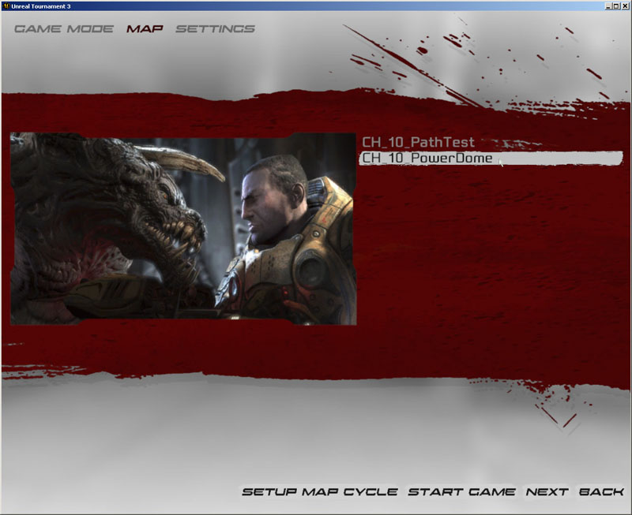
그림 11.69 - CH_10_PowerDome 맵이 선택됩니다. *6. * 맵상에 배치하고 싶은 수만큼 보트를 두기 위해서(때문에), 보트의 수를 선택해 주세요. 5 에서 7 이 통상 이 맵에는 적격인 수입니다. 그리고, 게임의 개시를 선택해 주세요.

그림 11.70 - 보트는 테스트용으로 맵에 추가되지 않으면 안됩니다. *7. * 이 시점에서는, 게임과 보트의 동작의 테스트를 할 책임은 조작자에게 있습니다. 콘솔로 'god'라고 입력해 God 모드를 유효하게 하는 것은, 새로운 보트의 동작을 관찰하고 있는 동안에 살해당하지 않게 되므로, 통상은 좋은 생각입니다. 언제라도 각각의 보트가 몇 포인트를 가지고 있을까를 보기 (위해)때문에, 기록 게시판을 표시하기 위해서 F1 를 누를 수가 있습니다. 이것은, 통상 기대하도록(듯이) pellet의 수집을 실시하고 있는지를 확인하기에는 좋은 방법입니다.

그림 11.71 - 게임내의 기록 게시판은, 게임중에 각각의 플레이어에 의한 pellet 수집의 수를 표시합니다. 검색하고 있는 주된 것은, 수집된 pellet, 및, 가장 수많은 pellet를 가지는 보트를 찾아 공격하는 적은 pellet의 보트입니다. 나머지의 pellet가 모두 수집되었을 때에, 강제적으로 나머지의 보트가 모두 뒤쫓아 오기 (위해)때문에, 반이상의 pellet를 자기 자신으로 모으는 것은, 이것을 테스트하는 좋은 방법입니다.

그림 11.72 - 보트는 pellet를 수집중입니다. 이러한 튜토리얼에서는, 다른 동작에 대한 상태의 이용을 나타낼 뿐만 아니라, 할 수 있으면, 콘트롤러 클래스에 짜넣어진 함수를 사용한, 새로운 AI 및 네비게이션 기능을 실장하는 방법에 대한 통찰이 주어지면 좋다고 생각합니다. <<<< 튜토리얼의 종료 >>>>
11. 8 - 요약
상태는, Unreal Engine 3 에 대해, 복잡한 제어 구조의 필요성을 최소로 하면서, 많은 상황으로 엄밀하게 다른 동작을 실시하기 (위해)때문에, 그 게임내의 오브젝트를 이용할 수 있도록(듯이) 하는 믿을 수 없을 정도 강력한 툴입니다. 그렇게는 말해도, 이것은 게임 환경에서 사용하는 오브젝트의 생성에 대해, 개별적으로 UnrealScript 의 프로그램 언어를 조정한 케이스의 1 개에 지나지 않습니다. 상태에 의해 제공된 구성 및, 코드의 가독성에 의해, 게임 플레이 프로그래머가 이용 가능한, 믿을 수 없을 정도(수록) 복잡한 동작을 실시하는 신규 아이템이, 보다 간단하게 작성됩니다.추가 파일
- TurretContent.upk: TurretContent.upk
- Chapte11_CompleteSource.rar: Complete Source Files
- Chapter11_Maps.rar: Chapter 11 Maps